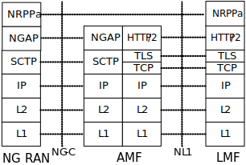
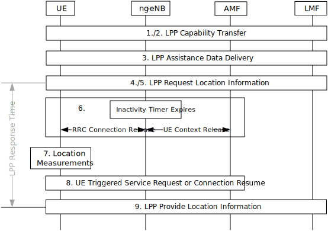
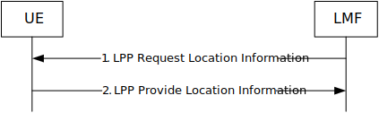

3GPP TS 38.305 V17.8.0 (2025-03)
Technical Specification
3rd Generation Partnership Project;
Technical Specification Group Radio Access Network;
NG Radio Access Network (NG-RAN);
Stage 2 functional specification of
User Equipment (UE) positioning in NG-RAN
(Release 17)
The present document has been developed within the 3rd Generation
Partnership Project (3GPP TM) and may be further elaborated
for the purposes of 3GPP..
The present document has not been subject to any approval process by the
3GPP Organizational Partners and shall not be implemented.
This Specification is provided for future development work within 3GPP
only. The Organizational Partners accept no liability for any use of
this Specification.
Specifications and Reports for implementation of the 3GPP TM
system should be obtained via the 3GPP Organizational Partners'
Publications Offices.
3GPP
Postal address
3GPP support office address
650 Route des Lucioles - Sophia Antipolis
Valbonne - FRANCE
Tel.: +33 4 92 94 42 00 Fax: +33 4 93 65 47 16
Internet
http://www.3gpp.org
Copyright Notification
No part may be reproduced except as authorized by written
permission.
The copyright and the foregoing restriction extend to reproduction in
all media.
2025, 3GPP Organizational Partners (ARIB, ATIS, CCSA, ETSI, TSDSI, TTA, TTC).
All rights reserved.
UMTS is a Trade Mark of ETSI registered for the benefit of its members
3GPP is a Trade Mark of ETSI registered for the benefit of its
Members and of the 3GPP Organizational Partners
LTE is a Trade Mark of ETSI registered for the benefit of its Members
and of the 3GPP Organizational Partners
GSM and the GSM logo are registered and owned by the GSM Association
Bluetooth is a Trade Mark of the Bluetooth SIG registered for the benefit of its members
Foreword 10
1 Scope 11
2 References 11
3 Definitions, symbols and abbreviations 13
3.1 Definitions 13
3.2 Abbreviations 14
4 Main concepts and requirements 16
4.1 Assumptions and Generalities 16
4.2 Role of UE Positioning Methods 17
4.3 Standard UE Positioning Methods 17
4.3.1 Introduction 17
4.3.2 Network-assisted GNSS methods 19
4.3.3 OTDOA positioning 19
4.3.4 Enhanced Cell ID methods 19
4.3.5 Barometric pressure sensor positioning 19
4.3.6 WLAN positioning 19
4.3.7 Bluetooth positioning 20
4.3.8 TBS positioning 20
4.3.9 Motion sensor positioning 20
4.3.10 NR Enhanced Cell ID methods 20
4.3.11 Multi-RTT positioning 20
4.3.12 DL-AoD positioning 21
4.3.13 DL-TDOA positioning 21
4.3.14 UL-TDOA positioning 21
4.3.15 UL-AoA 21
5 NG-RAN UE Positioning Architecture 21
5.1 Architecture 21
5.2 UE Positioning Operations 22
5.3 NG-RAN Positioning Operations 24
5.3.1 General NG-RAN Positioning Operations 24
5.3.2 OTDOA Positioning Support 24
5.3.3 Assistance Information Broadcast Support 24
5.3.4 NR RAT-Dependent Positioning Support 24
5.4 Functional Description of Elements Related to UE Positioning in NG-RAN 24
5.4.1 User Equipment (UE) 24
5.4.2 gNB 25
5.4.3 ng-eNB 25
5.4.4 Location Management Function (LMF) 25
5.4.5 Positioning Reference Unit (PRU) 26
6 Signalling protocols and interfaces 26
6.1 Network interfaces supporting positioning operations 26
6.1.1 General LCS control plane architecture 26
6.1.2 NR-Uu interface 26
6.1.3 LTE-Uu interface 26
6.1.4 NG-C interface 26
6.1.5 NL1 interface 26
6.1.6 F1 interface 27
6.2 UE-terminated protocols 27
6.2.1 LTE Positioning Protocol (LPP) 27
6.2.2 Radio Resource Control (RRC) for NR 27
6.2.3 Radio Resource Control (RRC) for LTE 27
6.2.4 Medium Access Control (MAC) for NR 28
6.3 NG-RAN Node terminated protocols 28
6.3.1 NR Positioning Protocol A (NRPPa) 28
6.3.2 NG Application Protocol (NGAP) 28
6.4 Signalling between an LMF and UE 28
6.4.1 Protocol Layering 28
6.4.2 LPP PDU Transfer 29
6.5 Signalling between an LMF and NG-RAN node 31
6.5.1 Protocol Layering 31
6.5.2 NRPPa PDU Transfer for UE Positioning 31
6.5.3 NRPPa PDU Transfer for Positioning Support 32
6.5.4 NRPPa PDU Transfer for Assistance Information Broadcast 33
6.6 Void 35
7 General NG-RAN UE Positioning procedures 35
7.1 General LPP procedures for UE Positioning 35
7.1.1 LPP procedures 35
7.1.2 Positioning procedures 35
7.1.2.1 Capability transfer 35
7.1.2.2 Assistance data transfer 35
7.1.2.3 Location information transfer 35
7.1.2.4 Multiple transactions 35
7.1.2.5 Sequence of procedures 35
7.1.2.6 Error handling 36
7.1.2.7 Abort 36
7.1.3 UE positioning measurements in RRC_IDLE state for NB-IoT 36
7.2 General NRPPa Procedures for UE Positioning 37
7.2.1 NRPPa procedures 37
7.2.2 NRPPa transaction types 38
7.2.2.1 Location information transfer 38
7.3 Service Layer Support using combined LPP and NRPPa Procedures 38
7.3.1 General 38
7.3.2 NI-LR and MT-LR Service Support 38
7.3.3 MO-LR Service Support 39
7.3.4 Deferred MT-LR Event Reporting Support 40
7.4 General RRC procedures for UE Positioning 41
7.4.1 NR RRC Procedures 41
7.4.1.1 Location Measurement Indication 41
7.4.1.2 UE Positioning Assistance Information 42
7.4.2 LTE RRC Procedures 43
7.4.2.1 Inter-frequency RSTD measurement indication 43
7.5 Procedures for Broadcast of Assistance Data 43
7.5.1 General 43
7.5.2 Broadcast Procedures 44
7.6 Procedures for On-Demand PRS transmission 45
7.6.1 General 45
7.6.2 On-Demand PRS transmission procedures 45
7.7 Procedures for Pre-configured Measurement Gap 47
7.7.1 General 47
7.7.2 Pre-configured Measurement Gap procedures 47
7.8 Procedures for Pre-configured PRS processing window 49
7.8.1 General 49
7.8.2 Pre-configured PRS processing window procedures 49
7.9 Positioning in RRC_INACTIVE state 50
8 Positioning methods and Supporting Procedures 50
8.1 GNSS positioning methods 50
8.1.1 General 50
8.1.2 Information to be transferred between NG-RAN/5GC Elements 53
8.1.2.1 Information that may be transferred from the LMF to UE 53
8.1.2.1.1 Reference Time 54
8.1.2.1.2 Reference Location 54
8.1.2.1.3 Ionospheric Models 54
8.1.2.1.4 Earth Orientation Parameters 54
8.1.2.1.5 GNSS-GNSS Time Offsets 54
8.1.2.1.6 Differential GNSS Corrections 54
8.1.2.1.7 Ephemeris and Clock Models 54
8.1.2.1.8 Real-Time Integrity 54
8.1.2.1.9 Data Bit Assistance 55
8.1.2.1.10 Acquisition Assistance 55
8.1.2.1.11 Almanac 55
8.1.2.1.12 UTC Models 55
8.1.2.1.13 RTK Reference Station Information 55
8.1.2.1.14 RTK Auxiliary Station Data 55
8.1.2.1.15 RTK Observations 55
8.1.2.1.16 RTK Common Observation Information 56
8.1.2.1.17 GLONASS RTK Bias Information 56
8.1.2.1.18 RTK MAC Correction Differences 56
8.1.2.1.19 RTK Residuals 56
8.1.2.1.20 RTK FKP Gradients 56
8.1.2.1.21 SSR Orbit Corrections 56
8.1.2.1.22 SSR Clock Corrections 57
8.1.2.1.23 SSR Code Bias 57
8.1.2.1.24 SSR Phase Bias 57
8.1.2.1.25 SSR STEC Corrections 57
8.1.2.1.26 SSR Gridded Correction 58
8.1.2.1.27 SSR URA 58
8.1.2.1.28 SSR Correction Points 58
8.1.2.1.29 Integrity Service Parameters 58
8.1.2.1.30 Integrity Alerts 58
8.1.2.1a Recommendations for grouping of assistance data to support different RTK service levels 58
8.1.2.1b Mapping of integrity parameters 60
8.1.2.2 Information that may be transferred from the UE to LMF 61
8.1.2.2.1 GNSS Measurement Information 62
8.1.2.2.1.1 UE-based mode 62
8.1.2.2.1.2 UE-assisted mode 62
8.1.2.2.2 Additional Non-GNSS Related Information 62
8.1.3 Assisted-GNSS Positioning Procedures 63
8.1.3.1 Capability Transfer Procedure 63
8.1.3.2 Assistance Data Transfer Procedure 63
8.1.3.2.1 LMF initiated Assistance Data Delivery 63
8.1.3.2.1a LMF initiated Periodic Assistance Data Delivery 63
8.1.3.2.2 UE initiated Assistance Data Transfer 64
8.1.3.2.2a UE initiated Periodic Assistance Data Transfer 65
8.1.3.3 Location Information Transfer Procedure 66
8.1.3.3.1 LMF initiated Location Information Transfer Procedure 66
8.1.3.3.2 UE-initiated Location Information Delivery Procedure 66
8.2 OTDOA positioning 67
8.2.1 General 67
8.2.2 Information to be transferred between NG-RAN/5GC Elements 67
8.2.2.1 Information that may be transferred from the LMF to UE 67
8.2.2.2 Information that may be transferred from the ng-eNB to LMF 67
8.2.2.3 Information that may be transferred from the UE to LMF 68
8.2.2.4 Information that may be transferred from the gNB to LMF 68
8.2.3 OTDOA Positioning Procedures 68
8.2.3.1 Capability Transfer Procedure 68
8.2.3.2 Assistance Data Transfer Procedure 68
8.2.3.2.1 Assistance Data Transfer between LMF and UE 68
8.2.3.2.1.1 LMF initiated Assistance Data Delivery 68
8.2.3.2.1.2 UE initiated Assistance Data Transfer 69
8.2.3.2.2 Assistance Data Delivery between LMF and NG-RAN node 69
8.2.3.2.2.1 LMF-initiated assistance data delivery to the LMF 70
8.2.3.3 Location Information Transfer Procedure 70
8.2.3.3.1 LMF-initiated Location Information Transfer Procedure 70
8.2.3.3.2 UE-initiated Location Information Delivery procedure 71
8.3 Enhanced cell ID positioning methods 71
8.3.1 General 71
8.3.2 Information to be transferred between NG-RAN/5GC Elements 72
8.3.2.1 Information that may be transferred from the LMF to UE 72
8.3.2.2 Information that may be transferred from the ng-eNB to LMF 72
8.3.2.3 Information that may be transferred from the gNB to LMF 73
8.3.2.4 Information that may be transferred from the UE to LMF 73
8.3.3 Downlink E-CID Positioning Procedures 73
8.3.3.1 Capability Transfer Procedure 73
8.3.3.2 Assistance Data Transfer Procedure 73
8.3.3.3 Location Information Transfer Procedure 73
8.3.3.3.1 LMF-initiated Location Information Transfer 73
8.3.3.3.2 UE-initiated Location Information Delivery procedure 74
8.3.4 Uplink E-CID Positioning Procedures 74
8.3.4.1 Capability Transfer Procedure 74
8.3.4.2 Assistance Data Transfer Procedure 75
8.3.4.3 Position Measurement Procedure 75
8.3.4.3.1 LMF-initiated Position Measurement 75
8.4 Barometric pressure sensor positioning 75
8.4.2 Information to be transferred between NG-RAN/5GC Elements 76
8.4.2.1 Information that may be transferred from the LMF to UE 76
8.4.2.1.1 Barometric pressure sensor assistance data 76
8.4.2.2 Information that may be transferred from the UE to LMF 76
8.4.2.2.1 Standalone mode 76
8.4.2.2.2 UE-assisted mode 77
8.4.2.2.3 UE-based mode 77
8.4.3 Barometric Pressure Sensor Positioning Procedures 77
8.4.3.1 Capability Transfer Procedure 77
8.4.3.2 Assistance Data Transfer Procedure 77
8.4.3.2.1 LMF initiated Assistance Data Delivery 77
8.4.3.2.2 UE initiated Assistance Data Transfer 77
8.4.3.3 Location Information Transfer Procedure 78
8.4.3.3.1 LMF initiated Location Information Transfer Procedure 78
8.4.3.3.2 UE-initiated Location Information Delivery Procedure 79
8.5 WLAN positioning 79
8.5.1 General 79
8.5.2 Information to be transferred between NG-RAN/5GC Elements 79
8.5.2.1 Information that may be transferred from the LMF to UE 80
8.5.2.1.1 WLAN AP BSSID 80
8.5.2.1.2 WLAN AP SSID 80
8.5.2.1.3 WLAN AP Type Data 80
8.5.2.1.4 WLAN AP Location 80
8.5.2.2 Information that may be transferred from the UE to LMF 80
8.5.2.2.1 Standalone mode 81
8.5.2.2.2 UE-assisted mode 81
8.5.2.2.3 UE-based mode 81
8.5.3 WLAN Positioning Procedures 81
8.5.3.1 Capability Transfer Procedure 81
8.5.3.2 Assistance Data Transfer Procedure 81
8.5.3.2.1 LMF initiated Assistance Data Delivery 81
8.5.3.2.2 UE initiated Assistance Data Transfer 81
8.5.3.3 Location Information Transfer Procedure 82
8.5.3.3.1 LMF initiated Location Information Transfer Procedure 82
8.5.3.3.2 UE-initiated Location Information Delivery Procedure 83
8.6 Bluetooth positioning 83
8.6.2 Information to be transferred between NG-RAN/5GC Elements 83
8.6.2.1 Information that may be transferred from the LMF to UE 83
8.6.2.2 Information that may be transferred from the UE to LMF 83
8.6.2.2.1 Standalone mode 84
8.6.2.2.2 UE-assisted mode 84
8.6.3 Bluetooth Positioning Procedures 84
8.6.3.1 Capability Transfer Procedure 84
8.6.3.2 Assistance Data Transfer Procedure 84
8.6.3.3 Location Information Transfer Procedure 84
8.6.3.3.1 LMF initiated Location Information Transfer Procedure 84
8.6.3.3.2 UE-initiated Location Information Delivery Procedure 85
8.7 TBS positioning 85
8.7.1 General 85
8.7.2 Information to be transferred between NG-RAN/5GC Elements 86
8.7.2.1 Information that may be transferred from the LMF to UE 86
8.7.2.1.1 Acquisition Assistance 86
8.7.2.1.2 Almanac 86
8.7.2.2 Information that may be transferred from the UE to LMF 86
8.7.2.2.1 Standalone mode 86
8.7.2.2.2 UE-assisted mode 87
8.7.2.2.3 UE-based mode 87
8.7.3 TBS Positioning Procedures 87
8.7.3.1 Capability Transfer Procedure 87
8.7.3.2 Assistance Data Transfer Procedure 87
8.7.3.2.1 LMF initiated Assistance Data Delivery 87
8.7.3.2.2 UE initiated Assistance Data Transfer 87
8.7.3.3 Location Information Transfer Procedure 88
8.7.3.3.1 LMF initiated Location Information Transfer Procedure 88
8.7.3.3.2 UE-initiated Location Information Delivery Procedure 89
8.8 Motion sensor positioning method 89
8.8.1 General 89
8.8.2 Information to be transferred between NG-RAN/5GC Elements 89
8.8.2.1 General 89
8.8.2.2 Information that may be transferred from the UE to LMF 89
8.8.2.2.1 UE-assisted, UE-based, Standalone mode 89
8.8.2.2.2 UE Displacement and Movement Information 90
8.8.2.3 Information that may be transferred from the LMF to the UE 90
8.8.3 Motion Sensors Location Information Transfer Procedure 90
8.8.3.1 General 90
8.8.3.2 LMF initiated Location Information Transfer Procedure 90
8.8.3.3 UE-initiated Location Information Delivery Procedure 90
8.9 NR Enhanced cell ID positioning methods 91
8.9.1 General 91
8.9.2 Information to be transferred between NG-RAN/5GC Elements 91
8.9.2.1 Information that may be transferred from the LMF to UE 91
8.9.2.2 Information that may be transferred from the UE to LMF 91
8.9.2.3 Information that may be transferred from the gNB to LMF 92
8.9.3 Downlink NR E-CID Positioning Procedures 92
8.9.3.1 Capability Transfer Procedure 92
8.9.3.2 Assistance Data Transfer Procedure 92
8.9.3.3 Location Information Transfer Procedure 92
8.9.3.3.1 LMF-initiated Location Information Transfer from UE 92
8.9.3.3.2 UE-initiated Location Information Delivery procedure 93
8.9.4 Uplink NR E-CID Positioning Procedures 93
8.9.4.1 Capability Transfer Procedure 93
8.9.4.2 Assistance Data Transfer Procedure 93
8.9.4.3 Location Information Transfer Procedure 94
8.10 Multi-RTT positioning 95
8.10.1 General 95
8.10.2 Information to be transferred between NG-RAN/5GC Elements 95
8.10.2.1 Information that may be transferred from the LMF to UE 95
8.10.2.2 Information that may be transferred from the UE to LMF 95
8.10.2.3 Information that may be transferred from the gNB to LMF 95
8.10.2.4 Information that may be transferred from the LMF to gNBs 96
8.10.3 Multi-RTT Positioning Procedures 98
8.10.3.1 Procedures between LMF and UE 98
8.10.3.1.1 Capability Transfer Procedure 98
8.10.3.1.2 Assistance Data Transfer Procedure 98
8.10.3.1.2.1 Assistance Data Transfer between LMF and UE 98
8.10.3.1.2.1.1 LMF initiated Assistance Data Delivery 98
8.10.3.1.2.1.2 UE initiated Assistance Data Transfer 98
8.10.3.1.3 Location Information Transfer Procedure 99
8.10.3.1.3.1 LMF-initiated Location Information Transfer Procedure 99
8.10.3.1.3.2 UE-initiated Location Information Delivery procedure 100
8.10.3.2 Procedures between LMF and gNB 100
8.10.3.2.1 Assistance Data Delivery between LMF and gNB 100
8.10.3.2.2 Location Information Transfer/Assistance Data Transfer Procedure 101
8.10.3.2.3 Positioning Activation/Deactivation Procedure 102
8.10.4 Sequence of Procedure for Multi-RTT positioning 103
8.11 DL-AoD positioning 105
8.11.1 General 105
8.11.2 Information to be transferred between NG-RAN/5GC Elements 105
8.11.2.1 Information that may be transferred from the LMF to UE 105
8.11.2.2 Information that may be transferred from the UE to LMF 106
8.11.2.3 Information that may be transferred from the gNB to LMF 106
8.11.3 DL-AoD Positioning Procedures 107
8.11.3.1 Procedures between LMF and UE 107
8.11.3.1.1 Capability Transfer Procedure 107
8.11.3.1.2 Assistance Data Transfer Procedure 107
8.11.3.1.2.1 LMF initiated Assistance Data Delivery 107
8.11.3.1.2.2 UE initiated Assistance Data Transfer 107
8.11.3.1.3 Location Information Transfer Procedure 108
8.11.3.1.3.1 LMF-initiated Location Information Transfer Procedure 108
8.11.3.1.3.2 UE-initiated Location Information Delivery procedure 109
8.11.3.2 Procedures between LMF and gNB 109
8.11.3.2.1 Assistance Data Delivery procedure 109
8.11.3.2.1.1 LMF-initiated assistance data delivery to the LMF 109
8.12 DL-TDOA positioning 110
8.12.1 General 110
8.12.2 Information to be transferred between NG-RAN/5GC Elements 110
8.12.2.1 Information that may be transferred from the LMF to UE 110
8.12.2.2 Information that may be transferred from the UE to LMF 110
8.12.2.3 Information that may be transferred from the gNB to LMF 111
8.12.3 DL-TDOA Positioning Procedures 111
8.12.3.1 Procedures between LMF and UE 111
8.12.3.1.1 Capability Transfer Procedure 111
8.12.3.1.2 Assistance Data Transfer Procedure 111
8.12.3.1.2.1 LMF initiated Assistance Data Delivery 112
8.12.3.1.2.2 UE initiated Assistance Data Transfer 112
8.12.3.1.3 Location Information Transfer Procedure 112
8.12.3.1.3.1 LMF-initiated Location Information Transfer Procedure 113
8.12.3.1.3.2 UE-initiated Location Information Delivery procedure 113
8.12.3.2 Procedures between LMF and gNB 113
8.12.3.2.1 Assistance Data Delivery procedure 113
8.12.3.2.1.1 LMF-initiated assistance data delivery to the LMF 114
8.13 UL-TDOA positioning 114
8.13.1 General 114
8.13.2 Information to be transferred between NG-RAN/5GC Elements 114
8.13.2.0 Assistance Data that may be transferred from the gNB to the LMF 114
8.13.2.1 Configuration Data that may be transferred from the gNB to the LMF 115
8.13.2.2 Location Information that may be transferred from the gNBs to LMF 115
8.13.2.3 Information that may be transferred from the LMF to gNBs 115
8.13.3 UL-TDOA Positioning Procedures 116
8.13.3.1 Capability Transfer Procedure 117
8.13.3.2 Assistance Data Transfer Procedure 117
8.13.3.2.1 Assistance Data Delivery between LMF and gNB 117
8.13.3.3 Location Information Transfer/Assistance Data Transfer Procedure 118
8.13.3.3a Positioning Activation/Deactivation Procedure 119
8.13.3.4 Sequence of Procedure for UL-TDOA positioning 120
8.14 UL-AoA positioning 121
8.14.1 General 121
8.14.2 Information to be transferred between NG-RAN/5GC Elements 121
8.14.2.0 Assistance Data that may be transferred from the gNB to the LMF 121
8.14.2.1 Configuration Data that may be transferred from the gNB to the LMF 122
8.14.2.2 Location Information that may be transferred from the gNBs to LMF 122
8.14.2.3 Information that may be transferred from the LMF to gNB 122
8.14.3 UL-AoA Positioning Procedures 123
8.14.3.1 Capability Transfer Procedure 123
8.14.3.2 Assistance Data Transfer Procedure 123
8.14.3.2.1 Assistance Data Delivery between LMF and gNB 123
8.14.3.3 Location Information Transfer/Assistance Data Transfer Procedure 125
8.14.3.3a Positioning Activation/Deactivation Procedure 126
8.14.3.4 Sequence of Procedure for UL-AoA positioning 126
Annex A (informative): Use of LPP with SUPL 129
A.1 SUPL 2.0 Positioning Methods and Positioning Protocols 129
A.2 SUPL 2.0 and NR Architecture 131
A.3 LPP session procedures using SUPL 131
A.4 Procedures combining C-plane and U-plane operations 132
Annex B (informative): Change history 134
This Technical Specification has been produced by the 3rd Generation Partnership Project (3GPP).
The contents of the present document are subject to continuing work within the TSG and may change following formal TSG approval. Should the TSG modify the contents of the present document, it will be re-released by the TSG with an identifying change of release date and an increase in version number as follows:
Version x.y.z
where:
x the first digit:
1 presented to TSG for information;
2 presented to TSG for approval;
3 or greater indicates TSG approved document under change control.
y the second digit is incremented for all changes of substance, i.e. technical enhancements, corrections, updates, etc.
z the third digit is incremented when editorial only changes have been incorporated in the document.
The present document specifies the stage 2 of the UE Positioning function of NG-RAN which provides the mechanisms to support or assist the calculation of the geographical position of a UE. UE position knowledge can be used, for example, in support of Radio Resource Management functions, as well as location-based services for operators, subscribers, and third-party service providers. The purpose of this stage 2 specification is to define the NG-RAN UE Positioning architecture, functional entities and operations to support positioning methods. This description is confined to the NG-RAN Access Stratum. It does not define or describe how the results of the UE position calculation can be utilised in the Core Network (e.g., LCS) or in NG-RAN (e.g., RRM).
UE Positioning may be considered as a network-provided enabling technology consisting of standardised service capabilities that enable the provision of location applications. The application(s) may be service provider specific. The description of the numerous and varied possible location applications which are enabled by this technology is outside the scope of the present document. However, clarifying examples of how the functionality being described may be used to provide specific location services may be included.
This stage 2 specification covers the NG-RAN positioning methods, state descriptions, and message flows to support UE Positioning.
The following documents contain provisions which, through reference in this text, constitute provisions of the present document.
- References are either specific (identified by date of publication, edition number, version number, etc.) or nonspecific.
- For a specific reference, subsequent revisions do not apply.
- For a non-specific reference, the latest version applies. In the case of a reference to a 3GPP document (including a GSM document), a non-specific reference implicitly refers to the latest version of that document in the same Release as the present document.
[1] 3GPPTR 21.905: "Vocabulary for 3GPP Specifications".
[2] 3GPP TS 23.501 "System Architecture for the 5G System; Stage 2".
[3] 3GPP TS 22.071: "Location Services (LCS); Service description, Stage 1".
[4] 3GPP TS 23.032: "Universal Geographical Area Description (GAD)".
[5] IS-GPS-200, Revision D, Navstar GPS Space Segment/Navigation User Interfaces, March 7th, 2006.
[6] IS-GPS-705, Navstar GPS Space Segment/User Segment L5 Interfaces, September 22, 2005.
[7] IS-GPS-800, Navstar GPS Space Segment/User Segment L1C Interfaces, September 4, 2008.
[8] Galileo OS Signal in Space ICD (OS SIS ICD), Draft 0, Galileo Joint Undertaking, May 23rd, 2006.
[9] Global Navigation Satellite System GLONASS Interface Control Document, Version 5, 2002.
[10] IS-QZSS, Quasi Zenith Satellite System Navigation Service Interface Specifications for QZSS, Ver.1.0, June 17, 2008.
[11] Specification for the Wide Area Augmentation System (WAAS), US Department of Transportation, Federal Aviation Administration, DTFA01-96-C-00025, 2001.
[12] RTCM 10402.3, RTCM Recommended Standards for Differential GNSS Service (v.2.3), August 20, 2001.
[13] 3GPP TS 36.331: "Evolved Universal Terrestrial Radio Access (E-UTRA); Radio Resource Control (RRC); Protocol specification".
[14] 3GPP TS 38.331: "NR Radio Resource Control (RRC) protocol specification".
[15] OMA-AD-SUPL-V2_0: "Secure User Plane Location Architecture Approved Version 2.0".
[16] OMA-TS-ULP-V2_0_6: "UserPlane Location Protocol Approved Version 2.0.6".
[17] 3GPP TS 36.214: "Evolved Universal Terrestrial Radio Access (E-UTRA); Physical layer Measurements".
[18] 3GPP TS 36.302: "Evolved Universal Terrestrial Radio Access (E-UTRA); Services provided by the physical layer".
[19] 3GPP TS 36.355: "Evolved Universal Terrestrial Radio Access (E-UTRA); LTE Positioning Protocol (LPP)".
[20] BDS-SIS-ICD-B1I-3.0: "BeiDou Navigation Satellite System Signal In Space Interface Control Document Open Service Signal B1I (Version 3.0)", February, 2019.
[21] IEEE 802.11: "Wireless LAN Medium Access Control (MAC) and Physical Layer (PHY) Specifications"
[22] Bluetooth Special Interest Group: "Bluetooth Core Specification v4.2", December 2014.
[23] ATIS-0500027: "Recommendations for Establishing Wide Scale Indoor Location Performance", May 2015.
[24] 3GPP TS 36.211: "Evolved Universal Terrestrial Radio Access (E-UTRA); Physical channels and modulation".
[25] 3GPP TS 36.305: "Stage 2 functional specification of User Equipment (UE) positioning in EUTRA".
[26] 3GPP TS 23.502: "Procedures for the 5G System; Stage 2".
[27] 3GPP TS 38.455: "NG-RAN; NR Positioning Protocol A (NRPPa)".
[28] 3GPP TS 29.518: "5G System; Access and Mobility Management Services; Stage 3".
[29] 3GPP TS 24.501: "Non-Access-Stratum (NAS) protocol for 5G System (5GS); Stage 3".
[30] 3GPP TS 38.413: "NG-RAN; NG Application Protocol (NGAP)".
[31] RTCM 10403.3, "RTCM Recommended Standards for Differential GNSS Services (v.3.3)", October 7, 2016.
[32] 3GPP TS 38.133: "NR; Requirements for support of radio resource management".
[33] 3GPP TS 29.572: "Location Management Services; Stage 3".
[34] BDS-SIS-ICD-B1C-1.0: "BeiDou Navigation Satellite System Signal In Space Interface Control Document Open Service Signal B1C (Version 1.0)", December, 2017
[35] 3GPP TS 23.273: "5G System (5GS) Location Services (LCS); Stage 2".
[36] IS-QZSS-L6-001, Quasi-Zenith Satellite System Interface Specification Centimetre Level Augmentation Service, Cabinet Office, November 5, 2018.
[37] 3GPP TS 38.215: "NR; Physical layer Measurements".
[38] 3GPP TS 38.401: "3rd Generation Partnership Project; Technical Specification Group Radio Access Network; NG-RAN; Architecture description".
[39] 3GPP TS 38.321: "NR; Medium Access Control (MAC) protocol specification".
[40] 3GPP TS 38.212: "NR; Multiplexing and channel coding".
[41] 3GPP TS 24.571: "Control plane Location Services (LCS) procedures".
[42] 3GPP TS 37.355: "Technical Specification Group Radio Access Network; LTE Positioning Protocol (LPP)".
[43] IRNSS Signal-In-Space (SPS) Interface Control Document (ICD) for standard positioning service version 1.1, August 2017.
[44] BDS-SIS-ICD-B2a-1.0: "BeiDou Navigation Satellite System Signal In Space Interface Control Document Open Service Signal B2a (Version 1.0)", December, 2017.
[45] BDS-SIS-ICD-B3I-1.0: "BeiDou Navigation Satellite System Signal In Space Interface Control Document Open Service Signal B3I (Version 1.0)", February, 2018.
For the purposes of the present document, the terms and definitions given in TR 21.905 [1] and the following apply. A term defined in the present document takes precedence over the definition of the same term, if any, in TR 21.905 [1].
As used in this document, the suffixes "-based" and "-assisted" refer respectively to the node that is responsible for making the positioning calculation (and which may also provide measurements) and a node that provides measurements (but which does not make the positioning calculation). Thus, an operation in which measurements are provided by the UE to the LMF to be used in the computation of a position estimate is described as "UE-assisted" (and could also be called "LMF-based"), while one in which the UE computes its own position is described as "UE-based".
Alert Limit (AL): The maximum allowable positioning error for the purpose of integrity. If the positioning error is beyond this limit, the integrity results of the calculated location may not meet the integrity requirement.
Positioning integrity: A measure of the trust in the accuracy of the position-related data and the ability to provide associated alerts.
Pre-configured assistance data: Refers to the DL-PRS assistance data (with associated validity criteria) that can be provided to the UE (before or during an ongoing LPP positioning session), to be then utilized for potential positioning measurements at a future time (e.g. for deferred MT-LR). Pre-configured DL-PRS assistance data may consist of multiple instances, where each instance is applicable to a different area within the network.
Protection Level (PL): A statistical upper-bound of
the Positioning Error (PE) that ensures that, the probability per unit
of time of the true error being greater than the AL and the PL being
less than or equal to the AL, for longer than the TTA, is less than the
TIR, i.e., the PL satisfies the following inequality:
Prob per unit of time [((PE>AL) &
(PL<=AL)) for longer than TTA] <
TIR
When the PL bounds the positioning error in the horizontal plane or on
the vertical axis then it is called Horizontal Protection Level (HPL) or
Vertical Protection Level (VPL) respectively.
A specific equation for the PL is not specified as this is
implementation-defined. For the PL to be considered valid, it must
simply satisfy the inequality above.
NOTE 1: the PL inequality is valid for all values of the AL.
NOTE 2: the TIR may correspond to the achievable TIR in the case that the requested TIR cannot be satisfied.
PRS-only TP: A TP which only transmits PRS, DL-PRS signals and is not associated with a cell.
PRS Processing Window (PPW): The PRS Processing Window is configured by the network to a UE for NR DL-PRS measurements without measurement gap.
Reception Point (RP): A set of geographically co-located receive antennas (e.g. antenna array (with one or more antenna elements)) for one cell, part of one cell or one UL-SRS-only RP. Reception Points can include base station (ng-eNB or gNB) antennas, remote radio heads, a remote antenna of a base station, an antenna of a UL-SRS-only RP, etc. One cell can include one or multiple reception points. For a homogeneous deployment, each reception point may correspond to one cell.
Rx Time Delay: From a signal reception perspective, there will be a time delay from the time when the RF signal arrives at the Rx antenna to the time when the signal is digitized and time-stamped at the baseband.
Rx Timing Error: Result of Rx time delay involved in the reception of a signal before reporting measurements that are obtained from the signal. It is the uncalibrated Rx time delay, or the remaining delay after the UE/TRP internal calibration/compensation of the Rx time delay, involved in the reception of the DL-PRS/UL SRS signals. The calibration/compensation may also include the calibration/compensation of the relative time delay between different RF chains in the same UE/TRP and may also possibly consider the offset of the Rx antenna phase centre to the physical antenna centre.
SRS-only RP: An RP which only receives UL-SRS signals and is not associated with a cell.
Transmission Point (TP): A set of geographically co-located transmit antennas (e.g. antenna array (with one or more antenna elements)) for one cell, part of one cell or one DL-PRS-only TP. Transmission Points can include base station (ng-eNB or gNB) antennas, remote radio heads, a remote antenna of a base station, an antenna of a DL-PRS-only TP, etc. One cell can include one or multiple transmission points. For a homogeneous deployment, each transmission point may correspond to one cell.
Transmission-Reception Point (TRP): A set of geographically co-located antennas (e.g. antenna array (with one or more antenna elements)) supporting TP and/or RP functionality.
TRP Rx 'Timing Error Group' (TRP Rx TEG): Rx timing errors, associated with TRP reporting of one or more UL measurements, that are within a certain margin.
TRP RxTx 'Timing Error Group' (TRP RxTx TEG): Rx timing errors and Tx timing errors, associated with TRP reporting of one or more gNB Rx-Tx time difference measurements, which have the 'Rx timing errors+Tx timing errors' differences within a certain margin.
TRP Tx 'Timing Error Troup' (TRP Tx TEG): Tx timing errors, associated with TRP transmissions on one or more DL-PRS resources, that are within a certain margin.
Tx Time Delay: From a signal transmission perspective, the time delay from the time when the digital signal is generated at baseband to the time when the RF signal is transmitted from the Tx antenna.
Tx Timing Error: Result of Tx time delay involved in the transmission of a signal. It is the uncalibrated Tx time delay, or the remaining delay after the TRP/UE internal calibration/compensation of the Tx time delay, involved in the transmission of the DL-PRS/UL SRS signals. The calibration/compensation may also include the calibration/compensation of the relative time delay between different RF chains in the same TRP/UE and may also possibly consider the offset of the Tx antenna phase centre to the physical antenna centre.
UE Rx 'Timing Error Group' (UE Rx TEG): Rx timing errors, associated with UE reporting of one or more DL measurements (RSTD), that are within a certain margin.
UE RxTx 'Timing Error Group' (UE RxTx TEG): Rx timing errors and Tx timing errors, associated with UE reporting of one or more UE Rx-Tx time difference measurements, which have the 'Rx timing errors+Tx timing errors' differences within a certain margin.
UE Tx 'Timing Error Group' (UE Tx TEG): Tx timing errors, associated with UE transmissions on one or more UL SRS resources for positioning purpose, that are within a certain margin.
For the purposes of the present document, the abbreviations given in TR 21.905 [1] and the following apply. An abbreviation defined in the present document takes precedence over the definition of the same abbreviation, if any, in TR 21.905[1].
5GC 5G Core Network
5GS 5G System
A-AoA Azimuth-Angle of Arrival
ADR Accumulated Delta Range
AL Alert Limit
AoA Angle of Arrival
AP Access Point
ARP Antenna Reference Point
BDS BeiDou Navigation Satellite System
BSSID Basic Service Set Identifier
CID Cell-ID (positioning method)
CLAS Centimetre Level Augmentation Service
DL-AoD Downlink Angle-of-Departure
DL-PRS Downlink Positioning Reference Signal
DL-TDOA Downlink Time Difference Of Arrival
DNU Do Not Use
E-SMLC Enhanced Serving Mobile Location Centre
E-CID Enhanced Cell-ID (positioning method)
ECEF Earth-Centered, Earth-Fixed
ECI Earth-Centered-Inertial
EGNOS European Geostationary Navigation Overlay Service
E-UTRAN Evolved Universal Terrestrial Radio Access Network
FDMA Frequency Division Multiple Access
FKP Flchenkorrekturparameter (Engl: Area Correction Parameters)
GAGAN GPS Aided Geo Augmented Navigation
GLONASS GLObal'naya NAvigatsionnaya Sputnikovaya Sistema (Engl.: Global Navigation Satellite System)
GMLC Gateway Mobile Location Centre
GNSS Global Navigation Satellite System
GPS Global Positioning System
GRS80 Geodetic Reference System 1980
HESSID Homogeneous Extended Service Set Identifier
LCS LoCation Services
LMF Location Management Function
LPP LTE Positioning Protocol
MAC Master Auxiliary Concept
MBS Metropolitan Beacon System
MO-LR Mobile Originated Location Request
MT-LR Mobile Terminated Location Request
Multi-RTT Multi-Round Trip Time
NavIC NAVigation with Indian Constellation
NG-C NG Control plane
NG-AP NG Application Protocol
NI-LR Network Induced Location Request
N-RTK Network Real-Time Kinematic
NRPPa NR Positioning Protocol A
OTDOA Observed Time Difference Of Arrival
PDU Protocol Data Unit
posSI Positioning System Information
posSIB Positioning SIB
PPP Precise Point Positioning
PPP-RTK Precise Point Positioning Real-Time Kinematic
PRS Positioning Reference Signal (for E-UTRA)
PRU Positioning Reference Unit
QZSS Quasi-Zenith Satellite System
RP Reception Point
RRM Radio Resource Management
RSRP Reference Signal Received Power
RSRPP Reference Signal Received Path Power
RSRQ Reference Signal Received Quality
RSSI Received Signal Strength Indicator
RSTD Reference Signal Time Difference
RTK Real-Time Kinematic
SBAS Space Based Augmentation System
SDT Small Data Transmission
SET SUPL Enabled Terminal
SIB System Information Block
SLP SUPL Location Platform
SP Semi-Persistent
SRS Sounding Reference Signal
SSB Synchronization Signal Block
SSID Service Set Identifier
SSR State Space Representation
STEC Slant TEC
SUPL Secure User Plane Location
TADV Timing Advance
TBS Terrestrial Beacon System
TEC Total Electron Content
TEG Timing Error Group
TP Transmission Point
TRP Transmission-Reception Point
TTA Time To Alert
TxTEG Tx Timing Error Group
UE User Equipment
UL-AoA Uplink Angle of Arrival
UL-RTOA Uplink Relative Time of Arrival
UL-SRS Uplink Sounding Reference Signal
UL-TDOA Uplink Time Difference of Arrival
URA User Range Accuracy
WAAS Wide Area Augmentation System
WGS-84 World Geodetic System 1984
WLAN Wireless Local Area Network
Z-AoA Zenith Angles of Arrival
The stage 1 description of LCS at the service level is provided in TS 22.071 [3]; the stage 2 LCS functional description, including the LCS system architecture and message flows, is provided in TS 23.501 [2], TS 23.502 [26] and TS 23.273 [35].
Positioning functionality provides a means to determine the geographic position and/or velocity of the UE based on measuring radio signals. The position information may be requested by and reported to a client (e.g., an application) associated with the UE, or by a client within or attached to the core network. The position information shall be reported in standard formats, such as those for cell-based or geographical co-ordinates, together with the estimated errors (uncertainty) of the position and velocity of the UE and, if available, the positioning method (or the list of the methods) used to obtain the position estimate.
Restrictions on the geographic shape encoded within the 'position information' parameter may exist for certain LCS client types. The 5GS, including NG-RAN, shall comply with any shape restrictions defined in 5GS and, in a particular country, with any shape restrictions defined for a specific LCS client type in relevant national standards. For example, in the US, national standard J-STD-036-C-2 restricts the geographic shape for an emergency services LCS client to minimally either an "ellipsoid point" or an "ellipsoid point with uncertainty circle" as defined in TS 23.032 [4].
It shall be possible for the majority of the UEs within a network to use the LCS feature without compromising the radio transmission or signalling capabilities of the NG-RAN.
The uncertainty of the position measurement shall be network-implementation-dependent, at the choice of the network operator. The uncertainty may vary between networks as well as from one area within a network to another. The uncertainty may be hundreds of metres in some areas and only a few metres in others. In the event that a particular position measurement is provided through a UE-assisted process, the uncertainty may also depend on the capabilities of the UE. In some jurisdictions, there is a regulatory requirement for location service accuracy that is part of an emergency service. Further details of the accuracy requirements can be found in TS 22.071 [3].
The uncertainty of the position information is dependent on the method used, the position of the UE within the coverage area and the activity of the UE. Several design options of the NG-RAN system (e.g., size of cell, adaptive antenna technique, pathloss estimation, timing accuracy, ng-eNB and gNB surveys) shall allow the network operator to choose a suitable and cost-effective UE positioning method for their market.
There are many different possible uses for the positioning information. The positioning functions may be used internally by the 5GS, by value-added network services, by the UE itself or through the network, and by "third party" services. The feature may also be used by an emergency service (which may be mandated or "value-added"), but the location service is not exclusively for emergencies.
Design of the NG-RAN positioning capability as documented in this specification includes position methods, protocols and procedures that are either adapted from capabilities already supported for E-UTRAN, UTRAN and GERAN, or created separately from first principles. In contrast to GERAN and UTRAN but similarly to E-UTRAN, the NG-RAN positioning capabilities are intended to be forward compatible to other access types and other position methods, in an effort to reduce the amount of additional positioning support needed in the future. This goal also extends to user plane location solutions such as OMA SUPL ([15], [16]), for which NG-RAN positioning capabilities are intended to be compatible where appropriate.
As a basis for the operation of UE Positioning in NG-RAN, the following assumptions apply:
- both TDD and FDD will be supported;
- the provision of the UE Positioning function in NG-RAN and 5GC is optional through support of the specified method(s) in the ng-eNB, gNB and the LMF;
- UE Positioning is applicable to any target UE, whether or not the UE supports LCS, but with restrictions on the use of certain positioning methods depending on UE capability (e.g. as defined within the LPP protocol);
- the positioning information may be used for internal system operations to improve system performance;
- the UE Positioning architecture and functions shall include the option to accommodate several techniques of measurement and processing to ensure evolution to follow changing service requirements and to take advantage of advancing technology.
The NG-RAN may utilise one or more positioning methods in order to determine the position of an UE.
Positioning the UE involves two main steps:
- signal measurements; and
- position estimate and optional velocity computation based on the measurements.
The signal measurements may be made by the UE or by the serving ng-eNB or gNB. The basic signals measured for terrestrial position methods are typically the LTE or NR radio transmissions; however, other methods may make use of other transmissions such as general radio navigation signals including those from Global Navigation Satellites Systems (GNSSs).
The positioning function should not be limited to a single method or measurement. That is, it should be capable of utilising other standard methods and measurements, as such methods and measurements are available and appropriate, to meet the required service needs of the location service client. This additional information could consist of readily available E-UTRAN or NG-RAN measurements.
The position estimate computation may be made by the UE or by the LMF.
The standard positioning methods supported for NG-RAN access are:
- network-assisted GNSS methods;
- observed time difference of arrival (OTDOA) positioning based on LTE signals;
- enhanced cell ID methods based on LTE signals;
- WLAN positioning;
- Bluetooth positioning;
- terrestrial beacon system (TBS) positioning;
- sensor based methods:
- barometric Pressure Sensor;
- motion sensor.
- NR enhanced cell ID methods (NR E-CID) based on NR signals;
- Multi-Round Trip Time Positioning (Multi-RTT based on NR signals);
- Downlink Angle-of-Departure (DL-AoD) based on NR signals;
- Downlink Time Difference of Arrival (DL-TDOA) based on NR signals;
- Uplink Time Difference of Arrival (UL-TDOA) based on NR signals;
- Uplink Angle-of-Arrival (UL-AoA), including A-AoA and Z-AoA based on NR signals.
Hybrid positioning using multiple methods from the list of positioning methods above is also supported.
Standalone mode (e.g. autonomous, without network assistance) using one or more methods from the list of positioning methods above is also supported.
These positioning methods may be supported in UE-based, UE-assisted/LMF-based, and NG-RAN node assisted versions. Table 4.3.1-1 indicates which of these versions are supported in this version of the specification for the standardised positioning methods.
Table 4.3.1-1: Supported versions of UE positioning methods
| Method | UE-based | UE-assisted, LMF-based | NG-RAN node assisted | SUPL Note 8 |
|---|---|---|---|---|
| A-GNSS | Yes | Yes | No | Yes |
| OTDOA Note1, Note 2 | No | Yes | No | Yes |
| E-CID Note 4, Note 7 | No | Yes | Yes | Yes for E-UTRA |
| Sensor | Yes | Yes | No | No |
| WLAN | Yes | Yes | No | Yes |
| Bluetooth | No | Yes | No | No |
| TBS Note 5 | Yes | Yes | No | Yes (MBS) |
| DL-TDOA | Yes | Yes | No | Yes |
| DL-AoD | Yes | Yes | No | Yes |
| Multi-RTT | No | Yes | Yes | Yes |
| NR E-CID | No | Yes | Yes | Yes (DL NR E-CID) |
| UL-TDOA | No | No | Yes | Yes |
| UL-AoA | No | No | Yes | Yes |
NOTE 1: This includes TBS positioning based on PRS signals. NOTE 2: In this version of the specification only OTDOA based on LTE signals is supported. NOTE 3: Void NOTE 4: This includes Cell-ID for NR method when UE is served by gNB. NOTE 5: In this version of the specification only for TBS positioning based on MBS signals. NOTE 6: Void NOTE 7: Enhanced Cell ID based on LTE signals. NOTE 8: This shows whether the positioning method is supported by SUPL ULP [16]. |
||||
Sensor, WLAN, Bluetooth, and TBS positioning methods based on MBS signals are also supported in standalone mode, as described in the corresponding clauses.
These methods make use of UEs that are equipped with radio receivers capable of receiving GNSS signals. In 3GPP specifications the term GNSS encompasses both global and regional/augmentation navigation satellite systems.
Examples of global navigation satellite systems include GPS, Modernized GPS, Galileo, GLONASS, and BeiDou Navigation Satellite System (BDS). Regional navigation satellite systems include Quasi Zenith Satellite System (QZSS), and NAVigation with Indian Constellation (NavIC), while the many augmentation systems, listed in 8.1.1, are classified under the generic term of Space Based Augmentation Systems (SBAS) and provide regional augmentation services.
In this concept, different GNSSs (e.g. GPS, Galileo, etc.) can be used separately or in combination to determine the location of a UE.
The operation of the network-assisted GNSS methods is described in clause 8.1.
The OTDOA positioning method makes use of the measured timing of downlink signals received from multiple TPs, comprising eNBs, ng-eNBs and PRS-only TPs, at the UE. The UE measures the timing of the received signals using assistance data received from the positioning server, and the resulting measurements are used to locate the UE in relation to the neighbouring TPs.
The operation of the OTDOA method is described in clause 8.2.
In the Cell ID (CID) positioning method, the position of an UE is estimated with the knowledge of its serving ng-eNB, gNB and cell. The information about the serving ng-eNB, gNB and cell may be obtained by paging, registration, or other methods.
Enhanced Cell ID (ECID) based on LTE signals positioning refers to techniques which use additional UE measurements and/or NG-RAN radio resource and other measurements to improve the UE location estimate. In the case of a serving ng-eNB, uplink E-CID may be supported based on NR, GERAN, UTRA or WLAN signals.
Although E-CID based on LTE signals positioning may utilise some of the same measurements as the measurement control system in the RRC protocol, the UE generally is not expected to make additional measurements for the sole purpose of positioning; i.e., the positioning procedures do not supply a measurement configuration or measurement control message, and the UE reports the measurements that it has available rather than being required to take additional measurement actions.
In cases with a requirement for close time coupling between UE and ng-eNB measurements (e.g., TADV type 1 and UE E-UTRA Rx-Tx time difference), the ng-eNB configures the appropriate RRC measurements and is responsible for maintaining the required coupling between the measurements.
The operation of the Enhanced Cell ID based on LTE signals method is described in clause 8.3.
The barometric pressure sensor method makes use of barometric sensors to determine the vertical component of the position of the UE. The UE measures barometric pressure, optionally aided by assistance data, to calculate the vertical component of its location or to send measurements to the positioning server for position calculation.
This method should be combined with other positioning methods to determine the 3D position of the UE.
The operation of the Barometric pressure sensor positioning method is described in clause 8.4.
The WLAN positioning method makes use of the WLAN measurements (AP identifiers and optionally other measurements) and databases to determine the location of the UE. The UE measures received signals from WLAN [21] access points, optionally aided by assistance data, to send measurements to the positioning server for position calculation. Using the measurement results and a references database, the location of the UE is calculated.
Alternatively, the UE makes use of WLAN measurements and optionally WLAN AP assistance data provided by the positioning server, to determine its location.
The operation of the WLAN positioning method is described in clause 8.5.
The Bluetooth positioning method makes use of Bluetooth measurements (beacon identifiers and optionally other measurements) to determine the location of the UE. The UE measures received signals from Bluetooth [22] beacons. Using the measurement results and a references database, the location of the UE is calculated. The Bluetooth methods may be combined with other positioning methods (e.g. WLAN) to improve positioning accuracy of the UE.
The operation of the Bluetooth positioning method is described in clause 8.6.
A Terrestrial Beacon System (TBS) consists of a network of ground-based transmitters, broadcasting signals only for positioning purposes. The current type of TBS positioning signals are the MBS (Metropolitan Beacon System) signals [23] and Positioning Reference Signals (PRS) (TS 36.211 [24]). The UE measures received TBS signals, optionally aided by assistance data, to calculate its location or to send measurements to the positioning server for position calculation.
The operation of the TBS positioning method based on MBS signals is described in clause 8.7.
TBS positioning based on PRS signals is part of OTDOA positioning and described in clause 8.2.
The motion sensor method makes use of different sensors such as accelerometers, gyros, magnetometers, to calculate the displacement of UE. The UE estimates a relative displacement based upon a reference position and/or reference time. UE sends a report comprising the determined relative displacement which can be used to determine the absolute position.
This method should be used with other positioning methods for hybrid positioning.
The operation of the sensor positioning method is described in clause 8.8.
NR Enhanced Cell ID (NR ECID) positioning refers to techniques which use additional UE measurements and/or gNB measurements to improve the UE location estimate.
Although NR E-CID positioning may utilise some of the same measurements as the measurement control system in the RRC protocol, the UE generally is not expected to make additional measurements for the sole purpose of positioning; i.e., the positioning procedures do not supply a measurement configuration or measurement control message, and the UE reports the measurements that it has available rather than being required to take additional measurement actions.
The operation of the NR Enhanced Cell ID method is described in clause 8.9.
The Multi-RTT positioning method makes use of the UE Rx-Tx time difference measurements (and optionally DL-PRS-RSRP and/or DL-PRS-RSRPP) of downlink signals received from multiple TRPs, measured by the UE and the measured gNB Rx-Tx time difference measurements (and optionally UL-SRS-RSRP and/or UL-SRS-RSRPP) at multiple TRPs of uplink signals transmitted from UE.
The UE measures the UE Rx-Tx time difference measurements (and optionally DL-PRS-RSRP and/or DL-PRS-RSRPP of the received signals) using assistance data received from the positioning server, and the TRPs measure the gNB Rx-Tx time difference measurements (and optionally UL-SRS-RSRP and/or UL-SRS-RSRPP of the received signals) using assistance data received from the positioning server. The measurements are used to determine the RTT at the positioning server which are used to estimate the location of the UE.
The operation of the Multi-RTT positioning method is described in clause 8.10.
The DL-AoD positioning method makes use of the measured DL-PRS-RSRP (and optionally DL-PRS-RSRPP) of downlink signals received from multiple TPs, at the UE. The UE measures the DL-PRS-RSRP (and optionally DL-PRS-RSRPP) of the received signals using assistance data received from the positioning server, and the resulting measurements are used along with other configuration information to locate the UE in relation to the neighbouring TPs.
The operation of the DL-AoD positioning method is described in clause 8.11.
The DL-TDOA positioning method makes use of the DL RSTD (and optionally DL-PRS-RSRP and/or DL-PRS-RSRPP) of downlink signals received from multiple TPs, at the UE. The UE measures the DL RSTD (and optionally DL-PRS-RSRP and/or DL-PRS-RSRPP) of the received signals using assistance data received from the positioning server, and the resulting measurements are used along with other configuration information to locate the UE in relation to the neighbouring TPs.
The operation of the DL-TDOA positioning method is described in clause 8.12.
The UL-TDOA positioning method makes use of the UL-RTOA (and optionally UL-SRS-RSRP and/or UL-SRS-RSRPP) at multiple RPs of uplink signals transmitted from UE. The RPs measure the UL-RTOA (and optionally UL-SRS-RSRP and/or UL-SRS-RSRPP) of the received signals using assistance data received from the positioning server, and the resulting measurements are used along with other configuration information to estimate the location of the UE.
The operation of the UL-TDOA positioning method is described in clause 8.13.
The UL-AoA positioning method makes use of the measured azimuth angle of arrival (A-AoA) and/or zenith angle of arrival (Z-AoA) at multiple RPs of uplink signals transmitted from the UE. The RPs measure A-AoA and Z-AoA (and optionally UL-SRS-RSRP and/or UL-SRS-RSRPP) of the received signals using assistance data received from the positioning server, and the resulting measurements are used along with other configuration information to estimate the location of the UE.
The operation of the UL-AoA positioning method is described in clause 8.14.
Figure 5.1-1 shows the architecture in 5GS applicable to positioning of a UE with NR or E-UTRA access.
The AMF receives a request for some location service associated with a particular target UE from another entity (e.g., GMLC or UE) or the AMF itself decides to initiate some location service on behalf of a particular target UE (e.g., for an IMS emergency call from the UE) as described in TS 23.502 [26] and TS 23.273 [35]. The AMF then sends a location services request to an LMF. The LMF processes the location services request which may include transferring assistance data to the target UE to assist with UE-based and/or UE-assisted positioning and/or may include positioning of the target UE. The LMF then returns the result of the location service back to the AMF (e.g., a position estimate for the UE. In the case of a location service requested by an entity other than the AMF (e.g., a GMLC or UE), the AMF returns the location service result to this entity.
An NG-RAN node may control several TRPs/TPs, such as remote radio heads, or DL-PRS-only TPs for support of PRS-based TBS.
An LMF may have a proprietary signalling connection to an E-SMLC which may enable an LMF to access information from EUTRAN (e.g. to support the OTDOA for E-UTRA positioning method using downlink measurements obtained by a target UE of signals from eNBs and/or PRS-only TPs in E-UTRAN). Details of the signalling interaction between an LMF and E-SMLC are outside the scope of this specification.
An LMF may have a proprietary signalling connection to an SLP. The SLP is the SUPL entity responsible for positioning over the user plane. Further details of user-plane positioning are provided in [15][16]. Details of the signalling interaction between an LMF and SLP are outside the scope of this specification.
Figure 5.1-1: UE Positioning Overall Architecture applicable to NG-RAN
NOTE 1: Void
NOTE 2: Void
NOTE 3: Void
In case of split gNB architecture, a gNB-DU may include TRP functionality where the TRP functionality may support functions for a TP, RP or both TP and RP. A gNB-DU which includes TRP functionality does not need to offer cell services.
To support positioning of a target UE and delivery of location assistance data to a UE with NG-RAN access in 5GS, location related functions are distributed as shown in the architecture in Figure 5.1-1 and as clarified in greater detail in TS 23.501 [2] and TS 23.273 [35]. The overall sequence of events applicable to the UE, NG-RAN and LMF for any location service is shown in Figure 5.2-1.
Note that when the AMF receives a Location Service Request in case of the UE is in CM-IDLE state, the AMF performs a network triggered service request as defined in TS 23.502 [26] and TS 23.273 [35] in order to establish a signalling connection with the UE and assign a specific serving gNB or ng-eNB. The UE is assumed to be in connected mode before the beginning of the flow shown in the Figure 5.2-1; that is, any signalling that might be required to bring the UE to connected mode prior to step 1a is not shown. The signalling connection may, however, be later released (e.g. by the NG-RAN node as a result of signalling and data inactivity) while positioning is still ongoing.
Figure 5.2-1: Location Service Support by NG-RAN
1a. Either: some entity in the 5GC (e.g. GMLC) requests some location service (e.g. positioning) for a target UE to the serving AMF.
1b. Or: the serving AMF for a target UE determines the need for some location service (e.g. to locate the UE for an emergency call).
1c. Or: the UE requests some location service (e.g. positioning or delivery of assistance data) to the serving AMF at the NAS level.
2. The AMF transfers the location service request to an LMF.
3a. The LMF instigates location procedures with the serving and possibly neighbouring ng-eNB or gNB in the NG-RAN e.g. to obtain positioning measurements or assistance data.
3b. In addition to step 3a or instead of step 3a, the LMF instigates location procedures with the UE e.g. to obtain a location estimate or positioning measurements or to transfer location assistance data to the UE.
4. The LMF provides a location service response to the AMF and includes any needed results e.g. success or failure indication and, if requested and obtained, a location estimate for the UE.
5a. If step 1a was performed, the AMF returns a location service response to the 5GC entity in step 1a and includes any needed results e.g. a location estimate for the UE.
5b. If step 1b occurred, the AMF uses the location service response received in step 4 to assist the service that triggered this in step 1b (e.g. may provide a location estimate associated with an emergency call to a GMLC).
5c. If step 1c was performed, the AMF returns a location service response to the UE and includes any needed results e.g. a location estimate for the UE.
Location procedures applicable to NG-RAN occur in steps 3a and 3b in Figure 5.2-1 and are defined in greater detail in this specification. Other steps in Figure 5.2-1 are applicable only to the 5GC and are described in greater detail and in TS 23.502 [26] and TS 23.273 [35].
Steps 3a and 3b can involve the use of different position methods to obtain location related measurements for a target UE and from these compute a location estimate and possibly additional information like velocity. Positioning methods supported in this release are summarized in clause 4.3 and described in detail in clause 8.
The case that the NG-RAN node functions as an LCS client is not supported in this version of the specification.
Separately from location service support for particular UEs, an LMF may interact with elements in the NG-RAN in order to obtain measurement information to help assist one or more position methods for all UEs. An LMF may also interact with NG-RAN node to provide assistance data information for broadcasting.
An LMF can interact with any ng-eNB reachable from any of the AMFs with signalling access to the LMF in order to obtain location related information to support the OTDOA for E-UTRA positioning method, including PRS-based TBS for E-UTRA. The information can include timing information for the TP in relation to either absolute GNSS time or timing of other TPs and information about the supported cells and TPs including PRS schedule.
Signalling access between the LMF and ng-eNB may be via any AMF with signalling access to both the LMF and ngeNB.
An LMF can also interact with any gNB reachable from any of the AMFs with signalling access to the LMF in order to obtain NR cell timing information to support the OTDOA for E-UTRA positioning method, in case the UE is served by a NR cell.
An LMF can interact with any NG-RAN node reachable from any of the AMFs with signalling access to the LMF in order to provide assistance data information for broadcasting. The information can include positioning System Information Blocks (posSIBs) together with assistance information meta data, broadcast cells and broadcast periodicity.
Signalling access between the LMF and NG-RAN node is via any AMF with signalling access to both the LMF and NG-RAN node.
An LMF can interact with any gNB reachable from any of the AMFs with signalling access to the LMF in order to obtain location related information to support the NR RAT-Dependent positioning methods. The information can include timing information for the TRP in relation to either absolute GNSS time or timing of other TRPs and information about the supported cells and TRPs including PRS schedule.
When an LMF determines a positioning method for a UE, which requires gNB measurements, the LMF can interact with the gNB to support the positioning method. The LMF can request the gNB for SRS configuration for the UE and the gNB can respond with the SRS configuration to the LMF. The gNB can provide an updated SRS configuration to the LMF when the SRS configuration changes. If semi-persistent or aperiodic SRS is configured to the UE, the LMF may activate/deactivate the SRS. When the SRS is transmitted by the UE, the LMF can request multiple TRPs to perform uplink measurements and report the results.
Signalling access between the LMF and gNB for non-UE associated NRPPa procedure in Clause 7.2.1 may be via any AMF with signalling access to both the LMF and gNB. Signalling access between the LMF and gNB for UE associated NRPPa procedure in Clause 7.2.1 is via the serving AMF, as in TS 23.273 [35].
The UE may make measurements of downlink signals from NG-RAN and other sources such as E-UTRAN, different GNSS and TBS systems, WLAN access points, Bluetooth beacons, UE barometric pressure and motion sensors. The measurements to be made will be determined by the chosen positioning method.
The UE may also contain LCS applications, or access an LCS application either through communication with a network accessed by the UE or through another application residing in the UE. This LCS application may include the needed measurement and calculation functions to determine the UE's position with or without network assistance. This is outside of the scope of this specification.
The UE may also, for example, contain an independent positioning function (e.g., GPS) and thus be able to report its position, independent of the NG-RAN transmissions. The UE with an independent positioning function may also make use of assistance information obtained from the network.
The gNB is a network element of NG-RAN that may provide measurement information for a target UE and communicates this information to an LMF.
To support NR RAT-Dependent positioning, the gNB may make measurements of radio signals for a target UE, and provide measurement results for position estimation. A gNB may serve several TRPs, including for example remote radio heads, and UL-SRS only RPs and DL-PRS-only TPs.
A gNB may broadcast assistance data information, received from an LMF, in positioning System Information messages.
The ng-eNB is a network element of NG-RAN that may provide measurement results for position estimation and makes measurements of radio signals for a target UE and communicates these measurements to an LMF.
The ng-eNB makes its measurements in response to requests from the LMF (on demand or periodically).
An ng-eNB may serve several TPs, including for example remote radio heads and PRS-only TPs for PRS-based TBS positioning for E-UTRA.
An ng-eNB may broadcast assistance data information, received from an LMF, in positioning System Information messages.
The LMF manages the support of different location services for target UEs, including positioning of UEs and delivery of assistance data to UEs. The LMF may interact with the serving gNB or serving ng-eNB for a target UE in order to obtain position measurements for the UE, including uplink measurements made by an NG-RAN and downlink measurements made by the UE that were provided to an NG-RAN as part of other functions such as for support of handover.
The LMF may interact with a target UE in order to deliver assistance data if requested for a particular location service, or to obtain a location estimate if that was requested.
The LMF may interact with multiple NG-RAN nodes to provide assistance data information for broadcasting. The assistance data information for broadcast may optionally be segmented and/or ciphered by the LMF. The LMF may also interact with AMFs to provide ciphering key data information to the AMF as described in greater detail in TS 23.273 [35].
For positioning of a target UE, the LMF decides on the position methods to be used, based on factors that may include the LCS Client type, the required QoS, UE positioning capabilities, gNB positioning capabilities and ng-eNB positioning capabilities. The LMF then invokes these positioning methods in the UE, serving gNB and/or serving ngeNB. The positioning methods may yield a location estimate for UE-based position methods and/or positioning measurements for UE-assisted and network-based position methods. The LMF may combine all the received results and determine a single location estimate for the target UE (hybrid positioning). Additional information like accuracy of the location estimate and velocity may also be determined.
The LMF may interact with the AMF to provide (updated) UE Positioning Capability to AMF and to receive stored UE Positioning Capability from AMF as described in TS 23.273 [35].
A Positioning Reference Unit (PRU) at a known location can perform positioning measurements (e.g., RSTD, RSRP, UE Rx-Tx Time Difference measurements, etc.) and report these measurements to a location server. In addition, the PRU can transmit SRS to enable TRPs to measure and report UL positioning measurements (e.g., RTOA, UL-AoA, gNB Rx-Tx Time Difference, etc.) from PRU at a known location. The PRU measurements can be compared by a location server with the measurements expected at the known PRU location to determine correction terms for other nearby target devices. The DL- and/or UL location measurements for other target devices can then be corrected based on the previously determined correction terms.
From a location server perspective, the PRU functionality is realized by a UE with known location.
The general LCS control plane architecture in the 5GS applicable to a target UE with NG-RAN access is defined in TS 23.501 [2] and TS 23.273 [35].
The NR-Uu interface, connecting the UE to the gNB over the air, is used as one of several transport links for the NR positioning protocol(s) for a target UE with NR access to NG-RAN.
The LTE-Uu interface, connecting the UE to the ng-eNB over the air, is used as one of several transport links for the LTE positioning protocol(s) for a target UE with LTE access to NG-RAN.
The NG-C interface between the gNB and the AMF and between the ng-eNB and the AMF is transparent to all UE-positioning-related procedures. It is involved in these procedures only as a transport link for the NR positioning protocol(s).
For gNB related positioning procedures, the NG-C interface transparently transports both positioning requests from the LMF to the gNB and positioning results from the gNB to the LMF.
For ng-eNB related positioning procedures, the NG-C interface transparently transports both positioning requests from the LMF to the ng-eNB and positioning results from the ng-eNB to the LMF.
For delivery of broadcast assistance data information, the NG-C interface transparently transports both the assistance data information from the LMF to the NG-RAN node for broadcasting and the feedback information on assistance information broadcasting from the NG-RAN node to the LMF. The NG-C interface is also used by an AMF to transparently transport ciphering keys via NG-RAN node to UEs using a NAS message. The ciphering keys are used to decipher broadcast assistance data information, if the broadcast assistance data information is ciphered.
The NL1 interface, between the LMF and the AMF, is transparent to all UE related, gNB related and ng-eNB related positioning procedures. It is used only as a transport link for the LTE Positioning Protocols LPP and NR Positioning Protocol A NRPPa.
In case of split gNB architecture, the F1 interface is used to support the exchange of positioning information between the gNB-DU and the gNB-CU; it is also used transparently as a transport link for the LPP.
The LTE Positioning Protocol (LPP) is terminated between a target device (the UE in the control-plane case or SET in the user-plane case) and a positioning server (the LMF in the control-plane case or SLP in the user-plane case). It may use either the control- or user-plane protocols as underlying transport. In this specification, only control plane use of LPP is defined. User plane support of LPP is defined in [15] and [16].
LPP messages are carried as transparent PDUs across intermediate network interfaces using the appropriate protocols (e.g., NGAP over the NG-C interface, NAS/RRC over the LTE-Uu and NR-Uu interfaces). The LPP protocol is intended to enable positioning for NR and LTE using a multiplicity of different position methods, while isolating the details of any particular positioning method and the specifics of the underlying transport from one another.
The protocol operates on a transaction basis between a target device and a server, with each transaction taking place as an independent procedure. More than one such procedure may be in progress at any given moment. An LPP procedure may involve a request/response pairing of messages or one or more "unsolicited" messages. Each procedure has a single objective (e.g., transfer of assistance data, exchange of LPP related capabilities, or positioning of a target device according to some QoS and use of one or more positioning methods). Multiple procedures, in series and/or in parallel, can be used to achieve more complex objectives (e.g., positioning of a target device in association with transfer of assistance data and exchange of LPP related capabilities). Multiple procedures also enable more than one positioning attempt to be ongoing at the same time (e.g., to obtain a coarse location estimate with low delay while a more accurate location estimate is being obtained with higher delay).
An LPP session is defined between a positioning server and the target device, the details of its relation with transactions are described in clause 4.1.2 of TS 36.355 [19].
For the 3GPP 5GS Control Plane solution defined in TS 23.501 [2], TS 23.502 [26] and TS 23.273 [35], the UE is the target device and the LMF is the server. For SUPL 2.0 support, the SUPL Enabled Terminal (SET) is the target device and the SUPL Location Platform (SLP) is the server. The operations controlled through LPP are described further in clause 7.1.
LPP defined data structures for assistance data information are reused for supporting RRC broadcast of assistance data information which are embedded in positioning SIBs. This enables broadcast assistance data using the same data structures which are used for point to point location.
The RRC protocol for NR is terminated between the gNB and the UE. It provides transport for LPP messages over the NR-Uu interface.
In addition to providing transport for LPP messages over the NR-Uu interface, it supports transfer of measurements that may be used for positioning purposes through the existing measurement systems specified in TS 38.331 [14].
The RRC protocol for NR also supports broadcasting of assistance data via positioning System Information messages.
The RRC protocol for NR is also used to configure UEs with a sounding reference signal (SRS) for SRS transmission in RRC_CONNECTED and RRC_INACTIVE to support NG-RAN measurements for NR positioning, provide pre-configured measurement gap configuration(s) and pre-configured PRS processing window for DL-PRS measurement and report the UE TxTEG (Tx Timing Error Group) for UL-TDOA.
The RRC protocol for LTE is terminated between the ng-eNB and the UE. In addition to providing transport for LPP messages over the LTE-Uu interface, it supports transfer of measurements that may be used for positioning purposes through the existing measurement systems specified in TS 36.331 [13].
The RRC protocol for LTE also supports broadcasting of assistance data via positioning System Information messages.
The MAC protocol for NR supports activation and deactivation of configured semi-persistent SRS resource sets as specified in TS 38.321 [39] to support NG-RAN measurements for NR positioning.
The MAC protocol for NR also supports request of positioning measurement gap activation and deactivation from a UE, and activation and deactivation of pre-configured measurement gap from the NG-RAN as specified in TS 38.321 [39].
The MAC protocol for NR can also be used to activate and deactivate of PRS Processing Window as specified in TS 38.321 [39].
The NR Positioning Protocol A (NRPPa) carries information between the NG-RAN Node and the LMF. It is used to support the following positioning functions:
- E-CID for E-UTRA where measurements are transferred from the ng-eNB to the LMF.
- Data collection from ng-eNB's and gNB's for support of OTDOA positioning for E-UTRA.
- Cell-ID and Cell Portion ID retrieval from gNB's for support of NR Cell ID positioning method.
- Exchange of information between LMF and NG-RAN node for the purpose of assistance data broadcasting.
- NR E-CID where measurements are transferred from the gNB to the LMF.
- NR Multi-RTT where measurements are transferred from the gNB to the LMF.
- NR UL-AoA where measurements are transferred from the gNB to the LMF.
- NR UL-TDOA where measurements are transferred from the gNB to the LMF.
- Data collection from gNBs for support of DL-TDOA, DL-AoD, Multi-RTT, UL-TDOA, UL-AoA.
- Measurement Preconfiguration Information Transfer which allows the LMF to request the NG-RAN node to pre-configure and activate/deactivate measurement gap and/or PRS processing window.
The NRPPa protocol is transparent to the AMF. The AMF routes the NRPPa PDUs transparently based on a Routing ID corresponding to the involved LMF over NG-C interface without knowledge of the involved NRPPa transaction. It carries the NRPPa PDUs over NG-C interface either in UE associated mode or non-UE associated mode.
In case of a split gNB architecture, the NRPPa protocol is terminated at the gNB-CU.
The NGAP protocol, terminated between the AMF and the NG-RAN Node, is used as transport for LPP and NRPPa messages over the NG-C interface. The NGAP protocol is also used to instigate and terminate NG-RAN Node related positioning procedures.
Figure 6.4.1-1 shows the protocol layering used to support transfer of LPP messages between an LMF and UE. The LPP PDU is carried in NAS PDU between the AMF and the UE.
Figure 6.4.1-1: Protocol Layering for LMF to UE Signalling
Figure 6.4.2-1 shows the transfer of an LPP PDU between an LMF and UE, in the network- and UE-triggered cases. These two cases may occur separately or as parts of a single more complex operation.
Figure 6.4.2-1: LPP PDU transfer between LMF and UE (network- and UE-triggered cases)
1. Steps 1 to 4 may occur before, after, or at the same time as steps 5 to 8. Steps 1 to 4 and steps 5 to 8 may also be repeated. Steps 1 to 4 are triggered when the LMF needs to send an LPP message to the UE as part of some LPP positioning activity. The LMF then invokes the Namf_Communication _N1N2MessageTransfer service operation towards the AMF to request the transfer of a LPP PDU to the UE. The service operation includes the LPP PDU together with the LCS Correlation ID in the N1 Message Container as defined in TS 29.518 [28].
2. If the UE is in CM-IDLE state (e.g. if the NG connection was previously released due to data and signalling inactivity), the AMF initiates a network triggered service request as defined in TS 23.502 [26] in order to establish a signalling connection with the UE and assign a serving NG-RAN node.
3. The AMF includes the LPP PDU in the payload container of a DL NAS Transport message, and a Routing Identifier identifying the LMF in the Additional Information of the DL NAS Transport message defined in TS 24.501 [29]. The AMF then sends the DL NAS Transport message to the serving NG-RAN Node in an NGAP Downlink NAS Transport message defined in TS 38.413 [30]. The AMF need not retain state information for this transfer; it can treat any response in step 7 as a separate non-associated transfer.
4. The NG-RAN Node forwards the DL NAS Transport message to the UE in an RRC DL Information Transfer message.
5. Steps 5 to 8 are triggered when the UE needs to send an LPP PDU to the LMF as part of some LPP positioning activity. If the UE is in CM-IDLE state, the UE instigates a UE triggered service request as defined in TS 23.502 [26] in order to establish a signalling connection with the AMF and assign a serving NG-RAN node.
6. The UE includes the LPP PDU in the payload container of an UL NAS Transport message, and the Routing Identifier, which has been received in step 4, in the Additional Information of the UL NAS Transport message defined in TS 24.501 [29]. The UE then sends the UL NAS Transport message to the serving NG-RAN node in an RRC UL Information Transfer message.
7. The NG-RAN node forwards the UL NAS Transport Message to the AMF in an NGAP Uplink NAS Transport message.
8. The AMF invokes the Namf_Communication_N1MessageNotify service operation towards the LMF indicated by the Routing Identifier received in step 7. The service operation includes the LPP PDU received in step 7 together with the LCS Correlation ID in the N1 Message Container as defined in TS 29.518 [28].
Figure 6.5.1-1 shows the protocol layering used to support transfer of NRPPa PDUs between an LMF and NG-RAN Node.
The NRPPa protocol is transparent to the AMF. The AMF routes the NRPPa PDUs transparently based on a Routing ID which corresponds to the involved LMF node over the NG interface without knowledge of the involved NRPPa transaction. It carries the NRPPa PDUs over NG interface either in UE associated mode or non-UE associated mode.

Figure 6.5.1-1: Protocol Layering for LMF to NG-RAN Signalling
Figure 6.5.2-1 shows NRPPa PDU transfer between an LMF and NG-RAN Node to support positioning of a particular UE.
Figure 6.5.2-1: NRPPa PDU Transfer between an LMF and NG-RAN node for UE Positioning
1. Steps 1 to 3 are triggered when the LMF needs to send an NRPPa message to the serving NG-RAN Node for a target UE as part of a NRPPa positioning activity. The LMF then invokes the Namf_Communication_N1N2MessageTransfer service operation towards the AMF to request the transfer of a NRPPa PDU to the serving NG-RAN Node for the UE. The service operation includes the NRPPa PDU together with the LCS Correlation ID in the N2 Message Container as defined in TS 29.518 [28].
2. If the UE is in CM-IDLE state (e.g. if the NG connection was previously released due to data and signalling inactivity), the AMF performs a network triggered service request as defined in TS 23.502 [26] in order to establish a signalling connection with the UE and assign a serving NG-RAN Node.
3. The AMF forwards the NRPPa PDU to the serving NG-RAN Node in an NGAP Downlink UE Associated NRPPa Transport message over the NG signalling connection corresponding to the UE and includes the Routing ID related to the LMF. The AMF need not retain state information for this transfer e.g. can treat any response in step 4 as a separate non-associated transfer.
4. Steps 4 and 5 are triggered when a serving NG-RAN Node needs to send an NRPPa message to the LMF for a target UE as part of an NRPPa positioning activity. The NG-RAN Node then sends an NRPPa PDU to the AMF in an NGAP Uplink UE Associated NRPPa Transport message and includes the Routing ID received in step 3.
5. The AMF invokes the Namf_Communication_N2InfoNotify service operation towards the LMF indicated by the Routing ID received in step 4. The service operation includes the NRPPa PDU received in step 4 together with the LCS Correlation ID in the N2 Info Container as defined in TS 29.518 [28]. Steps 1 to 5 may be repeated.
Figure 6.5.3-1 shows NRPPa PDU transfer between an LMF and NG-RAN Node when related to gathering data from the NG-RAN Node for positioning support for all UEs.
Figure 6.5.3-1: NRPPa PDU Transfer between an LMF and NG-RAN for obtaining NG-RAN Data
0. An ng-eNB in the NG-RAN may communicate with several TPs (including PRS-only TPs in case of PRS-based TBS is supported) to configure TPs, obtain TP configuration information, etc.
A gNB in the NG-RAN may communicate with several TRPs (including PRS-only TPs) to configure TRPs, obtain TRP configuration information, etc.
NOTE: NG-RANTP/TPR signalling and configuration is outside the scope of this specification.
1. Steps 1 and 2 are triggered when the LMF needs to send an NRPPa message to an NG-RAN Node to obtain data related to the NG-RAN Node, and possibly associated TPs. The LMF invokes the Namf_Communication_NonUeN2MessageTransfer service operation towards the AMF to request the transfer of a NRPPa PDU to a NG-RAN node (gNB or ng-eNB) in the NG-RAN. The service operation includes the target NG-RAN node identity and the NRPPa PDU in the N2 Information Container as defined in TS 29.518 [28].
2. The AMF forwards the NRPPa PDU to the identified NG-RAN Node in an NGAP Downlink Non UE Associated NRPPa Transport message and includes a Routing ID identifying the LMF. The AMF need not retain state information for this transfer e.g. can treat any response in step 3 as a separate non-associated transfer.
3. Steps 3 and 4 are triggered when an NG-RAN Node needs to send an NRPPa PDU to an LMF containing data applicable to the NG-RAN Node, and possibly associated TPs. The NG-RAN Node then sends an NRPPa PDU to the AMF in an NGAP Uplink Non UE Associated NRPPa Transport message and includes the Routing ID received in step 2.
4. The AMF invokes the Namf_Communication_NonUeN2InfoNotify service operation towards the LMF indicated by the Routing Identifier received in step 3. The service operation includes the NRPPa PDU received in step 3 in the N2 Info Container as defined in TS 29.518 [28]. Steps 1 to 4 may be repeated.
Figure 6.5.4-1 shows NRPPa PDU transfer between an LMF and NG-RAN node to support broadcast of assistance data.
Figure 6.5.4-1: NRPPa PDU Transfer between an LMF and NG-RAN Node for providing assistance information for broadcasting.
1. Step 1 is triggered when the LMF needs to send new or updated assistance information to an NG-RAN node for broadcasting in positioning system information messages. The LMF invokes the Namf_Communication_NonUeN2MessageTransfer service operation towards the AMF to request the transfer of a NRPPa PDU to a NG-RAN node (gNB or ng-eNB) in the NG-RAN. The service operation includes the target NG-RAN node identity and the NRPPa PDU in the N2 Information Container as defined in TS 29.518 [28].
2. The AMF forwards the NRPPa PDU to the identified NG-RAN node in an NGAP Downlink Non UE Associated NRPPa Transport message and includes the Routing ID identifying the LMF. The AMF need not retain state information for this transfer.
Figure 6.5.4-2 shows NRPPa PDU transfer between an NG-RAN node and LMF for providing feedback to the LMF on assistance data broadcasting.
Figure 6.5.4-2: NRPPa PDU Transfer between an NG-RAN node and LMF for providing feedback on assistance data broadcasting.
1. Step 1 is triggered when an NG-RAN node needs to send an NRPPa PDU to an LMF for providing feedback on assistance data broadcasting. Step 1 may only be triggered if the procedure in Figure 6.5.4-1 has already been performed. The NG-RAN node sends an NRPPa PDU to the AMF in an NGAP Uplink Non UE Associated NRPPa Transport message. The NG-RAN node includes the previously received Routing ID related to the LMF (Figure 6.5.4-1).
2. The AMF invokes the Namf_Communication_NonUeN2InfoNotify service operation towards the LMF indicated by the Routing identifier received at step 1. The service operation includes the NRPPa PDU received in step 1 in the N2 Info Container as defined in TS 29.518 [28].
Positioning procedures in the NG-RAN are modelled as transactions of the LPP protocol using the procedures defined in this specification. A procedure consists of a single operation of one of the following types:
- Exchange of positioning capabilities;
- Transfer of assistance data;
- Transfer of location information (positioning measurements and/or position estimate);
- Error handling;
- Abort.
Parallel transactions are permitted (i.e. a new LPP transaction may be initiated, while another one is outstanding).
As described in clause 6.2.1, the protocol operates between a "target" and a "server". In the control-plane context, these entities are the UE and LMF respectively; in the SUPL context they are the SET and the SLP. A procedure may be initiated by either the target or the server.
The capability transfer procedure between a "target" and a "server" is specified in clause 7.1.2.1 of TS 36.305 [25].
The assistance data transfer procedure between a "target" and a "server" is specified in clause 7.1.2.2 of TS 36.305 [25].
The location information transfer procedure between a "target" and a "server" is specified in clause 7.1.2.3 of TS 36.305 [25].
Multiple LPP transactions may be in progress simultaneously as specified in clause 7.1.2.4 of TS 36.305 [25].
LPP procedures are not required to occur in any fixed order, in order to provide greater flexibility in positioning. Thus, a UE may request assistance data at any time in order to comply with a previous request for location measurements from the LMF; an LMF may instigate more than one request for location information (e.g., measurements or a location estimate) in case location results from a previous request were not adequate for the requested QoS; and the target device may transfer capability information to the server at any time if not already performed.
Despite the flexibility allowed by LPP, it is expected that procedures will normally occur in the following order:
1. Capability Transfer;
2. Assistance Data Transfer;
3. Location Information Transfer (measurements and/or location estimate).
Specific examples for each positioning method are shown in clause 8.
The error handling procedure is specified in clause 7.1.2.6 of TS 36.305 [25].
The abort procedure is specified in clause 7.1.2.7 of TS 36.305 [25].
NB-IoT UEs may perform measurements for some positioning methods only when in RRC_IDLE state.
Figure 7.1.3-1 shows the general positioning procedure where the UE performs positioning measurements in RRC_IDLE state.

Figure 7.1.3-1: UE positioning measurements in RRC_IDLE state.
1. The LMF is aware of the UE access type and/or coverage level if applicable from the Location Service Request message received from the AMF. The LMF may send a LPP Request Capabilities message to the UE to obtain the UE positioning method capabilities from the UE, as described in clause 7.1.2.1.
2. The UE sends its positioning method capabilities to the LMF in a LPP Provide Capabilities message, including an indication of position methods for which the UE needs to make measurements in RRC_IDLE state.
3. The LMF may determine the assistance data required for the selected position method or methods, and sends them in one or more LPP Provide Assistance data messages to the UE, as described in clause 7.1.2.2. If an LPP acknowledgement was requested, the UE sends an LPP acknowledgment for each received LPP Provide Assistance data message to the LMF.
4. If the UE capabilities from step 2 indicate that RRC_IDLE state is required for positioning measurements, the LMF may allow additional response time to the UE to obtain the location measurements, and sends one or more LPP Request Location Information messages to the UE requesting positioning measurements or a location estimate, and including the required response time, as described in clause 7.1.2.3. For E-CID positioning method, when NRSRP/NRSRQ measurements are requested the UE is requested to provide NRSRP/NRSRQ measurements for intra-frequency neighbour cells and for inter-frequency neighbour cells. The UE may use inter-frequency information in system information of the serving cell specified in TS 36.331 [13] to decide on which inter-frequency cells to measure.
5. The UE sends an LPP acknowledgement for each received LPP Request Location Information message to the LMF, if an LPP acknowledgement was requested at step 4 but does not perform the requested measurements.
6. The UE may finish any other activities in progress (e.g., SMS or data transfer), and waits until the network releases or suspends the connection (after a certain period of inactivity). The UE will then receive an RRC connection release or suspend from the ng-eNB due to the expiration of the inactivity timer.
7. When the UE has entered RRC_IDLE state, the UE performs the measurements requested in step 4.
8. Before the location measurements are to be sent to the LMF, the UE instigates a UE-triggered service request or, when User Plane CIoT 5GC optimization applies, the Connection Resume procedure as defined in TS 23.501 [2], if the UE is not using Control Plane CIoT 5GC Optimisation, in order to establish a signalling connection with the AMF. If the UE is using Control Plane CIoT 5GC Optimisation, procedures for Mobile Originated Data Transport in Control Plane CIoT 5GC optimisation as defined in TS 23.501 [2] are performed by the UE to establish a signalling connection with the AMF.
9. When the LPP response time received in step 4 expires (or when location measurements are available before expiry), the UE sends one or more LPP Provide Location Information messages containing the requested location measurements or location estimate obtained in step 7 to the LMF.
Positioning and data acquisition transactions between a LMF and NG-RAN node are modelled by using procedures of the NRPPa protocol. There are two types of NRPPa procedures:
- UE associated procedure, i.e. transfer of information for a particular UE, including the procedures supporting the Positioning Information Transfer, E-CID Location Information Transfer and Measurement Preconfiguration Information Transfer functions;
- Non UE associated procedure, i.e. transfer of information applicable to the NG-RAN node and associated TRP, including the procedures supporting the OTDOA Information Transfer, Assistance Information Transfer, TRP Information Transfer, Measurement Information Transfer and PRS Information Transfer functions.
Parallel transactions between the same LMF and NG-RAN node are supported; i.e. a pair of LMF and NG-RAN node may have more than one instance of an NRPPa procedure in execution at the same time.
For possible extensibility, the protocol is considered to operate between a generic "access node" (e.g. gNB, ng-eNB) and a "server" (e.g. LMF). An NRPPa transaction is only initiated by the server.
Figure 7.2.1-1: A single NRPPa transaction
Figure 7.2.1-1 shows a single NRPPa transaction. The transaction is terminated in step 2 in procedures including OTDOA Information Exchange, TRP Information Exchange, PRS Configuration Exchange and Measurement Preconfiguration. For procedures such as Positioning Information Exchange, Measurement and E-CID Measurement Initiation, additional responses may be allowed (e.g. sending of updated information periodically and/or whenever there is some significant change). In this case, the transaction may be ended after some additional responses. In the NRPPa protocol, the described transaction may be realized by the execution of one procedure defined as a request and a response, followed by one or several procedures initiated by the NG-RAN node (each procedure defined as a single message) to realize the additional responses. The Correlation ID, as specified in TS 29.572 [33], included by the LMF when it invokes the Namf_Communication_N1N2MessageTransfer AMF service operation to transfer the NRPPa PDU may be used by the LMF to identify the target UE positioning session.
The term "location information" in this clause refers to the information used in, or used for assisting in, computing position (e.g., cell information, SRS configurations, radio measurements or positioning measurements). It is delivered in response to a request.
Figure 7.2.21: Location information transfer
1. The server sends a request for location related information to the NG-RAN node, and indicates the type of location information needed. The request may refer to a particular UE.
2. In response to step 1, the NG-RAN Node transfers location related information to the server. The location related information transferred should match the location related information requested in step 1.
3. If requested in step 1, the NG-RAN node may transfer additional location related information to the server in one or more additional NRPPa messages.
As described in TS 23.502 [26] and TS 23.273 [35], UE-positioning-related services can be instigated from the 5GC for an NI-LR or MTLR location service, or from the UE in case of an MO-LR location service. The complete sequence of operations in the 5GC is defined in TS 23.502 [26] and TS 23.273 [35]. This clause defines the overall sequences of operations that occur in the LMF, NG-RAN and UE as a result of the 5GC operations.
Figure 7.3.2-1 shows the sequence of operations for an NI-LR or MT-LR location service, starting at the point where the AMF initiates the service in the LMF.
Figure 7.3.2-1: UE Positioning Operations to support an MT-LR or NI-LR
1. The AMF sends a location request to the LMF for a target UE and may include associated QoS, the scheduled location time and the UE LPP positioning capabilities when available, as described in TS 23.273 [35].
2. The LMF may obtain location related information from the UE and/or from the serving NG-RAN Node. In the former case, the LMF instigates one or more LPP procedures to transfer UE positioning capabilities, provide assistance data to the UE and/or obtain location information from the UE. The UE may also instigate one or more LPP procedures after the first LPP message is received from the LMF (e.g., to request assistance data from the LMF). If a scheduled location time is provided in step 1, the LMF may schedule location measurements by the UE to occur at or near to the scheduled location time. The LPP procedures to transfer UE LPP positioning capabilities may be skipped if the LMF already obtained the UE positioning capabilities from the AMF in step 1.
3. If the LMF needs location related information for the UE from the NG-RAN, the LMF instigates one or more NRPPa procedures. Step 3 is not necessarily serialised with step 2; if the LMF and NG-RAN Node have the information to determine what procedures need to take place for the location service, step 3 could precede or overlap with step 2. If a scheduled location time is provided in step 1, the LMF may schedule location measurements by the NG-RAN to occur at or near to the scheduled location time.
4. The LMF returns a location response to the AMF with any location estimate obtained as a result of steps 2 and 3. The LMF may also return the LPP UE capabilities as described in TS 23.273 [35].
NOTE: The LMF may send a location request to the UE at step 2 containing the scheduled location time sometime before the scheduled location time to allow the UE to enter CM Connected state shortly before the scheduled location time.
Figure 7.3.3-1 shows the sequence of operations for an MO-LR service, starting at the point where an LCS Client in the UE or the user has requested some location service (e.g., retrieval of the UE's location or transfer of the UE's location to a third party).
Figure 7.3.3-1: UE Positioning Operations to support an MO-LR
1. The UE sends an MO-LR location service request message included in a UL NAS TRANSPORT message as specified in TS 24.501 [29] to the AMF. The MO-LR location service request message may carry an LPP PDU to instigate one or more LPP procedures to transfer capabilities, request assistance data, and/or transfer location information and the scheduled location time, as described in TS 23.273 [35].
2. The AMF invokes the Nlmf Determine Location Request service operation towards the LMF as specified in TS 29.572 [33] and includes any LPP PDU, the scheduled location time received in step 1 and the UE LPP positioning capabilities when available.
3. The LMF may obtain location related information from the UE and/or from the serving NG-RAN node. In the former case or if an immediate response is needed to any LPP procedure instigated by the UE in step 1 (e.g., a request for assistance data), the LMF instigates one or more LPP procedures to transfer UE positioning capabilities, provide assistance data to the UE and/or obtain location information from the UE. The UE may also instigate further LPP procedures after the first LPP message is received from the LMF (e.g., to request assistance data or to request further assistance data). If a scheduled location time is provided in step 2, the LMF may schedule location measurements by the UE to occur at or near to the scheduled location time. The LPP procedures to transfer UE positioning capabilities may be skipped if the LMF already obtained the UE positioning capabilities from the AMF in step 2.
4. If the LMF needs location related information for the UE from the NG-RAN, the LMF instigates one or more NRPPa procedures. Step 4 may also precede step 3 or occur in parallel with it. If a scheduled location time is provided in step 1, the LMF may schedule location measurements by the NG-RAN to occur at or near to the scheduled location time.
5. The LMF invokes the Nlmf Determine Location Response service operation towards the AMF as specified in TS 29.572 [33] which includes any location estimate obtained as a result of steps 3 and 4. The LMF may also return the LPP UE capabilities as described in TS 23.273 [35].
6. If the UE requested location transfer to a third party the AMF transfers the location received from the LMF in step 5 to the third party as defined in TS 23.273 [35].
7. The AMF sends an MO-LR location service response message included in a DL NAS TRANSPORT message as specified in TS 24.501 [29].
Figure 7.3.4-1 shows the sequence of operations for a Deferred MT-LR Event Reporting starting at the point where the UE reports an event to the LMF.
Figure 7.3.4-1: UE Positioning Operations to support a Deferred MT-LR
1. The UE sends a supplementary services event report message to the LMF as described in TS 24.571 [41] which is transferred via the serving AMF and is delivered to the LMF using an Namf_Communication_N1MessageNotify service operation. The event report may indicate the type of event being reported and may include an embedded positioning message which includes any location measurements or location estimate, protection level and achievable target integrity risk.
2. If LMF determines no positioning procedure is needed, steps 3 and 4 are skipped.
3. The LMF may utilize any location information received in step 1. The LMF may also retrieve location related information from the UE and/or from the serving NG-RAN Node. In the former case, the LMF instigates one or more LPP procedures to provide assistance data to the UE and/or obtain location information from the UE. The UE may also instigate one or more LPP procedures after the first LPP message is received from the LMF (e.g., to request assistance data from the LMF).
4. If the LMF needs location related information for the UE from the NG-RAN, the LMF instigates one or more NRPPa procedures. Step 4 is not necessarily serialised with step 3; if the LMF and NG-RAN Node have the information to determine what procedures need to take place for the location service, step 4 could precede or overlap with step 3.
5. The LMF invokes an Nlmf_Location_EventNotify service operation towards the GMLC with an indication of the type of event being reported and any location estimate obtained as a result of steps 3 and 4.
NR RRC supports the following positioning related procedures:
- Location Measurement Indication;
- UE Positioning Assistance Information.
The location measurement indication procedure is used by the UE to request measurement gaps for OTDOA RSTD measurements, for subframe and slot timing detection for inter-RAT E-UTRA RSTD measurements, or for NR DL-PRS measurements.
Figure 7.4.1.1-1: Location measurement indication procedure
Precondition: The UE served by a gNB has received a LPP message from an LMF requesting inter-RAT RSTD measurements for OTDOA positioning or NR DL-PRS measurements.
1. If the UE requires measurement gaps for performing the requested location measurements while measurement gaps are either not configured or not sufficient, or if the UE needs gaps to acquire the subframe and slot timing of the target E-UTRA system before requesting measurement gaps for the inter-RAT RSTD measurements (see TS 38.133 [32], the UE sends an RRC Location Measurement Indication message to the serving gNB. The message indicates that the UE is going to start location measurements, or that the UE is going to acquire subframe and slot timing of the target E-UTRA system, and includes information required for the gNB to configure the appropriate measurement gaps. When the gNB has configured the required measurement gaps the UE performs the location measurements or timing acquisition procedures.
2. When the UE has completed the location procedures which required measurement gaps, the UE sends another RRC Location Measurement Indication message to the serving gNB. The message indicates that the UE has completed the location measurements or timing acquisition procedures.
The UE Positioning Assistance Information procedure is used by UE to report the UE Positioning Assistance Information for UL-TDOA. The UE reports the association between UL-SRS resources for positioning and the UE Tx TEG ID, and the margin value for UE Tx TEGs.
Figure 7.4.1.2-1: RRC procedure for UE TxTEG
Precondition: The serving gNB of a UE has received a NRPPa message from an LMF requesting the TxTEG of the UE for NR UL-TDOA positioning.
1. The serving gNB may send a RRC Reconfiguration message to the UE, requesting the UE to provide the association information of UL SRS resources for positioning with Tx TEGs to the serving gNB if the UE supports UE Tx TEG reporting. Based on the request from the LMF, the RRC Reconfiguration message from the serving gNB to the UE indicates the UE should provide either a single report or a periodic report of UE TxTEG association to the serving gNB.
2. When the UE receives the request via RRC Reconfiguration message, the UE sends a UE Positioning Assistance Info message to the serving gNB to report the UE TxTEG information, including all the changes of the UE TxTEG during the report period if the UE is required to report UE Tx TEG periodically. The UE will report all the UE TxTEG at the time when the RRC Reconfiguration message is received if the UE is only required to report the one-shot UE TxTEG information. For each UE Positioning Assistance Info message, only a single margin value can be reported.
LTE RRC supports the following positioning related procedures:
- Inter-frequency RSTD measurement indication.
The Inter-frequency RSTD measurement indication procedure is used by the UE to request measurement gaps for OTDOA RSTD measurements.
Figure 7.4.2.1-1: Inter-frequency RSTD measurement indication procedure
Precondition: The UE served by an ng-eNB has received a LPP message from an LMF requesting interfrequency RSTD measurements for OTDOA positioning.
1. If the UE requires measurement gaps for performing the requested interfrequency RSTD measurements for OTDOA positioning while measurement gaps are either not configured or not sufficient, the UE sends an RRC Inter-frequency RSTD Measurement Indication message to the serving ng-eNB. The message indicates that the UE is going to start inter-frequency RSTD measurements and includes information required for the ng-eNB to configure the appropriate measurement gaps. When the ng-eNB has configured the required measurement gaps the UE performs the inter-frequency RSTD measurements.
2. When the UE has completed the inter-frequency RSTD measurements which required measurement gaps, the UE sends another RRC Inter-frequency RSTD Measurement Indication message to the serving ng-eNB. The message indicates that the UE has completed the inter-frequency RSTD measurements.
Positioning assistance data can be included in positioning System Information Blocks (posSIBs) as described in TS 36.331 [13], TS 38.331 [14] and TS 36.355 [19]. The posSIBs are carried in RRC System Information (SI) messages. The mapping of posSIBs (assistance data) to SI messages is flexibly configurable and provided to the UE in SIB1 for NG-RAN node TS 36.331 [13], TS 38.331 [14].
The UE may request posSI by means of on-demand SI request in RRC_IDLE/RRC_INACTIVE and also request posSIBs by means of on-demand SI request in RRC_CONNECTED as described in TS 38.331 [14].
For each assistance data element, a separate posSIB-type is defined in TS 36.355 [19]. Each posSIB may be ciphered by the LMF using the 128-bit Advanced Encryption Standard (AES) algorithm (with counter mode) as described in TS 36.355 [19], either with the same or different ciphering key. The posSIBs which exceed the maximum size limit defined in TS 36.331 [13], TS 38.331 [14] shall be segmented by the LMF.
The general procedures for broadcast of positioning assistance data and delivery of ciphering keys to UEs is described in TS 23.273 [35]. This clause defines the overall sequences of operations that occur in the LMF, NG-RAN node and UE.
Figure 7.5.2-1: Procedures to support broadcast of assistance data.
1. The LMF sends an NRPPa Assistance Information Control message to the NG-RAN node with an indication to start broadcasting assistance information. The message includes one or more System Information groups, where each group contains the broadcast periodicity and one or more posSIB types together with meta data to be scheduled in the same SI message. Each posSIB type may be ciphered and/or segmented at the LMF. The meta data may include an indication whether the posSIB type in the System Information group is ciphered or not, as well as an indication of an applicable GNSS type.
2. The NG-RAN node includes the received System Information groups in RRC System Information Messages and corresponding scheduling information in SIB1 as described in TS 36.331 [13], TS 38.331 [14]. The UE applies the system information acquisition procedure according to TS 36.331 [13], TS 38.331 [14] for acquiring the assistance data information that is broadcasted.
3. If the posSIB types were ciphered by the LMF, the LMF invokes the Nlmf_Broadcast_CipheringKeyData Notify service operation towards the AMF carrying one or more ciphering keys. For each ciphering key, the LMF includes a ciphering key value, a ciphering key identifier, a validity period, a set of applicable tracking areas, and a set of applicable posSIB types. The AMF may then distribute successfully stored ciphering keys and their validity times and validity areas to suitably subscribed UEs using a mobility management message as described in TS 23.273 [35]. The LMF repeats this procedure whenever a ciphering key changes.
4. At any time after Step 1, the NG-RAN node may send a NRPPa Assistance Information Feedback message to the LMF providing feedback on assistance information broadcasting. The message may include an assistance information failure list indicating that certain posSIB types could not be configured for broadcasting by the NG-RAN node.
5. If the assistance information in a System Information group changes, the LMF provides updated information in a NRPPa Assistance Information Control message.
6. The NG-RAN node replaces the previously stored System Information groups with the new information received at Step 5 and includes the new System Information groups in RRC System Information Messages.
7. If the LMF wants to abort the broadcast of a System Information Group, it sends a NRPPa Assistance Information Control message to the NG-RAN node including an indication to stop broadcasting the assistance information.
On-Demand PRS transmission procedure allows the LMF to control and decide whether PRS is transmitted or not and to change the characteristics of an ongoing PRS transmission. The on-demand PRS transmission procedure can be initiated either by the UE or LMF. The actual PRS changes are requested by the LMF irrespective of whether the procedure is UE- or LMF-initiated.
Figure 7.6.2-1 shows the general positioning procedure for On-Demand PRS transmission.
Figure 7.6.2-1: On-Demand PRS transmission procedure
0. The LMF may receive information on the possible On-Demand PRS configurations that the gNB can support during the TRP Information Exchange procedure.
1. In case of UE-initiated On-Demand PRS, the LMF may configure the UE with pre-defined PRS configurations via LPP Provide Assistance Data message or via posSI.
2a. In case of UE-initiated On-Demand PRS, the UE sends an On-Demand PRS request to the LMF via LPP Request Assistance Data message. The On-Demand PRS request can be a request for a pre-defined PRS configuration indicated with pre-defined PRS configuration ID or explicit parameter for PRS configuration and may be a request for PRS transmission or change to the PRS transmission characteristics for positioning measurements.
NOTE 1: The LPP Request Assistance Data message for On-Demand PRS may also be sent in an MO-LR location service request message.
NOTE 2: If the NW has provided the pre-defined On-Demand PRS configurations to the UE, the UE is allowed to request On-Demand PRS parameters based on pre-defined PRS configuration ID (index-based request) or explicit parameter requests that is within the scope of the received pre-defined On-Demand PRS configurations. Otherwise, the UE may blindly request On-Demand PRS parameters via an explicit request within the scope of the allowed parameter list, as specified in TS37.355 [42].
2b. In case of LMF-initiated On-Demand PRS, the LMF and the UE may exchange LPP messages e.g., to obtain UE measurements or the DL-PRS positioning capabilities of the UE, etc.
3. The LMF determines the need for PRS transmission or change to the transmission characteristics of an ongoing PRS transmission.
4. The LMF requests the serving and non-serving gNBs/TRPs for new PRS transmission or PRS transmission with changes to the PRS configuration via NRPPa PRS CONFIGURATION REQUEST message.
5. The gNBs/TRPs provide the successfully configured or updated PRS transmission in the NRPPa PRS CONFIGURATION RESPONSE message accordingly.
6. LMF may provide the PRS configuration used for PRS transmission or error cause via LPP Provide Assistance Data message to the UE.
NOTE 3: If the LPP Request Assistance Data for On-Demand DL-PRS at Step 2a was sent in an MO-LR location service request message, the LMF provides a MO-LR response as described in clause 7.3.3.
NOTE 4: It is up to Network (LMF) implementation on the steps to follow (accept/reject/ignore) on receiving UE-initiated On-Demand PRS request.
NOTE 5: It is up to Network (TRP) implementation on the steps to follow (accept/reject/ignore) on receiving LMF-initiated On-Demand PRS requests.
The pre-configured measurement gap procedure is used by the network to provide measurement gap for NR DL-PRS measurements. The serving gNB may activate/deactivate the pre-configured measurement gap upon receiving the request from a UE or LMF.
Figure 7.7.2-1 shows the procedure for the successful pre-configuration and activation of measurement gap.
Figure 7.7.2-1: Pre-configured measurement gap configuration and activation procedure
0. LMF obtains the TRP information required for positioning services from the gNBs.
1. The LMF provides the PRS information of the neighbour TRPs to the serving gNB and requests the serving gNB to configure the UE with measurement pre-configurations via NRPPa MEASUREMENT PRECONFIGURATION REQUIRED message.
2. Based on the assistance information from the LMF and the UE capability, the serving gNB decides to pre-configure the UE with measurement gap and provides pre-configured measurement gap configuration(s) with associated ID(s) to the UE by sending RRC Reconfiguration message specified in TS 38.331 [14].
3. The UE sends RRC Reconfiguration complete message to the serving gNB to confirm the reception of pre-configured measurement gap configuration(s).
4. The serving gNB sends the confirmation message to the LMF to indicate the success of the pre-configuration via NRPPa MEASUREMENT PRECONFIGURATION CONFIRM message.
5a. If the UE requires measurement gaps for performing the requested location measurements, and the triggering condition for UL MAC CE as specified in TS 38.331 [14] is met, the UE sends UL MAC CE Positioning Measurement Gap Activation/Deactivation Request to the serving gNB and indicates the requested measurement gap configuration based on the ID configured in step 2.
5b. LMF may send the NRPPa MEASUREMENT ACTIVATION message to request the serving gNB to activate pre-configured measurement gap.
6. Based on the request from the UE in step 5a or the request from the LMF in step 5b, the serving gNB may send DL MAC CE Positioning Measurement Gap Activation/Deactivation Command containing an ID to activate the associated measurement gap.
Figure 7.7.2-2 shows the procedure for the successful deactivation of measurement gap.
Figure 7.7.2-2: Pre-configured measurement gap deactivation procedure
0. A measurement gap has been activated as shown in Figure 7.7.2-1.
1a. If the UE requires to stop performing the requested location measurements, and the triggering condition for UL MAC CE as specified in TS 38.331 [14] is met, the UE sends UL MAC CE Positioning Measurement Gap Activation/Deactivation Request to the serving gNB to deactivate the activated measurement gap containing the ID associated with the measurement gap for positioning.
1b. LMF may send the NRPPa MEASUREMENT ACTIVATION message to request the serving gNB to deactivate pre-configured measurement gap.
2. Based on the request from the UE in step 1a or the request from the LMF in step 1b, the serving gNB may send DL MAC CE Positioning Measurement Gap Activation/Deactivation Command containing an ID to deactivate the associated measurement gap.
The pre-configured PRS processing window procedure is used by the network to provide PRS processing window for NR DL-PRS measurements to the UE without measurement gap. The serving gNB may activate/deactivate the pre-configured PRS processing window upon receiving the request from LMF.
Figure 7.8.2-1 shows the procedure for the successful pre-configuration and activation of PRS processing window.
Figure 7.8.2-1: Pre-configured PRS processing window configuration and activation procedure
0. LMF obtains the TRP information required for positioning services from the gNBs.
1. The LMF provides the PRS information of the neighbour TRPs to the serving gNB and requests the serving gNB to configure the UE with measurement pre-configurations via NRPPa MEASUREMENT PRECONFIGURATION REQUIRED message.
2. Based on the assistance information from the LMF and the UE capability, the serving gNB decides to pre-configure the UE with PRS processing window and provides pre-configured PRS processing window configuration(s) with associated ID(s) to the UE by sending RRC Reconfiguration message specified in TS 38.331 [14].
3. The UE sends RRC Reconfiguration complete message to the serving gNB to confirm the reception of pre-configured PRS processing window configuration(s).
4. The serving gNB sends the confirmation message to the LMF to indicate the success of the pre-configuration via NRPPa MEASUREMENT PRECONFIGURATION CONFIRM message.
5. The LMF sends the NRPPa MEASUREMENT ACTIVATION message to request the serving gNB to activate the pre-configured PRS processing window.
6. Based on the request from the LMF in step 5, the serving gNB sends DL MAC CE PPW Activation/Deactivation Command containing ID(s) to activate the associated PRS processing window configuration(s).
Figure 7.8.2-2 shows the procedure for the successful deactivation of PRS processing window.
Figure 7.8.2-2: Pre-configured PRS processing window deactivation procedure
0. The PRS processing window has been activated as shown in Figure 7.8.2-1.
1. The LMF sends the NRPPa MEASUREMENT ACTIVATION message to request the serving gNB to deactivate the pre-configured PRS processing window.
2. Based on the request from the LMF in step 1, the serving gNB sends DL MAC CE PPW Activation/Deactivation Command containing ID(s) to deactivate the associated PRS processing window configuration(s).
Positioning may be performed when a UE is in RRC_INACTIVE state. Any uplink LCS or LPP message can be transported in RRC_INACTIVE state. If the UE initiated data transmission using UL SDT, the network can send DL LCS, LPP, RRC Release message (e.g. to configure SRS for UL positioning, if it is supported) and SP Positioning SRS Activation/Deactivation MAC CE to the UE without the need of state transition.
Periodic and Semi-persistent UL-SRS transmission for positioning can be supported in RRC_INACTIVE.
NOTE: Aperiodic UL-SRS transmission for positioning is not supported in RRC_INACTIVE.
A navigation satellite system provides autonomous geo-spatial positioning with either global or regional coverage. Augmentation systems, such as SBAS, are navigation satellite systems that provide regional coverage to augment the navigation systems with global coverage.
By definition, GNSS refers to satellite constellations that achieve global coverage, however, in 3GPP specifications the term GNSS is used to encompass global, regional, and augmentation satellite systems. The following GNSSs are supported in this version of the specification:
- GPS and its modernization [5], [6], [7]; (global coverage)
- Galileo [8]; (global coverage)
- GLONASS [9]; (global coverage)
- Satellite Based Augmentation Systems (SBAS), including WAAS, EGNOS, MSAS, and GAGAN [11]; (regional coverage)
- Quasi-Zenith Satellite System (QZSS) [10]; (regional coverage)
- BeiDou Navigation Satellite System (BDS) [20] [34] [44] [45]. (global coverage)
- NAVigation with Indian Constellation (NavIC) [43]. (regional coverage)
Each global GNSS can be used individually or in combination with others, including regional navigation systems and augmentation systems. When used in combination, the effective number of navigation satellite signals would be increased:
- extra satellites can improve availability (of satellites at a particular location) and results in an improved ability to work in areas where satellite signals can be obscured, such as in urban canyons;
- extra satellites and signals can improve reliability, i.e., with extra measurements the data redundancy is increased, which helps identify any measurement outlier problems;
- extra satellites and signals can improve accuracy due to improved measurement geometry and improved ranging signals from modernized satellites.
When GNSS is designed to inter-work with the NG-RAN, the network assists the UE GNSS receiver to improve the performance in several respects. These performance improvements will:
- reduce the UE GNSS start-up and acquisition times; the search window can be limited and the measurements speed up significantly;
- increase the UE GNSS sensitivity; positioning assistance messages are obtained via NG-RAN so the UE GNSS receiver can operate also in low SNR situations when it is unable to demodulate GNSS satellite signals;
- allow the UE to consume less handset power than with stand-alone GNSS; this is due to rapid start-up times as the GNSS receiver can be in idle mode when it is not needed;
- allow the UE to compute its position with a better accuracy; RTK corrections (for N-RTK) and GNSS physical models (for SSR/PPP) are obtained via NG-RAN so the UE can use these assistance data, together with its own measurements, i.e., code and carrier phase measurements, to enable computation of a position with a high accuracy;
- allow the UE to determine and report the integrity results of the calculated location; the UE can use the integrity requirements and assistance data obtained via NG-RAN, together with its own measurements, to determine the integrity results of the calculated location.
The network-assisted GNSS methods rely on signalling between UE GNSS receivers (possibly with reduced complexity) and a continuously operating GNSS reference receiver network, which has clear sky visibility of the same GNSS constellation as the assisted UEs. Two assisted modes are supported:
- UE-Assisted: The UE performs GNSS measurements (pseudo-ranges, pseudo Doppler, carrier phase ranges, etc.) and sends these measurements to the LMF where the position calculation takes place, possibly using additional measurements from other (non GNSS) sources;
- UE-Based: The UE performs GNSS measurements and calculates its own location, possibly using additional measurements from other (non GNSS) sources and assistance data from the LMF.
The assistance data content may vary depending on whether the UE operates in UE-Assisted or UE-Based mode.
The assistance data signalled to the UE can be broadly classified into:
- data assisting the measurements: e.g. reference time, visible satellite list, satellite signal Doppler, code phase, Doppler and code phase search windows;
- data providing means for position calculation: e.g. reference time, reference position, satellite ephemeris, clock corrections, code and carrier phase measurements from a GNSS reference receiver or network of receivers;
- data increasing the position accuracy: e.g. satellite code biases, satellite orbit corrections, satellite clock corrections, atmospheric models, RTK residuals, gradients;
- data facilitating the integrity results determination of the calculated location.
A UE with GNSS measurement capability may also operate in an autonomous (standalone) mode. In autonomous mode the UE determines its position based on signals received from GNSS without assistance from the network.
8.1.1a Integrity Principle of Operation
For integrity operation, the network will ensure that:
P(Error > Bound for longer than TTA | NOT DNU) <= Residual Risk + IRallocation (Equation 8.1.1a-1)
for all values of IRallocation in the range irMinimum <= IRallocation <= irMaximum
for all the errors in Table 8.1.2.1b-1, which have corresponding integrity assistance data available and where the corresponding DNU flag(s) are set to false.
The integrity risk probability is decomposed into a constant Residual Risk component provided in the assistance data as well as a variable IRallocation component that corresponds to the contribution from the Bound according to the Bound formula in Equation 8.1.1a-2. IRallocation may be chosen freely by the client based on the desired Bound, therefore the network should ensure that Equation 8.1.1a-1 holds for all possible choices of IRallocation. The Residual Risk and IRallocation components may be mapped to fault and fault-free cases respectively, but the implementation is free to choose any other decomposition of the integrity risk probability into these two components.
The validity time of the integrity bounds is set as equal to twice the SSR Update Interval for the given SSR Assistance Data message, i.e. the time period between the SSR Epoch Time and the SSR Epoch Time plus twice the SSR Update Interval in the GPS time scale.
Equation 8.1.1a-1 holds for all assistance data that has been issued that is still within its validity period. If this condition cannot be met then the corresponding DNU flag must be set.
Equation 8.1.1a-1 holds at any epochs for which Assistance Data is provided. Providing Assistance Data without the Integrity Service Alert IE or Real Time Integrity IEs is interpreted as a DNU=FALSE condition. For any bound that is still valid (within its validity time), the network ensures that the Integrity Service Alert and/or Real Time Integrity IEs are also included in the provided Assistance Data if needed to satisfy the condition in Equation 8.1.1a-1. It is up to the implementation how to handle epochs for which integrity results are desired but there are no DNU flag(s) available, e.g. the Time To Alert (TTA) may be set such that there is a "grace period" to receive the next set of DNU flags.
Only those satellites for which the GNSS integrity assistance data are provided are monitored by the network and can be used for integrity related applications.
Where:
Error: Error is the difference between the true value of a GNSS parameter (e.g. ionosphere, troposphere etc.), and its value as estimated and provided in the corresponding assistance data as per Table 8.1.2.1b-1
Bound: Integrity Bounds provide the statistical distribution of the residual errors associated with the GNSS positioning corrections (e.g. RTK, SSR etc). Integrity bounds are used to statistically bound the residual errors after the positioning corrections have been applied. The bound is computed according to the Bound formula defined in Equation 8.1.1a-2. The bound formula describes a bounding model including a mean and standard deviation (e.g. paired over-bounding Gaussian). The bound may be scaled by multiplying the standard deviation by a K factor corresponding to an IRallocation, for any desired IRallocation within the permitted range.
Bound for a particular error is computed according to the following formula:
Bound = mean + K * stdDev (Equation 8.1.1a-2)
K = normInv(IRallocation / 2)
irMinimum <= IRallocation <= irMaximum
where: mean: mean value for this specific error, as per Table 8.1.2.1b-1
stdDev: standard deviation for this specific error, as per Table 8.1.2.1b-1
Time-to-Alert (TTA): The maximum allowable elapsed time from when the Error exceeds the Bound until a DNU flag must be issued.
Target Integrity Risk (TIR): The probability per unit of time that the Error exceeds the Bound without issuing a DNU flag within the TTA.
DNU: The DNU flag(s) corresponding to a particular error as per Table 8.1.2.1b-1. Where multiple DNU flags are specified, the DNU condition in Equation 8.1.1a-1 is present when any of the flags are true (logical OR of the flags).
Residual Risk: The residual risk is the component of the integrity risk provided in the assistance data as per Table 8.1.2.1b-1. This may correspond to the fault case risk but the implementation is permitted to allocate this component in any way that satisfies Equation 8.1.1a-1.
The Residual Risk is the Probability of Onset which is defined per unit of time and represents the probability that the feared event begins. Each Residual Risk is accompanied by a Mean Duration which represents the expected mean duration of the corresponding feared event and is used to convert the Probability of Onset to a probability that the feared event is present at any given time, i.e.
P(Feared Event is Present) = Mean Duration * Probability of Onset of Feared Event (Equation 8.1.1a-3)
irMinimum, irMaximum: Minimum and maximum allowable values of IRallocation that may be chosen by the client. Provided as service parameters from the Network according to Integrity Service Parameters.
Correlation Times: The minimum time interval beyond which two sets of GNSS assistance data parameters for a given error can be considered to be independent from one another.
This clause defines the information that may be transferred between LMF and UE.
Table 8.1.2.1-1 lists assistance data for both UE-assisted and UE-based modes that may be sent from the LMF to the UE.
NOTE: The provision of these assistance data elements and the usage of these elements by the UE depend on the NG-RAN/5GC and UE capabilities, respectively.
Table 8.1.2.1-1: Information that may be transferred from the LMF to UE
| Assistance Data |
| Reference Time |
| Reference Location |
| Ionospheric Models |
| Earth Orientation Parameters |
| GNSS-GNSS Time Offsets |
| Differential GNSS Corrections |
| Ephemeris and Clock Models |
| Real-Time Integrity |
| Data Bit Assistance |
| Acquisition Assistance |
| Almanac |
| UTC Models |
| RTK Reference Station Information |
| RTK Auxiliary Station Data |
| RTK Observations |
| RTK Common Observation Information |
| GLONASS RTK Bias Information |
| RTK MAC Correction Differences |
| RTK Residuals |
| RTK FKP Gradients |
| SSR Orbit Corrections |
| SSR Clock Corrections |
| SSR Code Bias |
| SSR Phase Bias |
| SSR STEC Corrections |
| SSR Gridded Correction |
| SSR URA |
| SSR Correction Points |
| Integrity Service Parameters |
| Integrity Alerts |
Reference Time assistance provides the GNSS receiver with coarse or fine GNSS time information. The specific GNSS system times (e.g., GPS, Galileo, GLONASS, BDS, NavIC system time) shall be indicated with a GNSS ID.
In case of coarse time assistance only, the Reference Time provides an estimate of the current GNSS system time (where the specific GNSS is indicated by a GNSS ID). The LMF should achieve an accuracy of 3 seconds for this time including allowing for the transmission delay between LMF and UE.
In case of fine time assistance, the Reference Time provides the relation between GNSS system time (where the specific GNSS is indicated by a GNSS ID) and NG-RAN air-interface timing.
Reference Location assistance provides the GNSS receiver with an a priori estimate of its location (e.g., obtained via Cell-ID, OTDOA positioning, etc.) together with its uncertainty.
The geodetic reference frame shall be WGS-84, as specified in TS 23.032 [4].
Ionospheric Model assistance provides the GNSS receiver with parameters to model the propagation delay of the GNSS signals through the ionosphere. Ionospheric Model parameters as specified by GPS [5], Galileo [8], QZSS [10], BDS [20] [34] [44] [45], and NavIC [43] may be provided.
Earth Orientation Parameters (EOP) assistance provides the GNSS receiver with parameters needed to construct the ECEF-to-ECI coordinate transformation as specified by GPS [5].
GNSS-GNSS Time Offsets assistance provides the GNSS receiver with parameters to correlate GNSS time (where the specific GNSS is indicated by a GNSS-1 ID) of one GNSS with other GNSS time (where the specific GNSS is indicated by a GNSS-2 ID). GNSS-GNSS Time Offsets parameters as specified by GPS [5], Galileo [8], GLONASS [9], QZSS [10], BDS [20] [34] [44] [45], and NavIC [43] may be provided.
Differential GNSS Corrections assistance provides the GNSS receiver with pseudo-range and pseudo-range-rate corrections to reduce biases in GNSS receiver measurements as specified in [12]. The specific GNSS for which the corrections are valid is indicated by a GNSS-ID.
Ephemeris and Clock Models assistance provides the GNSS receiver with parameters to calculate the GNSS satellite position and clock offsets. The various GNSSs use different model parameters and formats, and all parameter formats as defined by the individual GNSSs are supported by the signalling.
Real-Time Integrity assistance provides the GNSS receiver with information about the health status of a GNSS constellation (where the specific GNSS is indicated by a GNSS ID).
For integrity purposes (as per Clause 8.1.1a), a GNSS satellite and signal combination should be considered as being marked "Do Not Use" (DNU) if the satellite ID and signal are present in the list of unhealthy (bad) signals.
NOTE: The absence of the Real Time Integrity assistance from any Provide Assistance Data message is interpreted as DNU=FALSE for all satellites and signals that are monitored for integrity.
Data Bit Assistance provides the GNSS receiver with information about data bits or symbols transmitted by a GNSS satellite at a certain time (where the specific GNSS is indicated by a GNSS ID). This information may be used by the UE for sensitivity assistance (data wipe-off) and time recovery.
Acquisition Assistance provides the GNSS receiver with information about visible satellites, reference time, expected code-phase, expected Doppler, search windows (i.e., code and Doppler uncertainty) and other information of the GNSS signals (where the specific GNSS is indicated by a GNSS ID) to enable a fast acquisition of the GNSS signals.
Almanac assistance provides the GNSS receiver with parameters to calculate the coarse (long-term) GNSS satellite position and clock offsets. The various GNSSs use different model parameters and formats, and all parameter formats as defined by the individual GNSSs are supported by the signalling.
UTC Models assistance provides the GNSS receiver with parameters needed to relate GNSS system time (where the specific GNSS is indicated by a GNSS ID) to Universal Coordinated Time. The various GNSSs use different model parameters and formats, and all parameter formats as defined by the individual GNSSs are supported by the signalling.
RTK Reference Station Information provides the GNSS receiver with the Earth-Centered, Earth-Fixed (ECEF) coordinates of the Reference Station's installed antenna's ARP, and the height of the ARP above the survey monument. Additionally, this assistance data provides information about the antenna type installed at the reference site.
NOTE: With the MAC N-RTK technique this assistance data is used to provide information regarding the Master Reference Station (see clause 8.1.2.1a).
RTK Auxiliary Station Data provides the GNSS receiver with the location for all Auxiliary Reference Stations (see clause 8.1.2.1a) within the assistance data. These values are expressed as relative geodetic coordinates (latitude, longitude, and height) with respect to a Master Reference Station (see clause 8.1.2.1a) and based on the GRS80 ellipsoid. This type of assistance data is relevant only with the MAC N-RTK technique [31].
RTK Observations provides the GNSS receiver with all primary observables (pseudo-range, phase-range, phase-range rate (Doppler), and carrier-to-noise ratio) generated at the Reference Station for each GNSS signal. The signal generation from the reference station is in compliance with [31]: as an example, the phase measurements of different signals in the same band must be phased aligned. More examples can be found in [31].
The pseudo-range is the distance between the satellite and GNSS receiver antennas, expressed in metres, equivalent to the difference of the time of reception (expressed in the time frame of the GNSS receiver) and the time of transmission (expressed in the time frame of the satellite) of a distinct satellite signal.
The phase-range measurement is a measurement of the range between a satellite and receiver expressed in units of cycles of the carrier frequency. This measurement is more precise than the pseudo-range (of the order of millimetres), but it is ambiguous by an unknown integer number of wavelengths.
The phase-range rate is the rate at which the phase-range between a satellite and a GNSS receiver changes over a particular period of time.
The carrier-to-noise ratio is the ratio of the received modulated carrier signal power to the noise power after the GNSS receiver filters.
NOTE: With the MAC N-RTK technique this assistance data is used to provide raw observables recorded at the Master Reference Station (see clause 8.1.2.1a).
RTK Common Observation Information provides the GNSS receiver with common information applicable to any GNSS, e.g. clock steering indicator. This assistance data is always used together GNSS RTK Observations (see clause 8.1.2.1.15).
RTK Bias Information provides the GNSS receiver with information which is intended to compensate for the first-order inter-frequency phase-range biases introduced by the reference receiver code-phase biases. This information is applicable only for GLONASS FDMA signals. In the case that the MAC Network RTK method is used, GLONASS RTK Bias Information defines the code-phase biases related to the Master Reference Station [31].
RTK MAC Correction Differences provides the GNSS receiver with information about ionospheric (dispersive) and geometric (non-dispersive) corrections generated between a Master Reference Station and its Auxiliary Reference Stations [31].
RTK Residuals provides the GNSS receiver with network error models generated for the interpolated corrections disseminated in Network RTK techniques. With sufficient redundancy in the RTK network, the location server process can provide an estimate for residual interpolation errors. Such quality estimates may be used by the target UE to optimize the performance of RTK solutions. The values may be considered by the target UE as a priori estimates only, with sufficient tracking data available the target UE might be able to judge residual geometric and ionospheric errors itself. According to [31], RTK Residual error information should be transmitted every 10-60 seconds.
RTK FKP Gradients provides the GNSS receiver with horizontal gradients for the geometric (troposphere and satellite orbits) and ionospheric signal components in the observation space. According to [31], RTK FKP gradient information should be typically transmitted every 10-60 seconds.
SSR Orbit Corrections provides the GNSS receiver with parameters for orbit corrections in radial, along-track and cross-track components. These orbit corrections are used to compute a satellite position correction, to be combined with satellite position calculated from broadcast ephemeris (see clause 8.1.2.1.7).
NOTE 1: The orbit corrections define an offset between the broadcast ephemeris orbit and a satellite antenna reference point (ARP) to which the other corrections refer. The exact definition of the reference point along the satellite antenna is implementation-defined by the Network and use of all corrections together shall yield a consistent solution.
NOTE 2: The UE should not apply any additional corrections for the Satellite Antenna Phase Center (APC) such as Phase Center Offset (PCO) or Phase Center Variation (PCV) corrections. The Network may form the SSR corrections to minimise the impact of Satellite APC effects on the UE.
For integrity purposes, SSR Orbit Corrections also provides the correlation time for orbit error and orbit error rate, and the mean and standard deviation that bounds the residual Orbit Error and its associated error rate. The SSR Orbit Corrections also includes the satellite and constellation residual risks. These residual risks are the aggregate residual risk for the satellite or constellation Signal in Space including Orbit, Clock, Bias and all other satellite or constellation feared events, but excluding atmospheric effects.
When applying the integrity bounds as per 8.1.1a, the mean and stdDev must be calculated by projecting the Orbit error mean and variance along the line-of-sight vector between the satellite and the user, according to the following formula:
stdDevorbit =\(\sqrt{R\ v \bullet I}\) (Equation 8.1.2.1.21-1)
meanorbit = \(\left| \left\lbrack R^{T}I \right\rbrack_{AT} \right|.\mu_{AT} + \ \left| \left\lbrack R^{T}I \right\rbrack_{CT} \right|.\mu_{CT} + \ \left| \left\lbrack R^{T}I \right\rbrack_{RA} \right|.\mu_{RA}\)
where: I: 3-D line of sight vector from the user to the satellite in the WGS-84 ECEF coordinate frame.
R: the rotation matrix from satellite along-track (AT), cross-track (CT) and radial (RA) coordinates into the WGS-84 ECEF coordinate frame. RT denotes the transposed matrix.
v: the 3-D Orbit error variance vector expressed in satellite along-track, cross-track and radial coordinates.
: the Mean Orbit Error vector expressed in satellite along-track, cross-track and radial coordinates.
The vector v is expressed in the SSR Orbit Corrections as the three elements in the Variance Orbit Residual Error Vector.
SSR Clock Corrections provides the GNSS receiver with parameters to compute the GNSS satellite clock correction applied to the broadcast satellite clock (see clause 8.1.2.1.7). A polynomial of order 2 describes the clock differences for a certain time period: clock offset, drift, and drift rate.
For integrity purposes, SSR Clock Corrections also provides the correlation time for clock error and clock error rate, and the mean and standard deviation that bounds the residual Clock Error and its associated error rate.
SSR Code Bias provides the GNSS receiver with the Code Biases that must be added to the pseudo range measurements of the corresponding code signal to get corrected pseudo ranges. SSR Code Bias contains absolute values, but also enables the alternative use of Differential Code Biases by setting one of the biases to zero. A UE can consistently use signals for which a code bias is transmitted. It is not reliable for a UE to use a signal without retrieving a corresponding code bias from the assistance data message.
For integrity purposes, SSR Code Bias also provides the mean and standard deviation that bounds the residual Code Bias Error and its associated error rate.
SSR Phase Bias provides the GNSS receiver with the GNSS signal phase bias that are added to the carrier phase measurements of the corresponding signal to get corrected phase ranges. An indicator used to count events when phase bias is discontinuous is provided. An optional indicator is also provided to indicate whether fixed, widelane fixed or float PPP-RTK positioning modes are supported on a per signal basis.
NOTE 1: On the UE side, phase bias corrections of appropriate type are needed to restore the integer nature of the phase ambiguities in PPP-RTK. Their absence will affect the quality of the positioning solution and prevent a fast convergence time.
NOTE 2: PPP-RTK Fixed position mode corresponds to the UE fixing the carrier phase ambiguity to an integer value. The PPP-RTK Widelane Fixed positioning mode corresponds to forming the widelane combination of carrier phase measurements and fixing the resulting ambiguity as an integer value. In PPP-RTK Float positioning mode the carrier phase ambiguity is not treated as an integer value.
NOTE 3: The SSR Phase Bias values must be consistent with a satellite yaw angle of zero as per [36].
For integrity purposes, SSR Phase Bias also provides the mean and standard deviation that bounds the residual Phase Bias Error and its associated error rate.
SSR STEC Corrections provides the GNSS receiver with the parameters to compute the ionosphere slant delay correction based on a variable order polynomial on a per satellite basis and applied to the code and phase measurements.
For integrity purposes, SSR STEC Corrections also provides the ionosphere residual risk parameters, correlation time for ionosposphere range error and range error rate, and the mean and standard deviation that bounds the residual Ionospheric Error and its associated error rate.
SSR Gridded Corrections provides the GNSS receiver with STEC residuals and Troposphere delays at a series of correction points and expressed as hydrostatic and wet vertical delays.
NOTE: The final ionosphere slant delay (STEC) consists of the polynomial part provided in SSR STEC Correction and the residual part provided in SSR Gridded Corrections.
For integrity purposes, SSR Gridded Corrections also provides the troposphere residual risk parameters, correlation time for troposphere range error and range error rate, and the mean and standard deviation that bounds the residual Tropospheric Error and associated its error rate in the Vertical Hydro Static Delay and Vertical Wet Delay components.
SSR URA provides the receiver with information about the estimated accuracy of the corrections for each satellite.
The SSR Correction Points provides a list of correction point coordinates or an array of correction points ("grid") for which the SSR Gridded Corrections are valid.
Integrity Service Parameters provide the range of Integrity Risk (IR) for which the associated GNSS integrity assistance data is considered to be valid.
Integrity Service Alerts provide information on whether the service can be used for integrity. A Do Not Use (DNU) flag indicates that the corresponding assistance data is not suitable for the purpose of computing integrity. If an Integrity Service Alert is issued and the DNU flag is false, then the corresponding assistance data may be used for the purpose of computing integrity. The DNU flags are defined to be applicable to the specified epoch time only.
This clause provides recommendations for the different high-accuracy GNSS service levels: RTK, N-RTK, PPP and PPP-RTK.
The high-accuracy GNSS methods can be classified as:
- Single base RTK service: RTK is a technique that uses carrier-based ranging measurements i.e., phase-range to improve the positioning accuracy in a differential approach. The basic concept is to reduce and remove errors common to a Reference Station, with known position, and UE pair. When only pseudo ranges (code-based measurements) are used to compute the UE location, this method is known as DGNSS (Differential GNSS).
Table 8.1.2.1a-1: Single base RTK service: Specific information that may be transferred from the LMF to the UE
| Assistance Data |
| RTK Reference Station Information |
| RTK Observations |
| RTK Common Observation Information |
| GLONASS RTK Bias Information (if GLONASS data is transmitted) |
| Ephemeris and Clock (if UE did not acquire the navigation message) |
- Non-Physical Reference Station Network RTK service: In this approach the target UE receives synthetic observations from a fictitious Reference Station. The Network RTK software at the location server is performing the error estimation and creates a virtual Reference Station close to the initial location of the target device (provided a priori to the location server). The target UE interprets and uses the data just as if it had come from a single, real Reference Station. Additionally, the target UE can also receive network information such as RTK Network Residuals (see clause 8.1.2.1.19) or even FKP gradients (see clause 8.1.2.1.20).
Table 8.1.2.1a-2: Non-Physical Reference Station Network RTK service: Specific information that may be transferred from the LMF to the UE
| Assistance Data |
| RTK Reference Station Information |
| RTK Observations |
| RTK Common Observation Information |
| GLONASS RTK Bias Information (if GLONASS data is transmitted) |
| RTK Residuals |
| RTK FKP Gradients |
| Ephemeris and Clock (if UE did not acquire the navigation message) |
- MAC Network RTK service: In MAC network RTK, a group of Reference Stations are used and one of them is chosen as a Master station. The other stations are then called Auxiliary stations. In this service, the location server sends full raw observations and coordinate information for a single Reference Station, the Master Station. For all auxiliary stations in the network (or a suitable subset of stations) the information is provided to the UE in a highly compact form: their reduced ambiguity-levelled observations, coordinate differences (to the Master Station observations and coordinates), and network residuals. Two Reference Stations are said to be on a common ambiguity level if the integer ambiguities for each phase range (satellite-receiver pair) have been removed (or adjusted) so that the integer ambiguities cancel when double-differences (involving two receivers and two satellites) are formed during processing. The maintenance of a common ambiguity level at a specific set of stations rather than across the whole GNSS network will lead to a grouping in network clusters or subnetworks of all ambiguity-levelled Reference Stations. If one network has only one subnetwork, this indicates that an ambiguity level throughout the whole network is established. When subnetworks are predefined, the assistance data can be broadcast to all UEs located in the assigned sub-network. More details on the usage of subnetworks can be found in [31].
Table 8.1.2.1a-3: MAC Network RTK service: Specific Information that may be transferred from the LMF to the UE
| Assistance Data |
| RTK Reference Station Information |
| RTK Auxiliary Station Data |
| RTK Observations |
| RTK Common Observation Information |
| GLONASS RTK Bias Information (if GLONASS data is transmitted) |
| RTK MAC Correction Differences |
| RTK Residuals |
| Ephemeris and Clock (if UE did not acquire the navigation message) |
- FKP Network RTK service: With the concept of FKP, horizontal gradients of distance-dependent errors like ionosphere, troposphere and orbits are derived from a network of GNSS Reference Stations and transmitted to a target device together with raw or correction data of a corresponding Reference Station (physical or non physical). The target UE may use the gradients to compute the effect of the distance-dependent errors for its own position.
Table 8.1.2.1a-4: FKP Network RTK service: Information that may be transferred from the LMF to the UE
| Assistance Data |
| RTK Reference Station Information |
| RTK Observations |
| RTK Common Observation Information |
| GLONASS RTK Bias Information (if GLONASS data is transmitted) |
| RTK Residuals |
| RTK FKP Gradients |
| Ephemeris and Clock (if UE did not acquire the navigation message) |
- PPP service: This concept uses precise satellite orbit and clock parameters derived from global networks of Reference Stations as well as atmospheric models to perform single station positioning [31]. Compared to RTK and Network RTK, PPP is not a differential technique as there is no baseline limitation. When the orbits and clocks assistance data elements are provided in real-time, with no latency, the method is called Real-Time PPP.
Table 8.1.2.1a-5: SSR PPP service: Information that may be transferred from the LMF to the UE
| Assistance Data |
| SSR Orbit Corrections |
| SSR Clock corrections |
| SSR Code Bias |
| Ephemeris and Clock (if UE did not acquire the navigation message) |
- PPP-RTK service: This concept uses precise satellite orbits and clock parameters, the satellite signal biases derived from global networks of Reference Stations as well as ionosphere and troposphere corrections to perform single station positioning IS-QZSS-L6-001 [36]. Therefore, PPP-RTK services compensate the global and local corrections for a more accurate location information. Compared to PPP, PPP-RTK requires the UE to be located within the region covered by the ionosphere and troposphere corrections.
Table 8.1.2.1a-6: SSR PPP-RTK service: Information that may be transferred from the LMF to the UE
| Assistance Data |
| SSR Orbit Corrections |
| SSR Clock corrections |
| SSR Code Bias |
| Ephemeris and Clock (if UE did not acquire the navigation message) |
| SSR Phase Bias |
| SSR STEC Corrections |
| SSR Gridded Correction |
| SSR URA |
| SSR Correction Points |
Table 8.1.2.1b-1 shows the mapping between the integrity fields and the SSR assistance data according to the Integrity Principle of Operation (Clause 8.1.1a). The corresponding field descriptions for each of the field names listed in Table 8.1.2.1b-1 are specified under Clause 6.5.2.2 of TS 37.355 [42].
Table 8.1.2.1b-1: Mapping of Integrity Parameters
| Error | GNSS Assistance Data | Integrity Fields | ||||
|---|---|---|---|---|---|---|
| Integrity Alerts | Integrity Bounds (Mean) | Integrity Bounds (StdDev) | Residual Risks | Integrity Correlation Times | ||
| Orbit | SSR Orbit Corrections | Real-Time Integrity (see Clause 8.1.2.1.8) |
Mean Orbit Error Mean Orbit Rate Error (Calculated according to Equation 8.1.2.1.21-1) |
Standard Deviation Orbit Error Standard Deviation Orbit Rate Error (Calculated according to Equation 8.1.2.1.21-1) |
Probability of Onset of Constellation Fault Probability of Onset of Satellite Fault Mean Constellation Fault Duration Mean Satellite Fault Duration |
Orbit Range Error Correlation Time Orbit Range Rate Error Correlation Time |
| Clock | SSR Clock Corrections | Mean Clock Error Mean Clock Rate Error |
Standard Deviation Clock Error Standard Deviation Clock Rate Error |
Clock Range Error Correlation Time Clock Range Rate Error Correlation Time |
||
| Code Bias | SSR Code Bias | Mean Code Bias Error Mean Code Bias Rate Error |
Standard Deviation Code Bias Error Standard Deviation Code Bias Rate Error |
|||
| Phase Bias | SSR Phase Bias | Mean Phase Bias Error Mean Phase Bias Rate Error |
Standard Deviation Phase Bias Error Standard Deviation Phase Bias Rate Error |
|||
| Ionosphere | SSR STEC Correction | Ionosphere DNU | Mean Ionospherre Error Mean Ionospherre Rate Error |
Standard Deviation Ionosphere Error Standard Deviation Ionosphere Rate Error |
Probability of Onset of Ionosphere Fault Mean Ionosphere Fault Duration |
Ionosphere Range Error Correlation Time Ionosphere Range Rate Error Correlation Time |
| Troposphere Vertical Hydro Static Delay | SSR Gridded Corrections | Troposphere DNU | Mean Troposphere Vertical Hydro Static Delay Error Mean Troposphere Vertical Hydro Static Delay Rate Error |
Standard Deviation Troposphere Vertical Hydro Static Delay Error Standard Deviation Troposphere Vertical Hydro Static Delay Rate Error |
Probability of Onset of Troposphere Fault Mean Troposphere Fault Duration |
Troposphere Range Error Correlation Time Troposphere Range Rate Error Correlation Time |
| TroposphereVertical WetDelay | Mean Troposphere Vertical Wet Delay Error Mean Troposphere Vertical Wet Delay Rate Error |
Standard Deviation Troposphere Vertical Wet Delay Error Standard Deviation Troposphere Vertical Wet Delay Rate Error |
||||
The information that may be signalled from UE to the LMF is listed in table 8.1.2.2-1.
Table 8.1.2.2-1: Information that may be transferred from UE to the LMF
| Information | UEassisted | UEbased/standalone |
| Latitude/Longitude/Altitude, together with uncertainty shape | No | Yes |
| Velocity, together with uncertainty shape | No | Yes |
| Reference Time, possibly together with GNSS to NG-RAN time association and uncertainty | Yes | Yes |
| Indication of used positioning methods in the fix | No | Yes |
| Code phase measurements, also called pseudorange | Yes | No |
| Doppler measurements | Yes | No |
| Carrier phase measurements, also called Accumulated Delta Range (ADR) | Yes | No |
| Carrier-to-noise ratio of the received signal | Yes | No |
| Measurement quality parameters for each measurement | Yes | No |
| Additional, non-GNSS related measurement information | Yes | No |
| Protection Level, optionally together with achievable Target Integrity Risk | No | Yes |
The GNSS measurement information reported from the UE to the LMF depends on the GNSS mode (i.e., UE-based, autonomous (standalone), or UE-assisted).
In UE-based or standalone mode, the GNSS receiver reports the latitude, longitude and possibly altitude, together with an estimate of the location uncertainty, if available.
If requested by the LMF and supported by the UE, the GNSS receiver may report its velocity, possibly together with an estimate of the uncertainty, if available.
If requested by the LMF and supported by the UE, the GNSS receiver may report the relation between GNSS system time (where the specific GNSS is indicated by a GNSS ID; the specific GNSS system time may be selected by the UE) and NG-RAN air-interface timing. This information may be used by the LMF to assist other UEs in the network.
The UE should also report an indication of which GNSSs and possibly other location methods have been used to calculate a fix.
In UE-assisted mode, the GNSS receiver reports the Code Phase and Doppler measurements together with associated quality estimates. These measurements enable the LMF to calculate the location of the UE, possibly using other measurements and data.
If requested by the LMF and supported by the UE, the GNSS receiver may report Carrier Phase measurements (also called Accumulated Delta Range), together with associated quality measurements, if available.
If requested by the LMF and supported by the UE, the GNSS receiver may report the relation between GNSS system time (where the specific GNSS is indicated by a GNSS ID; the specific GNSS system time may be selected by the UE) and NG-RAN air-interface timing. This information may be used by the LMF to assist other UEs in the network.
Additional non-GNSS measurements performed by NG-RAN or UE may be used by the LMF or UE to calculate or verify a location estimate. This information may include OTDOA positioning measurements, pathloss and signal strength related measurements, etc.
The Capability Transfer procedure for Assisted-GNSS positioning is described in clause 7.1.2.1.
The purpose of this procedure is to enable the LMF to provide assistance data to the UE (e.g., as part of a positioning procedure) and the UE to request assistance data from the LMF (e.g., as part of a positioning procedure). In the case of high-accuracy GNSS positioning techniques (e.g., RTK), the LMF can provide unsolicited periodic assistance data to the UE and the UE can request periodic assistance data from the LMF.
Figure 8.1.3.2.1-1 shows the Assistance Data Delivery operations for the network-assisted GNSS method when the procedure is initiated by the LMF.
Figure 8.1.3.2.1-1: LMF-initiated Assistance Data Delivery Procedure
(1) The LMF determines that assistance data needs to be provided to the UE (e.g., as part of a positioning procedure) and sends an LPP Provide Assistance Data message to the UE. This message may include any of the GNSS assistance data defined in clause 8.1.2.1.
The Periodic Assistance Data Delivery procedure allows the server to provide unsolicited periodic assistance data to the target and is shown in Figure 8.1.3.2.1a-1.
NOTE: In this version of the specification, periodic assistance data delivery is supported for HA GNSS (e.g., RTK) positioning only.
Figure 8.1.3.2.1a-1: LPP Periodic Assistance data delivery procedure
(1) The LMF determines that assistance data needs to be provided to the UE and sends an LPP Provide Assistance Data message to the UE. This message includes information to identify the type of periodic assistance data and a duration for ending the assistance data delivery. The message indicates the end of the control transaction.
(2) When the first periodic message is available, the LMF sends an unsolicited LPP Provide Assistance Data message to the UE containing the periodic assistance data announced in step (1).
(3) The LMF may continue to send further LPP Provide Assistance Data messages to the target containing the periodic assistance data announced in step (1) when each additional periodicity condition occurs. When the duration for ending the periodic assistance data transfer occurs, the last LPP Provide Assistance Data message transferred indicates the end of transaction. Additionally, the session can be ended on request by the UE or by the LMF with the help of an Abort message.
Figure 8.1.3.2.2-1 shows the Assistance Data Transfer operations for the network-assisted GNSS method when the procedure is initiated by the UE.
Figure 8.1.3.2.2-1: UE-initiated Assistance Data Transfer Procedure
(1) The UE determines that certain A-GNSS assistance data are desired (e.g., as part of a positioning procedure when the LMF provided assistance data are not sufficient for the UE to fulfil the request) and sends a LPP Request Assistance Data message to the LMF. This request includes an indication of which specific A-GNSS assistance data are requested for each GNSS, possibly together with additional information (e.g., for which GNSS signal types, or satellites, or times the assistance is requested, etc.). Additional information concerning the UE's approximate location and serving and neighbour cells may also be provided in the Request Assistance Data message and/or in an accompanying Provide Location Information message to help the LMF provide appropriate assistance data. This additional data may include the UE's last known location if available, the cell IDs of the UE serving NG-RAN node and possibly neighbour NG-RAN nodes, as well as E-UTRA E-CID measurements.
(2) The LMF provides the requested assistance data in a LPP Provide Assistance Data message, if available at the LMF. The entire set of assistance data may be delivered in one or several LPP messages, e.g., one message per GNSS. In this case, this step may be repeated by the LMF several times. If any of the UE requested assistance data in step (1) are not provided in step 2, the UE shall assume that the requested assistance data are not supported, or currently not available at the LMF. If none of the UE requested assistance data in step (1) can be provided by the LMF, return any information that can be provided in an LPP message of type Provide Assistance Data which includes a cause indication for the not provided assistance data.
Figure 8.1.3.2.2a-1 shows the Periodic Assistance Data Transfer operations for the high-accuracy GNSS methods (e.g., RTK) when the procedure is initiated by the UE.
NOTE: In this version of the specification, periodic assistance data transfer is supported for HA GNSS (e.g., RTK) positioning only.
Figure 8.1.3.2.2a-1: UE-initiated Periodic Assistance Data Transfer Procedure
(1) The UE determines that periodic assistance data are desired and sends a LPP Request Assistance Data message to the LMF. This request includes an indication of which specific assistance data are requested together with additional information such as desired periodicity for sending the assistance data and a duration for ending the periodic assistance data delivery session.
(2) The LMF responds with a LPP Provide Assistance Data message to the UE. If the UE request can be supported, the message contains information which may confirm or redefine the type of assistance data or periodicity parameters requested at step (1). This response indicates the end of the control transaction.
(3) When available, the LMF provides the requested assistance data in a LPP Provide Assistance Data message to the UE. If any of the requested assistance data in step (1) or redefined in step (2) are not provided the UE assumes that the requested assistance data are not supported, or currently not available at the LMF.
(4) The LMF may transmit one or more additional LPP Provide Assistance Data messages to the UE containing further periodic assistance data confirmed or redefined in step (2). When the duration for ending the periodic assistance data transfer occur, the last LPP Provide Assistance Data message transferred indicates the end of the transaction. Additionally, the periodic assistance data delivery session can be ended on request by the UE or by the LMF with the help of an Abort message.
The purpose of this procedure is to enable the LMF to request position measurements or location estimate from the UE, or to enable the UE to provide location measurements to the LMF for position calculation.
Figure 8.1.3.3.1-1 shows the Location Information Transfer operations for the network-assisted GNSS method when the procedure is initiated by the LMF.

Figure 8.1.3.3.1-1: LMF-initiated Location Information Transfer Procedure
(1) The LMF sends a LPP Request Location Information message to the UE for invocation of A-GNSS positioning. This request includes positioning instructions such as the GNSS mode (UE-assisted, UE-based, UE-based preferred but UE-assisted allowed, UE-assisted preferred, but UE-based allowed, standalone), positioning methods (GPS, Galileo, GLONASS, BDS, NavIC, etc. and possibly non-GNSS methods, such as OTDOA positioning or E-CID positioning), specific UE measurements requested if any, such as fine time assistance measurements, velocity, carrier phase, multi-frequency measurements, quality of service parameters (accuracy, response time), and possibly integrity requirements.
(2) The UE performs the requested measurements and possibly calculates its own location. The UE may also determine the integrity results of the calculated location. The UE sends an LPP Provide Location Information message to the LMF before the Response Time provided in step (1) elapsed. If the UE is unable to perform the requested measurements, or if the Response Time provided in step 1 elapsed before any of the requested measurements have been obtained, the UE returns any information that can be provided in an LPP message of type Provide Location Information which includes a cause indication for the not provided location information.
Figure 8.1.3.3.2-1 shows the Location Information delivery operations for the UE-assisted GNSS method when the procedure is initiated by the UE.
Figure 8.1.3.3.2-1: UE-initiated Location Information Delivery Procedure
(1) The UE sends an LPP Provide Location Information message to the LMF. The Provide Location Information message may include any UE measurements (GNSS pseudo-ranges, carrier phase-ranges, and other measurements) already available at the UE.
In this version of the specification, only OTDOA based on LTE signals is supported.
In the OTDOA positioning method, the UE position is estimated based on measurements taken at the UE of downlink radio signals from multiple E-UTRA TPs (possibly including PRS-only E-UTRA TPs from a PRS-based TBS), along with knowledge of the geographical coordinates of the measured TPs and their relative downlink timing.
The UE while connected to a gNB may require measurement gaps to perform the OTDOA measurements from E-UTRA TPs. The UE may request measurement gaps from a gNB using the procedure described in clause 7.4.1.1. If the UE is not aware of the SFN of at least one E-UTRA TP in the OTDOA assistance data, the UE may use autonomous gaps to acquire SFN of the E-UTRA OTDOA reference cell prior to requesting measurement gaps for performing the requested E-UTRA RSTD measurements.
The UE while connected to a ng-eNB may require measurement gaps to perform inter-frequency RSTD measurements for OTDOA from E-UTRA TPs (see TS 38.133 [32]). The UE may request measurement gaps from a ng-eNB using the procedure described in clause 7.4.2.1.
The specific positioning techniques used to estimate the UE's location from this information are beyond the scope of this specification.
This clause defines the information that may be transferred between LMF and UE/ng-eNB.
The following assistance data may be transferred from the LMF to the UE:
- Physical cell IDs (PCIs), global cell IDs (GCIs), and TP IDs of candidate E-UTRA TPs for measurement;
- Timing relative to the reference E-UTRA TP of candidate E-UTRA TPs;
- PRS configuration of candidate E-UTRA TPs;
- If known, the SFN timing offset between the serving NR cell and the E-UTRA assistance data reference cell.
NOTE: The LMF can provide the UE with a list of E-UTRA TP candidates for measurement, even if the LMF does not know the SFN or frame timing of the E-UTRA TPs.
The following assistance data may be transferred from the ng-eNB to the LMF:
- PCI, GCI, and TP IDs of the TPs served by the ng-eNB;
- Timing information of TPs served by the ng-eNB;
- PRS configuration of the TPs served by the ng-eNB;
- Geographical coordinates of the TPs served by the ng-eNB.
An ng-eNB may provide assistance data relating only to itself and served TPs via NRPPa signalling, although assistance data from several ng-eNBs and served TPs may be acquired through other mechanisms, see NOTE below.
NOTE: The assistance data described in this clause are not necessarily transferred only from the ng-eNB, and in some deployment options may not be delivered from the ng-eNB at all; they may also be delivered to the LMF through OAM or other mechanisms external to the NG-RAN. In addition, in cases where assistance data are delivered from the ng-eNB, how the ng-eNB acquires the data is outside the scope of this specification.
The information that may be signalled from UE to the LMF is listed in Table 8.2.2.3-1. The individual UE measurements are defined in TS 36.214 [17].
Table 8.2.2.3-1: Information that may be transferred from UE to the LMF
| Information | Measurements |
| Downlink Measurement Results List for EUTRA TPs | Physical cell IDs |
| Global cell IDs | |
| TP IDs | |
| Downlink timing measurements | |
| Information used to compute a reference time corresponding to the downlink timing measurements to allow correlation of downlink timing measurements with motion information independently obtained from motion sensors | Delta SFN for each E-UTRA neighbour cell |
The following assistance data may be transferred from the gNB to the LMF:
- NR CGI and timing information of the cells served by the gNB;
- Geographical coordinates of the access points associated with each cell served by the gNB.
The procedures described in this clause support OTDOA positioning measurements obtained by the UE and provided to the LMF using LPP.
In this version of the specification only the UE-assisted OTDOA positioning is supported.
The Capability Transfer procedure for OTDOA positioning is described in clause 7.1.2.1.
The purpose of this procedure is to enable the LMF to provide assistance data to the UE (e.g., as part of a positioning procedure) and the UE to request assistance data from the LMF (e.g., as part of a positioning procedure).
Figure 8.2.3.2.1.1-1 shows the Assistance Data Delivery operations for the OTDOA positioning method when the procedure is initiated by the LMF.
Figure 8.2.3.2.1.1-1: LMF-initiated Assistance Data Delivery Procedure
(1) The LMF determines that assistance data needs to be provided to the UE (e.g., as part of a positioning procedure) and sends an LPP Provide Assistance Data message to the UE. This message may include any of the OTDOA positioning assistance data defined in clause 8.2.2.1.
Figure 8.2.3.2.1.2-1 shows the Assistance Data Transfer operations for the OTDOA positioning method when the procedure is initiated by the UE.

Figure 8.2.3.2.1.2-1: UE-initiated Assistance Data Transfer Procedure
(1) The UE determines that certain OTDOA positioning assistance data are desired (e.g., as part of a positioning procedure when the LMF provided assistance data are not sufficient for the UE to fulfil the request) and sends an LPP Request Assistance Data message to the LMF. This request includes an indication of which specific OTDOA assistance data are requested. Additional information concerning the UE's approximate location and serving and neighbour cells may also be provided in the Request Assistance Data message and/or in an accompanying Provide Location Information message to help the LMF provide appropriate assistance data. This additional data may include the UE's last known location if available, the cell IDs of the UE serving NG-RAN node and possibly neighbour NG-RAN nodes, as well as E-UTRA E-CID measurements.
(2) The LMF provides the requested assistance in an LPP Provide Assistance Data message, if available at the LMF. If any of the UE requested assistance data in step (1) are not provided in step 2, the UE shall assume that the requested assistance data are not supported, or currently not available at the LMF. If none of the UE requested assistance data in step (1) can be provided by the LMF, return any information that can be provided in an LPP message of type Provide Assistance Data which includes a cause indication for the not provided assistance data.
The purpose of this procedure is to enable the NG-RAN node to provide assistance data to the LMF, for subsequent delivery to the UE using the procedures of clause 8.2.3.2.1 or for use in the calculation of positioning estimates at the LMF.
Figure 8.2.3.2.2.1-1 shows the Assistance Data Delivery operation from the NG-RAN node to the LMF for the OTDOA positioning method, in the case that the procedure is initiated by the LMF.
Figure 8.2.3.2.2.1-1: LMF-initiated Assistance Data Delivery Procedure
(1) The LMF determines that certain OTDOA positioning assistance data are desired (e.g., as part of a periodic update or as triggered by OAM) and sends an NRPPa OTDOA INFORMATION REQUEST message to the NG-RAN node. This request includes an indication of which specific OTDOA assistance data are requested.
(2) The NG-RAN node provides the requested assistance in an NRPPa OTDOA INFORMATION RESPONSE message, if available at the NG-RAN node. If the NG-RAN node is not able to provide any information, it returns an OTDOA INFORMATION FAILURE message indicating the cause of the failure.
The purpose of this procedure is to enable the LMF to request position measurements from the UE, or to enable the UE to provide location measurements to the LMF for position calculation.
Figure 8.2.3.3.1-1 shows the Location Information Transfer operations for the OTDOA positioning method when the procedure is initiated by the LMF.
Figure 8.2.3.3.1-1: LMF-initiated Location Information Transfer Procedure
(1) The LMF sends an LPP Request Location Information message to the UE. This request includes indication of OTDOA measurements requested, including any needed measurement configuration information, and required response time.
(2) The UE obtains OTDOA measurements as requested in step 1. The UE then sends an LPP Provide Location Information message to the LMF, before the Response Time provided in step (1) elapsed, and includes the obtained OTDOA measurements. If the UE is unable to perform the requested measurements, or the Response Time elapsed before any of the requested measurements were obtained, the UE returns any information that can be provided in an LPP message of type Provide Location Information which includes a cause indication for the not provided location information.
Figure 8.2.3.3.2-1 shows the Location Information Delivery procedure operations for the OTDOA positioning method when the procedure is initiated by the UE.
Figure 8.2.3.3.2-1: UE-initiated Location Information Delivery Procedure.
(1) The UE sends an LPP Provide Location Information message to the LMF. The Provide Location Information message may include any UE OTDOA measurements already available at the UE.
In the Cell ID (CID) positioning method, the UE position is estimated with the knowledge of the geographical coordinates of its serving ng-eNB or gNB.
Enhanced Cell ID (E-CID) based on LTE signals positioning refers to techniques which use UE and/or NG-RAN radio resource related measurements to improve the UE location estimate. In the case of a serving ng-eNB, uplink E-CID may use inter-RAT NR, GERAN, UTRA or WLAN measurements reported by UE.
NOTE 1: For E-CID positioning methods the UE reports only the measurements that it has available rather than being required to take additional measurement actions. Therefore, the measurement gap request procedure described in clause 7.4.1.1 is not applicable for E-CID positioning methods.
E-CID measurements for E-UTRA may include [17, 18]:
UE measurements (TS 36.214 [17], TS 36.302 [18]):
- E-UTRA Reference signal received power (RSRP);
- E-UTRA Reference Signal Received Quality (RSRQ);
- UE E-UTRA Rx Tx time difference;
E-CID UE measurements for other RAT may include:
- GERAN RSSI;
- UTRAN CPICH RSCP;
- UTRAN CPICH Ec/Io;
- WLAN RSSI.
- SS Reference signal received power (SS-RSRP);
- SS Reference Signal Received Quality (SS-RSRQ);
NOTE 2: The above GERAN, UTRAN, WLAN and NR measurements by UE are only used for Uplink E-CID positioning.
ng-eNB measurements (TS 36.214 [17], TS 36.302 [18]):
- ng-eNB Rx Tx time difference;
- Timing Advance (TADV):
- Type1: TADV = (ng-eNB Rx Tx time difference) + (UE E-UTRA Rx Tx time difference);
- Type2: TADV = ng-eNB Rx Tx time difference;
- Angle of Arrival (AoA).
Various techniques exist to use these measurements to estimate the location of the UE. The specific techniques are beyond the scope of this specification.
This clause defines the information that may be transferred between LMF and UE/NG-RAN node.
UE-assisted Enhanced Cell-ID location does not require any assistance data to be transferred from the LMF to the UE.
UE-Based Enhanced Cell-ID location is not supported in this version of the specification.
The information that may be signalled from ng-eNB to the LMF is listed in table 8.3.2.2-1.
Table 8.3.2.2-1: Information that may be transferred from ng-eNB to the LMF
| Information | |
| Timing Advance (TADV) | |
| Angle of Arrival (AoA) | |
| E-UTRA Measurement Results List: | |
| - Evolved Cell Global Identifier (ECGI)/Physical Cell ID | |
| - E-UTRA Reference signal received power (RSRP) | |
| - E-UTRA Reference Signal Received Quality (RSRQ) | |
| GERAN Measurement Results List: | |
| - Base Station Identity Code (BSIC) | |
| - ARFCN of Base Station Control Channel (BCCH) | |
| - Received Signal Strength Indicator (RSSI) | |
| UTRA Measurement Results List: | |
| - UTRAN Physical ID | |
| - Common Pilot Channel Received Signal Code Power (RSCP) | |
| - Common Pilot Channel Ec/Io | |
| WLAN Measurement Results List: | |
| - WLAN Received Signal Strength Indicator (RSSI) | |
| - SSID | |
| - BSSID | |
| - HESSID | |
| - Operating Class | |
| - Country Code | |
| - WLAN Channel(s) | |
| - WLAN Band | |
| NR Measurement Results List: | |
| - SS Reference Signal Received Power (SS-RSRP) | |
| - SS Reference Signal Received Quality (SS-RSRQ) | |
| - NR Physical Cell ID | |
Both cell-level and beam-level measurements for SS-RSRP and SS-RSRQ are supported.
The information that may be signalled from gNB to the LMF is listed in table 8.3.2.3-1.
Table 8.3.2.3-1: Information that may be transferred from gNB to the LMF
| Information | |
| NR Measurement Results List: | |
| - Cell Global Identifier /Physical Cell ID | |
| - Cell Portion ID | |
The information that may be signalled from UE to the LMF is listed in table 8.3.2.4-1.
Table 8.3.2.4-1: Information that may be transferred from UE to the LMF
| Information | UEassisted |
| Evolved Cell Global Identifier (ECGI)/Physical Cell ID | Yes |
| E-UTRA Reference signal received power (RSRP) | Yes |
| E-UTRA Reference Signal Received Quality (RSRQ) | Yes |
| UE E-UTRA Rx Tx time difference | Yes |
The procedures described in this clause support E-CID related measurements obtained by the UE and provided to the LMF using LPP. The term "downlink" is intended to indicate that from the LMF perspective the involved measurements are provided by the UE; this set of procedures might also be considered as "UE-assisted, LMF-based E-CID".
The Capability Transfer procedure for E-CID positioning is described in clause 7.1.2.1.
Assistance data transfer is not required for E-CID positioning.
The purpose of this procedure is to enable the LMF to request position measurements from the UE, or to enable the UE to provide location measurements to the LMF for position calculation.
Figure 8.3.3.3-1 shows the Location Information Transfer operations for the E-CID method when the procedure is initiated by the LMF.
Figure 8.3.3.3-1: LMF-initiated Location Information Transfer Procedure.
(1) The LMF sends a LPP Request Location Information message to the UE for invocation of E-CID positioning. This request includes the E-CID measurements requested by the LMF and supported by the UE as listed in Table 8.3.2.4-1 together with a required response time.
(2) The UE sends an LPP Provide Location Information message to the LMF and reports the requested measurements that are available in the UE before the Response Time provided in step (1) elapsed. If the requested measurements are not available, or if the Response Time provided in step 1 elapsed before any of the requested measurements have been obtained, the UE returns any information that can be provided in an LPP message of type Provide Location Information which includes a cause indication for the not provided location information.
Figure 8.3.3.3.2-1 shows the Location Information Delivery procedure operations for the E-CID method when the procedure is initiated by the UE.
Figure 8.3.3.3.2-1: UE-initiated Location Information Delivery Procedure.
(1) The UE sends an LPP Provide Location Information message to the LMF. The Provide Location Information message may include any UE measurements already available at the UE.
The procedures described in this clause support E-CID related measurements obtained by the NG-RAN node and provided to the LMF using NRPPa. The term "uplink" is intended to indicate that from the LMF point of view, the involved measurements are provided by the NG-RAN node; this set of procedures might also be considered as "NG-RAN node-assisted E-CID". An example of this uplink E-CID positioning method for E-UTRA is AoA+TADV.
The Capability Transfer procedure is not applicable to uplink E-CID positioning not using E-UTRA TADV type 1. For uplink E-CID positioning using E-UTRA TADV type 1, the Capability Transfer procedure for E-CID positioning is described in clause 7.1.2.1.
The assistance data transfer procedure is not applicable to uplink E-CID positioning.
The purpose of this procedure is to enable the LMF to request position measurements from the NG-RAN node.
Figure 8.3.4.3.1-1 shows the position measurement operations for the uplink E-CID method when the procedure is initiated by the LMF.
Figure 8.3.4.3.1-1: LMF-initiated Position Measurement Procedure
(1) The LMF sends a NRPPa E-CID MEASUREMENT INITIATION REQUEST message to the NG-RAN node. This request includes indication of E-CID measurements requested and whether the result is expected only once or periodically.
(2) If the LMF in step (1) requested UE measurements (e.g., E-UTRA RSRP, E-UTRA RSRQ measurements, etc.), the NG-RAN node may configure the UE to report the measurement information requested as specified in TS 36.331 [13], TS 38.331 [14].
(3) If the result is expected only once and the NG-RAN node initiates at least one of the E-CID measurements as requested, the NG-RAN node sends an NRPPa E-CID MEASUREMENT INITIATION RESPONSE to the LMF, which includes the obtained E-CID measurements. If the result is expected periodically and the NG-RAN node is able to initiate at least one of the E-CID measurements as requested, the NG-RAN node sends an NRPPa E-CID MEASUREMENT INITIATION RESPONSE to the LMF, which does not include any result. The NG-RAN node reports then the obtained measurements by initiating the E-CID Measurement Report procedure, with the requested periodicity. If the NG-RAN node is unable to initiate any of the requested measurements as requested from the LMF, or is unable to instigate any of the required RRC procedures to obtain the requested measurements from the UE, the NG-RAN node sends an NRPPa E-CID MEASUREMENT INITIATION FAILURE message providing the error reason. If the failure occurs during a periodic reporting, the NG-RAN node sends an NRPPa E-CID MEASUREMENT FAILURE INDICATION message.
8.4.1 General
In the barometric pressure sensor positioning method, the UE vertical component of the position is estimated by combining the measured atmospheric pressure and a reference atmospheric pressure. This is accomplished through barometric sensors measuring atmospheric pressure at the UE, and applying a height determination algorithm using the reference atmospheric pressure.
Three positioning modes are supported:
- UE-Assisted: The UE performs barometric pressure sensor measurements with or without assistance from the network and sends these measurements to the LMF where the vertical component of the position calculation may take place, possibly using additional measurements from other sources;
- UE-Based: The UE performs barometric pressure sensor measurements and calculates its own vertical component of the position, possibly using additional measurements from other sources.
- Standalone: The UE performs barometric pressure sensor measurements and calculates its own vertical component of the position, possibly using additional measurements from other sources, without network assistance.
This clause defines the information that may be transferred between LMF and UE.
Table 8.4.2.1-1 lists assistance data for both UE-assisted and UE-based modes that may be sent from the LMF to the UE.
NOTE: The provision of these assistance data elements and the usage of these elements by the UE depend on the NG-RAN/5GC and UE capabilities, respectively.
Table 8.4.2.1-1: Information that may be transferred from the LMF to UE
| Assistance Data |
| Reference pressure |
| Additional reference data |
The barometric pressure sensor assistance data may include reference pressure, along with other reference data, such as the reference point where the reference barometric pressure is valid and reference temperature at the reference point.
The information that may be signalled from the UE to the LMF is summarized in Table 8.4.2.2-1.
Table 8.4.2.2-1: Information that may be transferred from UE to the LMF
| Information | UEassisted | UE-based/ Standalone |
| UE position estimate with uncertainty shape | No | Yes |
| Indication of used positioning methods in the fix | No | Yes |
| Timestamp | Yes | Yes |
| Barometric pressure sensor measurements | Yes | No |
In Standalone mode, the UE reports the vertical component of the position, together with an estimate of the location uncertainty, if available.
The UE should also report an indication of which positioning method(s) have been used to calculate a fix.
In UE-assisted mode, the UE reports the barometric pressure sensor measurements together with associated quality estimates. These measurements enable the LMF to calculate the vertical component of the location of the UE, possibly using other measurements and data.
If requested by the LMF and supported by the UE, the UE may report barometric pressure sensor measurements together with associated quality measurements, if available.
In UE-based mode, the UE reports the vertical component of the position, together with an estimate of the location uncertainty, if available.
The UE should also report an indication of which positioning method(s) have been used to calculate a fix.
The Capability Transfer procedure for Barometric Pressure Sensor positioning is described in clause 7.1.2.1.
The purpose of this procedure is to enable the LMF to provide assistance data to the UE (e.g., as part of a positioning procedure) and the UE to request assistance data from the LMF (e.g., as part of a positioning procedure).
Figure 8.4.3.2.1-1 shows the Assistance Data Delivery operations for the network-assisted barometric pressure sensor method when the procedure is initiated by the LMF.
Figure 8.4.3.2.1-1: LMF-initiated Assistance Data Delivery Procedure
(1) The LMF determines that assistance data needs to be provided to the UE (e.g., as part of a positioning procedure) and sends an LPP Provide Assistance Data message to the UE. This message may include any of the barometric pressure sensor assistance data defined in clause 8.4.2.1.
Figure 8.4.3.2.2-1 shows the Assistance Data Transfer operations for the network-assisted Barometric pressure sensor method when the procedure is initiated by the UE.
Figure 8.4.3.2.2-1: UE-initiated Assistance Data Transfer Procedure
(1) The UE determines that certain barometric pressure sensor assistance data is desired (e.g., as part of a positioning procedure when the LMF provided assistance data are not sufficient for the UE to fulfil the request) and sends a LPP Request Assistance Data message to the LMF. This request includes an indication of which specific barometric pressure sensor assistance data is requested.
(2) The LMF provides the requested assistance data in a LPP Provide Assistance Data message, if available at the LMF. The entire set of assistance data may be delivered in one or several LPP messages. In this case, this step may be repeated by the LMF several times. If any of the UE requested assistance data in step (1) are not provided in step 2, the UE shall assume that the requested assistance data are not supported, or currently not available at the LMF. If none of the UE requested assistance data in step (1) can be provided by the LMF, return any information that can be provided in an LPP message of type Provide Assistance Data which includes a cause indication for the not provided assistance data.
The purpose of this procedure is to enable the LMF to request barometric pressure sensor measurements or position estimate from the UE, or to enable the UE to provide barometric pressure sensor measurements to the LMF for position calculation.
Figure 8.4.3.3.1-1 shows the Location Information Transfer operations when the procedure is initiated by the LMF.
Figure 8.4.3.3.1-1: LMF-initiated Location Information Transfer Procedure
(1) The LMF sends a LPP Request Location Information message to the UE for invocation of barometric pressure sensor positioning. This request includes positioning instructions such as the positioning mode (UE-assisted, UE-based, standalone), specific requested UE measurements if any, and quality of service parameters (accuracy, response time).
(2) The UE performs the requested measurements and possibly calculates its own position. The UE sends an LPP Provide Location Information message to the LMF before the Response Time provided in step (1) elapsed. If the UE is unable to perform the requested measurements, or if the Response Time provided in step 1 elapsed before any of the requested measurements have been obtained, the UE returns any information that can be provided in an LPP message of type Provide Location Information which includes a cause indication for the not provided location information.
Figure 8.4.3.3.2-1 shows the Location Information delivery operations for the barometric pressure sensor method when the procedure is initiated by the UE.
Figure 8.4.3.3.2-1: UE-initiated Location Information Delivery Procedure
(1) The UE sends an LPP Provide Location Information message to the LMF. The Provide Location Information message may include UE barometric pressure sensor measurements or location estimate already available at the UE.
In the WLAN positioning method, the UE position is estimated with the knowledge of geographical coordinate of reference WLAN access points. This is accomplished by collecting a certain amount of measurements from UE's WLAN receivers, and applying a location determination algorithm using databases of the estimated position's references points.
The UE WLAN measurements may include:
- WLAN Received Signal Strength (RSSI);
- Round Trip Time (RTT) between WLAN Access Point and the UE.
Three positioning modes are supported:
- Standalone:
The UE performs WLAN position measurements and location computation,
without network assistance.
- UE-assisted:
The UE provides WLAN position measurements with or without assistance
from the network to the LMF for computation of a location estimate by
the network.
- UE-based:
The UE performs WLAN position measurements and computation of a location
estimate with network assistance.
This clause defines the information that may be transferred between LMF and UE.
Table 8.5.2.1-1 lists assistance data for both UE-assisted and UE-based modes that may be sent from the LMF to the UE.
NOTE: The provision of these assistance data elements and the usage of these elements by the UE depend on the NG-RAN/5GC and UE capabilities, respectively.
Table 8.5.2.1-1: Information that may be transferred from the LMF to UE
| Assistance Data |
| WLAN AP List |
| BSSID |
| SSID |
| AP Type Data(1) |
| AP Location |
| NOTE 1: WLAN AP Type Data may include WLAN Type (e.g., 802.11a/b/g/n/ac/ad, etc.), transmit power, antenna gain, coverage area, etc. |
This assistance data provides the BSSID of the WLAN access point [21].
This assistance data provides the SSID of the WLAN access point [21].
This assistance data provides additional information about the access point and may include WLAN Type (e.g., 802.11a/b/g/n/ac/ad, etc.), transmit power, antenna gain, coverage area, etc. [21]
This assistance data provides the location (possibly including altitude information) of the access point [21].
The information that may be signalled from the UE to the LMF is summarized in Table 8.5.2.2-1.
Table 8.5.2.2-1: Information that may be transferred from the UE to the LMF
| Information | UEAssisted | UE-based/ Standalone |
| WLAN Location Information | ||
|
Yes | No |
|
Yes | No |
|
Yes | No |
|
Yes | No |
|
Yes | No |
|
Yes | No |
| UE Location Information | ||
|
No | Yes |
|
No | Yes |
|
No | Yes |
In Standalone mode, the UE reports the latitude, longitude and possibly altitude, together with an estimate of the location uncertainty, if available.
The UE should also report an indication of WLAN method and possibly other positioning methods used to calculate a fix.
In UE-assisted mode, the UE should report:
- The BSSID/SSID of the measured WLAN access points, and associated RSSI or RTT.
In UE-based mode, the UE reports the latitude, longitude, and possibly altitude, together with an estimate of the location uncertainty, if available.
The UE should also report an indication that WLAN method is used and possibly other positioning methods used to calculate the fix.
The Capability Transfer procedure for WLAN positioning is described in clause 7.1.2.1.
The purpose of this procedure is to enable the UE to request assistance data from the LMF (e.g., as part of a positioning procedure) and the LMF to provide assistance data to the UE (e.g., as part of a positioning procedure).
Figure 8.5.3.2.1-1 shows the Assistance Data Delivery operations for the network-assisted WLAN method when the procedure is initiated by the LMF.
Figure 8.5.3.2.1: LMF-initiated Assistance Data Delivery Procedure
(1) The LMF determines that assistance data needs to be provided to the UE (e.g., as part of a positioning procedure) and sends an LPP Provide Assistance Data message to the UE. This message may include any of the WLAN assistance data defined in clause 8.5.2.1.
Figure 8.5.3.2.2-1 shows the Assistance Data Transfer operations for the network-assisted WLAN method when the procedure is initiated by the UE.
Figure 8.5.3.2.2-1: UE-initiated Assistance Data Transfer Procedure
(1) The UE determines that certain WLAN assistance data is desired (e.g., as part of a positioning procedure when the LMF provided assistance data are not sufficient for the UE to fulfil the request) and sends a LPP Request Assistance Data message to the LMF. This request includes an indication of which specific WLAN assistance data is requested.
(2) The LMF provides the requested assistance data in a LPP Provide Assistance Data message, if available at the LMF. The entire set of assistance data may be delivered in one or several LPP messages. In this case, this step may be repeated by the LMF several times. If any of the UE requested assistance data in step (1) are not provided in step 2, the UE shall assume that the requested assistance data are not supported, or currently not available at the LMF. If none of the UE requested assistance data in step (1) can be provided by the LMF, return any information that can be provided in an LPP message of type Provide Assistance Data which includes a cause indication for the not provided assistance data.
The purpose of this procedure is to enable the LMF to request position measurements or location estimate from the UE, or to enable the UE to provide location measurements to the LMF for position calculation.
Figure 8.5.3.3.1-1 shows the Location Information Transfer operations for the WLAN method when the procedure is initiated by the LMF.
Figure 8.5.3.3.1-1: LMF-initiated Location Information Transfer Procedure
(1) The LMF sends a LPP Request Location Information message to the UE for invocation of WLAN positioning. This request includes positioning instructions such as the positioning mode (UE-assisted, UE-based, Standalone), specific requested UE measurements if any, and quality of service parameters (accuracy, response time).
(2) The UE performs the requested measurements and possibly calculates its own location. The UE sends an LPP Provide Location Information message to the LMF before the Response Time provided in step (1) elapsed. If the UE is unable to perform the requested measurements, or if the Response Time provided in step 1 elapsed before any of the requested measurements have been obtained, the UE returns any information that can be provided in an LPP message of type Provide Location Information which includes a cause indication for the not provided location information.
Figure 8.5.3.3.2-1 shows the Location Information delivery operations for the WLAN method when the procedure is initiated by the UE.
Figure 8.5.3.3.2-1: UE-initiated Location Information Delivery Procedure
(1) The UE sends an LPP Provide Location Information message to the LMF. The Provide Location Information message may include UE WLAN information or location estimate already available at the UE.
8.6.1 General
In the Bluetooth positioning method, the UE position is estimated with the knowledge of geographical coordinate of reference Bluetooth beacons. This is accomplished by collecting a certain amount of measurements from UE's Bluetooth receiver, and applying a location determination algorithm using databases of the estimated position's references points.
The UE Bluetooth measurements may include:
- Bluetooth beacon's Received Signal Strength (RSSI).
Two positioning modes are supported:
- Standalone:
The UE performs Bluetooth position measurements and location
computation.
- UE-assisted:
The UE provides Bluetooth position measurements without assistance from
the network to the LMF for computation of a location estimate by the
network.
This clause defines the information that may be transferred between LMF and UE.
Bluetooth positioning does not require any assistance data to be transferred from the LMF to the UE.
The information that may be signalled from the UE to the LMF is summarized in Table 8.6.2.2-1.
Table 8.6.2.2-1: Information that may be transferred from the UE to the LMF
| Information | UEAssisted | Standalone |
| Bluetooth Location Information | ||
|
Yes | No |
|
Yes | No |
|
Yes | No |
|
Yes | No |
| UE Location Information | ||
|
No | Yes |
|
No | Yes |
|
No | Yes |
In Standalone mode, the UE reports the latitude, longitude and possibly altitude, together with an estimate of the location uncertainty, if available.
The UE should also report an indication of Bluetooth method and possibly other location methods have been used to calculate a fix.
In UE-assisted mode, the UE should report:
- The MAC addresses of the measured Bluetooth beacons and associated RSSI.
The Capability Transfer procedure for Bluetooth positioning is described in clause 7.1.2.1.
Assistance data transfer is not required for Bluetooth positioning.
The purpose of this procedure is to enable the LMF to request position measurements or location estimate from the UE, or to enable the UE to provide location measurements to the LMF for position calculation.
Figure 8.6.3.3.1-1 shows the Location Information Transfer operations for the Bluetooth method when the procedure is initiated by the LMF.
Figure 8.6.3.3.1-1: LMF-initiated Location Information Transfer Procedure
(1) The LMF sends a LPP Request Location Information message to the UE for invocation of Bluetooth positioning. This request includes positioning instructions such as the positioning mode (UE-assisted, Standalone), specific requested UE measurements if any, and quality of service parameters (accuracy, response time).
(2) The UE performs the requested measurements and possibly calculates its own location. The UE sends an LPP Provide Location Information message to the LMF before the Response Time provided in step (1) elapsed. If the UE is unable to perform the requested measurements, or if the Response Time provided in step 1 elapsed before any of the requested measurements have been obtained, the UE returns any information that can be provided in an LPP message of type Provide Location Information which includes a cause indication for the not provided location information.
Figure 8.6.3.3.2-1 shows the Location Information delivery operations for the Bluetooth method when the procedure is initiated by the UE.
Figure 8.6.3.3.2-1: UE-initiated Location Information Delivery Procedure
(1) The UE sends an LPP Provide Location Information message to the LMF. The Provide Location Information message may include UE Bluetooth information or location estimate already available at the UE.
Terrestrial Beacon Systems (TBS) is the standard generic term for a network of ground-based transmitters broadcasting signals for geo-spatial positioning with wide-area or regional coverage. The following TBSs are supported in this version of the specification:
- Metropolitan Beacon Systems (MBS).
NOTE: PRS-based TBS is part of downlink OTDOA positioning and described in clause 8.2.
Three positioning modes are supported:
- UE-Assisted: The UE performs TBS measurements with or without assistance from the network, and sends these measurements to the LMF where the position calculation takes place, possibly using additional measurements from other (non-TBS) sources;
- UE-Based: The UE performs TBS measurements and calculates its own location, possibly using additional measurements from other (non-TBS) sources.
- Standalone: The UE performs TBS measurements and calculates its own location, possibly using additional measurements from other (non-TBS) sources, without network assistance.
This clause defines the information that may be transferred between LMF and UE.
Table 8.7.2.1-1 lists assistance data for both UE-assisted and UE-based modes that may be sent from the LMF to the UE.
NOTE: The provision of these assistance data elements and the usage of these elements by the UE depend on the NG-RAN/5GC and UE capabilities, respectively.
Table 8.7.2.1-1: Information that may be transferred from the LMF to UE
| Assistance Data |
| Acquisition assistance |
| Almanac |
Acquisition assistance provides the MBS receiver with information about visible beacons, PN Codes, and other information of the MBS signals to enable a fast acquisition of the MBS signals.
Almanac assistance provides the MBS receiver with MBS beacon parameters that can be used to determine the UE position.
The information that may be signalled from the UE to the LMF is summarized in Table 8.7.2.2-1.
Table 8.7.2.2-1: Information that may be transferred from UE to the LMF
| Information | UEassisted | UE-based/ Standalone |
| UE position estimate with uncertainty shape | No | Yes |
| Timestamp | Yes | Yes |
| Indication of used positioning methods in the fix | No | Yes |
| TBS measurements (code phase (MBS)) | Yes | No |
| Measurement quality parameters for each measurement | Yes | No |
In Standalone mode, the UE reports the latitude, longitude and possibly altitude, together with an estimate of the location uncertainty, if available.
The UE should also report an indication that TBS method is used and possibly other positioning methods used to calculate the fix.
In UE-assisted mode, the UE reports the TBS associated measurements, together with associated quality estimates. These measurements enable the LMF to calculate the location of the UE, possibly using other measurements and data.
In UE-based mode, the UE reports the latitude and longitude, together with an estimate of the location uncertainty, if available.
The UE should also report an indication that TBS method is used and possibly other positioning methods used to calculate the fix.
The Capability Transfer procedure for TBS positioning is described in clause 7.1.2.1.
The purpose of this procedure is to enable the LMF to provide assistance data to the UE (e.g., as part of a positioning procedure) and the UE to request assistance data from the LMF (e.g., as part of a positioning procedure).
Figure 8.7.3.2.1-1 shows the Assistance Data Delivery operations for the network-assisted TBS method when the procedure is initiated by the LMF.
Figure 8.7.3.2.1-1: LMF-initiated Assistance Data Delivery Procedure
(1) The LMF determines that assistance data needs to be provided to the UE (e.g., as part of a positioning procedure) and sends an LPP Provide Assistance Data message to the UE. This message may include any of the TBS assistance data defined in clause 8.7.2.1.
Figure 8.7.3.2.2-1 shows the Assistance Data Transfer operations for the network-assisted TBS method when the procedure is initiated by the UE.
Figure 8.7.3.2.2-1: UE-initiated Assistance Data Transfer Procedure
(1) The UE determines that certain TBS assistance data is desired (e.g., when the LMF provided assistance data are not sufficient for the UE to fulfil the request) and sends a LPP Request Assistance Data message to the LMF. This request includes an indication of which specific TBS assistance data is requested.
(2) The LMF provides the requested assistance data in a LPP Provide Assistance Data message, if available at the LMF. The entire set of assistance data may be delivered in one or several LPP messages. In this case, this step may be repeated by the LMF several times. If any of the UE requested assistance data in step (1) are not provided in step 2, the UE shall assume that the requested assistance data are not supported, or currently not available at the LMF. If none of the UE requested assistance data in step (1) can be provided by the LMF, return any information that can be provided in an LPP message of type Provide Assistance Data which includes a cause indication for the not provided assistance data.
The purpose of this procedure is to enable the LMF to request position measurements or location estimate from the UE, or to enable the UE to provide location measurements to the LMF for position calculation.
Figure 8.7.3.3.1-1 shows the Location Information Transfer operations for the TBS method when the procedure is initiated by the LMF.
Figure 8.7.3.3.1-1: LMF-initiated Location Information Transfer Procedure
(1) The LMF sends a LPP Request Location Information message to the UE for invocation of TBS positioning. This request includes positioning instructions such as the positioning mode (UE-assisted, UE-based, Standalone), specific requested UE measurements if any, and quality of service parameters (accuracy, response time).
(2) The UE performs the requested measurements and possibly calculates its own location. The UE sends an LPP Provide Location Information message to the LMF before the Response Time provided in step (1) elapsed. If the UE is unable to perform the requested measurements, or if the Response Time provided in step 1 elapsed before any of the requested measurements have been obtained, the UE returns any information that can be provided in an LPP message of type Provide Location Information which includes a cause indication for the not provided location information.
Figure 8.7.3.3.2-1 shows the Location Information delivery operations for the TBS method when the procedure is initiated by the UE.
Figure 8.7.3.3.2-1: UE-initiated Location Information Delivery Procedure
(1) The UE sends an LPP Provide Location Information message to the LMF. The Provide Location Information message may include UE TBS measurements or location estimate already available at the UE.
Motion sensors can be used to estimate the location of the UE. With the combination of other positioning methods (hybrid) a more accurate position of the UE can be computed. UE using one or more motion sensors provides the movement information. The movement information comprises displacement results estimated as an ordered series of points.
The positioning modes supported are UE-Assisted, UE-Based, and Standalone.
This clause defines the information (e.g., assistance data, position and/or measurement data) that may be transferred between NG-RAN/5GC elements.
The information transferred from the UE to the LMF consists of capability information and location measurements or UE position. The supported information elements are given in Table 8.8.2.2-1.
Table 8.8.2.2-1: Sensor Measurement Information that may be transferred from UE to the LMF
| Information | UEassisted | UE-based/ Standalone |
|---|---|---|
| Displacement Timestamp | Yes | Yes |
| Displacement Information | Yes | Yes |
| Reference Position | Yes | Yes |
| Reference Time | Yes | Yes |
In the UE-assisted, UE-Based, and Standalone mode, the UE reports, displacement information, displacement timestamp, reference position and reference time.
The UE may report movement and displacement information which comprises an ordered series of direction, distance travelled by the target device and the time intervals when these measurements are taken.
In this release, no information, e.g. assistance data is transferred to the UE.
The purpose of this procedure is to enable the LMF to request additional sensor measurements or to enable the UE to provide sensor measurements to the LMF for position calculation.
Figure 8.8.3.2-1 shows the Location Information Transfer operations when the procedure is initiated by the LMF.
Figure 8.8.3.2-1: LMF-initiated Location Information Transfer Procedure
(1) The LMF sends a LPP Request Location Information message to the UE for invocation of motion sensor positioning. This request includes positioning instructions such as the positioning mode, specific requested UE measurements if any, and quality of service parameters (accuracy, response time).
(2) The UE performs the requested measurements. The UE sends an LPP Provide Location Information message to the LMF before the Response Time provided in step (1) elapsed. If the UE is unable to perform the requested measurements, or if the Response Time provided in step 1 elapsed before any of the requested measurements have been obtained, the UE returns any information that can be provided in an LPP message of type Provide Location Information which includes a cause indication for the not provided location information.
Figure 8.8.3.3-1 shows the Location Information delivery operations for motion sensor method when the procedure is initiated by the UE.
Figure 8.8.3.3-1: UE-initiated Location Information Delivery Procedure
(1) The UE sends an LPP Provide Location Information message to the LMF. The Provide Location Information message may include UE sensor measurements or location estimate already available at the UE.
NR Enhanced Cell ID (NR E-CID) positioning refers to techniques which use UE and/or NR radio resource related measurements to improve the UE location estimate. In the case of uplink NR E-CID inter-RAT E-UTRA measurements reported by UE may also be used.
NOTE 1: For NR E-CID positioning methods the UE reports only the measurements that it has available rather than being required to take additional measurement actions. Therefore, the measurement gap request procedure described in clause 7.4.1.1 is not applicable for NR E-CID positioning methods.
NR E-CID measurements may include:
UE measurements (TS 38.215 [37]):
- SS Reference signal received power (SS-RSRP);
- SS Reference Signal Received Quality (SS-RSRQ);
- CSI Reference signal received power (CSI-RSRP);
- CSI Reference Signal Received Quality (CSI-RSRQ).
The UE measurements above may be aggregated at cell level or measured per SSB or CSI-RS resource.
NR E-CID UE measurements for other RAT may include:
- E-UTRA Reference signal received power (RSRP);
- E-UTRA Reference Signal Received Quality (RSRQ);
NOTE 2: The above E-UTRA measurements by UE are only used for Uplink NR E-CID positioning.
gNB measurements (TS 38.215 [37]):
- UL Angle of Arrival (azimuth and elevation);
- Timing advance (TADV).
Various techniques exist to use these measurements to estimate the location of the UE. The specific techniques are beyond the scope of this specification.
This clause defines the information that may be transferred between LMF and UE and from gNB to LMF.
UE-assisted NR Enhanced Cell-ID location does not require any assistance data to be transferred from the LMF to the UE.
UE-Based NR Enhanced Cell-ID location is not supported in this version of the specification.
The information that may be signalled from UE to the LMF is listed in table 8.9.2.2-1.
Table 8.9.2.2-1: Information that may be transferred from UE to the LMF
| Information | UEassisted |
| SS Reference signal received power (SS-RSRP) | Yes |
| SS Reference Signal Received Quality (SS-RSRQ) | Yes |
| CSI Reference signal received power (CSI-RSRP) | Yes |
| CSI Reference Signal Received Quality (CSI-RSRQ) | Yes |
| NR Cell Global Identifier, Physical Cell ID | Yes |
The information that may be transferred from gNB to the LMF is listed in table 8.9.2.3-1.
Table 8.9.2.3-1: Information that may be transferred from gNB to the LMF
| Information |
| UL Angle of Arrival (azimuth and elevation) |
| Cell Portion ID |
| NR Measurement Results List: |
|
|
|
|
|
|
| E-UTRA Measurement Results List: |
|
|
|
Both cell-level and beam-level measurements for SS-RSRP, SS-RSRQ, CSI-RSRP and CSI-RSRQ are supported.
The procedures described in this clause support NR E-CID related measurements obtained by the UE and provided to the LMF using LPP. The term "downlink" is intended to indicate that from the LMF perspective the involved measurements are provided by the UE; this set of procedures might also be considered as "UE-assisted, LMF-based NR E-CID".
The Capability Transfer procedure for NR E-CID positioning is described in clause 7.1.2.1.
Assistance data transfer is not required for NR E-CID positioning.
The purpose of this procedure is to enable the LMF to request position measurements from the UE, or to enable the UE to provide location measurements to the LMF for position calculation.
Figure 8.9.3.3.1-1 shows the Location Information Transfer operations for the NR E-CID method from UE when the procedure is initiated by the LMF.

Figure 8.9.3.3.1-1: LMF-initiated Location Information Transfer Procedure.
(1) The LMF sends a LPP Request Location Information message to the UE for invocation of NR E-CID positioning. This request includes the NR E-CID measurements requested by the LMF and supported by the UE as listed in Table 8.9.2.2-1 together with a required response time.
(2) The UE sends an LPP Provide Location Information message to the LMF and reports the requested measurements that are available in the UE before the Response Time provided in step (1) elapsed. If the requested measurements are not available, or if the Response Time provided in step (1) elapsed before any of the requested measurements have been obtained, the UE returns any information that can be provided in an LPP message of type Provide Location Information which includes a cause indication for the not provided location information.
Figure 8.9.3.3.2-1 shows the Location Information Delivery procedure operations for the NR E-CID method when the procedure is initiated by the UE.

Figure 8.9.3.3.2-1: UE-initiated Location Information Delivery Procedure.
(1) The UE sends an LPP Provide Location Information message to the LMF. The Provide Location Information message may include any UE measurements already available at the UE.
The procedures described in this clause support NR E-CID related measurements obtained by the serving gNB and provided to the LMF using NRPPa. The term "uplink" is intended to indicate that from the LMF perspective the involved measurements are provided by the serving gNB; this set of procedures might also be considered as "NG-RAN node assisted NR E-CID".
The Capability Transfer procedure is not applicable to UL NR E-CID positioning.
Assistance data transfer is not required for UL NR E-CID positioning.
The purpose of this procedure is to enable the LMF to request position measurements from the gNB.
Figure 8.9.4.3-1 shows the messaging between the LMF and the gNB to perform this procedure.
Figure 8.9.4.3-1: LMF-initiated Location Information Transfer Procedure
(1) The LMF sends an E-CID Measurement Initiation Request message to the serving gNB to request NR E-CID measurement information. The message includes indication of NR E-CID measurements requested and whether the result is expected only once or periodically.
(2) If the report characteristics in step 1 is set to "on demand", the gNB obtains the requested NR E-CID measurements and returns them in an E-CID Measurement Initiation Response message to the LMF. The E-CID Measurement Initiation Response message includes the obtained NR E-CID measurements as defined in the clause 8.9.2.3.
If the report characteristics in step 1 is set to "periodic", the gNB
replies with an E-CID Measurement Initiation Response message without
including any measurements in the message. The gNB then periodically
initiates the E-CID Measurement Report procedure in step 3 for the NR
E-CID measurements, with the requested reporting periodicity.
If the gNB is not able to accept the E-CID Measurement Initiation
Request message in step 1, the gNB returns a failure message indicating
the cause of the failure.
(3) The gNB periodically provides the NR E-CID measurements as defined in the clause 8.9.2.3 to the LMF if that was requested at step 1.
(4) If the previously requested NR E-CID measurements can no longer be reported, the gNB notifies the LMF by sending an E-CID Measurement Failure Indication message.
(5) When the LMF wants to terminate an ongoing NR E-CID measurement it sends an E-CID Measurement Termination Command message to the gNB.
In the Multi-RTT positioning method, the UE position is estimated based on measurements performed at both, UE and TRPs. The measurements performed at the UE and TRPs are UE/gNB Rx-Tx time difference measurements (and optionally DL-PRS-RSRP, DL-PRS-RSRPP, UL-SRS-RSRP, and/or UL-SRS-RSRPP) of DL-PRS and UL-SRS, which are used by an LMF to determine the RTTs.
The UE may require measurement gaps to perform the Multi-RTT measurements from NR TRPs. The UE may request measurement gaps from a gNB using the procedure described in clause 7.4.1.1. The UE may also request to activate pre-configured measurement gaps as described in clause 7.7.2.
This clause defines the information that may be transferred between LMF and UE/gNB.
The information that may be transferred from the LMF to the UE are listed in Table 8.10.2.1-1.
Table 8.10.2.1-1: Assistance data that may be transferred from LMF to the UE
| Information |
| Physical cell IDs (PCIs), global cell IDs (GCIs), and PRS IDs, ARFCNs of candidate NR TRPs for measurement |
| Timing relative to the serving (reference) TRP of candidate NR TRPs |
| DL-PRS configuration of candidate NR TRPs |
| SSB information of the TRPs (the time/frequency occupancy of SSBs) |
| PRS-only TP indication |
| On-Demand DL-PRS-Configurations |
| Validity Area of the Assistance Data |
The information that may be signalled from UE to the LMF is listed in Table 8.10.2.2-1. The individual UE measurements are defined in TS 38.215 [37].
Table 8.10.2.2-1: Measurement results that may be transferred from UE to the LMF
| Information |
| PCI, GCI, and PRS ID, ARFCN, PRS resource ID, PRS resource set ID for each measurement |
| DL-PRS-RSRP measurement |
| UE Rx-Tx time difference measurement |
| Time stamp of the measurement |
| Quality for each measurement |
| TA offset used by UE |
| UE Rx TEG IDs, UE Tx TEG IDs, and UE RxTx TEG IDs associated with UE Rx-Tx time difference measurements |
| LOS/NLOS information for UE measurements |
| DL-PRS-RSRPP measurement |
| The association of UE Tx TEG ID and SRS |
The assistance data that may be transferred from gNB to the LMF is listed in Table 8.10.2.3-1.
Table 8.10.2.3-1: Assistance data that may be transferred from gNB to the LMF
| Information |
| PCI, GCI, ARFCN and TRP IDs of the TRPs served by the gNB |
| Timing information of TRPs served by the gNB |
| DL-PRS configuration of the TRPs served by the gNB |
| SSB information of the TRPs (the time/frequency occupancy of SSBs) |
| Spatial direction information of the DL-PRS Resources of the TRPs served by the gNB |
| Geographical coordinates information of the DL-PRS Resources of the TRPs served by the gNB |
| TRP type |
| On-demand DL-PRS information |
| TRP Tx TEG association information |
The configuration data for a target UE that may be transferred from the serving gNB to the LMF is listed in Table 8.10.2.3-2.
Table 8.10.2.3-2: UL information/UE configuration data that may be transferred from serving gNB to the LMF
| UE configuration data |
| UE SRS configuration |
| SFN initialization time for the SRS configuration |
| SRS Transmission Status |
The measurement results that may be signalled from gNBs to the LMF is listed in Table 8.10.2.3-3.
Table 8.10.2.3-3: Measurement results that may be transferred from gNBs to the LMF
| Measurement results |
| NCGI and TRP ID of the measurement |
| gNB Rx-Tx time difference measurement |
| UL-SRS-RSRP |
| UL-SRS-RSRPP |
| UL Angle of Arrival (azimuth and/or elevation) NOTE 1 |
| Multiple UL Angle of Arrival (azimuth and/or elevation) NOTE 1 |
| SRS Resource Type |
| Time stamp of the measurement |
| Quality for each measurement |
| Beam Information of the measurement |
| LoS/NLoS information for each measurement |
| ARP ID of the measurement |
| NOTE 1: When used with UL-AoA for hybrid positioning. |
The requested UL-SRS transmission characteristics information that may be signalled from the LMF to the gNB is listed in Table 8.10.2.4-1.
Table 8.10.2.4-1: Requested UL-SRS transmission characteristics information that may be transferred from LMF to gNB.
| Information |
| Number Of Transmissions/duration for which the UL-SRS is requested |
| Bandwidth |
| Resource type (periodic, semi-persistent, aperiodic) |
| Number of requested SRS resource sets and SRS resources per set |
Pathloss reference: - PCI, SSB Index - DL-PRS ID, DL-PRS Resource Set ID, DL-PRS Resource ID |
Spatial relation info - PCI, SSB Index - DL-PRS ID, DL-PRS Resource Set ID, DL-PRS Resource ID - NZP CSI-RS Resource ID - SRS Resource ID - Positioning SRS Resource ID |
| Periodicity of the SRS for each SRS resource set |
| SSB Information |
| Carrier frequency of SRS transmission bandwidth |
The TRP measurement request information that may be signalled from the LMF to the gNBs is listed in Table 8.10.2.4-2.
Table 8.10.2.4-2: TRP Measurement request information that may be transferred from LMF to gNBs.
| Information |
| TRP ID, and NCGI of the TRP to receive UL-SRS |
| UE-SRS configuration |
| UL timing information together with timing uncertainty, for reception of SRS by candidate TRPs |
| Report characteristics for the measurements |
| Measurement Quantities |
| Measurement periodicity |
| Measurement beam information request |
| Search window information |
| Expected UL AoA/ZoA and uncertainty range |
| Number of TRP Rx TEGs |
| Number of TRP RxTx TEGs |
| Response time |
| Measurement characteristics request indicator |
| Measurement time occasions for a measurement instance |
The Positioning Activation/Deactivation request information that may be signalled from the LMF to the gNB is listed in Table 8.10.2.4-3.
Table 8.10.2.4-3: Requested positioning activation/deactivation information that may be transferred from LMF to gNB.
| Information |
SP UL-SRS: - Activation or Deactivation request - Positioning SRS Resource Set ID which is to be activated/deactivated - Spatial relation for Resource IDi - Activation Time |
Aperiodic UL-SRS - Aperiodic SRS Resource Trigger List - Activation Time |
UL-SRS: - Release all |
The procedures described in this clause support Multi-RTT positioning measurements obtained by the UE and TRPs/gNB.
The Capability Transfer procedure for Multi-RTT positioning is described in clause 7.1.2.1.
The purpose of this procedure is to enable the LMF to provide assistance data to the UE (e.g., as part of a positioning procedure) and the UE to request assistance data from the LMF (e.g., as part of a positioning procedure). The LMF may provide the pre-configured DL-PRS assistance data (with associated validity criteria) to the UE (before or during an ongoing LPP positioning session), to be utilized for potential positioning measurements at a future time. Pre-configured DL-PRS assistance data may consist of multiple instances, where each instance is applicable to a different area within the network. One or more assistance data instances may be provided. Each instance is provided in one LPP Assistance Data messages.
If a UE receives assistance data for a TRP for which it has already stored assistance data, it overwrites the stored assistance data, whereas if a UE receives assistance data for a TRP for which it has not stored assistance data, it stores the assistance data for the TRP and maintains the already stored assistance data for other TRPs. The TRPs are uniquely identified using a combination of PRS-ID and Cell-ID. The number TRPs for which the UE can store Assistance Data is a UE capability and is indicated by the number of areas a UE can support.
8.10.3.1.2.1.1 LMF initiated Assistance Data Delivery
Figure 8.10.3.1.2.1.1-1 shows the Assistance Data Delivery operations for the Multi-RTT positioning method when the procedure is initiated by the LMF.

Figure 8.10.3.1.2.1.1-1: LMF-initiated Assistance Data Delivery Procedure
(1) The LMF determines that assistance data needs to be provided to the UE (e.g., as part of a positioning procedure) and sends an LPP Provide Assistance Data message to the UE. This message may include any of the Multi-RTT positioning assistance data defined in Table 8.10.2.1-1.
8.10.3.1.2.1.2 UE initiated Assistance Data Transfer
Figure 8.10.3.1.2.1.2-1 shows the Assistance Data Transfer operations for the Multi-RTT positioning method when the procedure is initiated by the UE.
Figure 8.10.3.1.2.1.2-1: UE-initiated Assistance Data Transfer Procedure
(1) The UE determines that certain Multi-RTT positioning assistance data are desired (e.g., as part of a positioning procedure when the LMF provided assistance data are not sufficient for the UE to fulfil the request) and sends an LPP Request Assistance Data message to the LMF. This request includes an indication of which specific Multi-RTT assistance data are requested. Additional information concerning the UE's approximate location and serving and neighbour cells may also be provided in the Request Assistance Data message and/or in an accompanying Provide Location Information message to help the LMF provide appropriate assistance data. This additional data may include the UE's last known location if available, the cell IDs of the UE serving NG-RAN node and possibly neighbour NG-RAN nodes, as well as NR E-CID measurements.
(2) The LMF provides the requested assistance in an LPP Provide Assistance Data message, if available at the LMF. If any of the UE requested assistance data in step (1) are not provided in step 2, the UE shall assume that the requested assistance data are not supported, or currently not available at the LMF. If none of the UE requested assistance data in step (1) can be provided by the LMF, return any information that can be provided in an LPP message of type Provide Assistance Data which includes a cause indication for the not provided assistance data.
The purpose of this procedure is to enable the LMF to request position measurements from the UE, or to enable the UE to provide location measurements to the LMF for position calculation.
Figure 8.10.3.1.3.1-1 shows the Location Information Transfer operations for the Multi-RTT positioning method when the procedure is initiated by the LMF.

Figure 8.10.3.1.3.1-1: LMF-initiated Location Information Transfer Procedure
(1) The LMF sends an LPP Request Location Information message to the UE. This request includes indication of Multi-RTT measurements requested, including any needed measurement configuration information, and required response time.
(2) The UE obtains Multi-RTT measurements as requested in step 1. The UE then sends an LPP Provide Location Information message to the LMF, before the Response Time provided in step (1) elapsed, and includes the obtained Multi-RTT measurements. If the UE is unable to perform the requested measurements, or the Response Time elapsed before any of the requested measurements were obtained, the UE returns any information that can be provided in an LPP message of type Provide Location Information which includes a cause indication for the not provided location information.
Figure 8.10.3.1.3.2-1 shows the Location Information Delivery procedure operations for the Multi-RTT positioning method when the procedure is initiated by the UE.

Figure 8.10.3.1.3.2-1: UE-initiated Location Information Delivery Procedure.
(1) The UE sends an LPP Provide Location Information message to the LMF. The Provide Location Information message may include any UE Multi-RTT measurements already available at the UE.
The purpose of these procedures is to enable the gNB to provide assistance data described in Table 8.10.2.3-1 to the LMF, for subsequent delivery to the UE using the procedures of clause 8.10.3.1.2.1 or for use in the calculation of positioning estimates at the LMF or enable the LMF to request UL-SRS configuration information from the serving gNB of a target UE.
Figure 8.10.3.2.1-1 shows the TRP Information Exchange operation from the gNB to the LMF for the Multi-RTT positioning method.
Figure 8.10.3.2.1-1: LMF-initiated TRP Information Exchange Procedure
(1) The LMF determines that certain TRP configuration information is desired (e.g., as part of a periodic update or as triggered by OAM) and sends an NRPPa TRP INFORMATION REQUEST message to the gNB. This request includes an indication of which specific TRP configuration information is requested.
(2) The gNB provides the requested TRP information in an NRPPa TRP INFORMATION RESPONSE message, if available at the gNB. If the gNB is not able to provide any information, it returns an TRP INFORMATION FAILURE message indicating the cause of the failure.
Figure 8.10.3.2.1-2 shows the UL information Delivery operation from the serving gNB to the LMF.
Figure 8.10.3.2.1-2: LMF-initiated UL Information Request Procedure
(1) The LMF sends a NRPPa message POSITIONING INFORMATION REQUEST to the serving gNB of the target UE to request UE SRS configuration information. If the message includes the Requested UL-SRS Transmission Characteristics as listed in Table 8.10.2.4-1, the gNB should take this information into account when configuring UL-SRS transmissions for the UE.
(2) The serving gNB determines the UE SRS configuration to be allocated for the UE and sends NRPPa message POSITIONING INFORMATION RESPONSE to the LMF that includes the UE SRS configuration defined in Table 8.10.2.3-2. If the serving gNB is not able to provide the requested information, it returns a failure message indicating the cause of the failure.
(3) If a change has occurred in the UE SRS configuration during the UE SRS time duration requested at step 1, the gNB sends a POSITIONING INFORMATION UPDATE message to the LMF. This message contains, in the case of a change in UE SRS configuration parameters, the UE SRS configuration information for all cells with UE SRS configured, or an update in SRS transmission status.
The purpose of this procedure is to enable the LMF to request position measurements from a gNB for position calculation of the UE and also provide necessary assistance data to the gNB.
Figure 8.10.3.2.2-1 shows the messaging between the LMF and the gNB to perform this procedure.
Figure 8.10.3.2.2-1: LMF-initiated Location Information Transfer Procedure
(1) The LMF sends a NRPPa message to the selected gNB to request Multi-RTT measurement information. The message includes any information required for the gNB to perform the measurements as defined in Table 8.10.2.4-2.
(2) If the report characteristics in step 1 is set to "on demand", the gNB obtains the requested Multi-RTT measurements and returns them in a Measurement Response message to the LMF. The Measurement Response message includes the obtained Multi-RTT measurements as defined in Table 8.10.2.3-3.
If the report characteristics in step 1 is set to "periodic", the gNB
replies with a Measurement Response message without including any
measurements in the message. The gNB then periodically initiates the
Measurement Report procedure in step 3 for the Multi-RTT measurements,
with the requested reporting periodicity.
If the gNB is not able to accept the Measurement Request message in step
1, the gNB returns a failure message indicating the cause of the
failure.
(3) The gNB periodically provides the Multi-RTT measurements as defined in Table 8.10.2.3-3. to the LMF if that was requested at step 1.
(4) At any time after step 2, the LMF may send a Measurement Update message to the gNB providing updated information required for the gNB to perform the Multi-RTT measurements as defined in Table 8.10.2.4-2. Upon receiving the message, the gNB overwrites the previously received measurement configuration information.
(5) If the previously requested Multi-RTT measurements can no longer be reported, the gNB notifies the LMF by sending a Measurement Failure Indication message.
(6) When the LMF wants to abort an ongoing Multi-RTT measurement it sends a Measurement Abort message to the gNB.
The purpose of this procedure is to enable the LMF to request activation and deactivation of UL-SRS transmission of the target UE.
Figure 8.10.3.2.3-1 shows the messaging between the LMF and the gNB to perform this procedure.
Figure 8.10.3.2.3-1: Positioning Activation/Deactivation Procedure.
(1) The LMF sends the NRPPa Positioning Activation Request message to the serving gNB of the target UE to request UL-SRS activation for the target UE. For a semi-persistent UL-SRS, the message includes an indication of an UL-SRS resource set to be activated and may include information that indicates the spatial relation for the semi-persistent UL-SRS resource to be activated, as listed in Table 8.10.2.4-3. For an aperiodic UL-SRS, the message may include aperiodic SRS Resource trigger list to indicate the UL-SRS resource to be activated.
(2) For semi-persistent UL-SRS, the serving gNB may then activate the
configured semi-persistent UL-SRS resource sets by sending the SP
Positioning SRS Activation/Deactivation MAC CE command as specified in
TS 38.321 [39]. For aperiodic UL-SRS, the serving gNB may then activate
the configured aperiodic UL-SRS resource sets by sending the DCI as
specified in TS 38.212 [40].
If the UL-SRS has been successfully activated as requested in step 1,
the gNB sends the NRPPa Positioning Activation Response message to the
LMF. The serving gNB may include a system frame number and a slot number
in the NRPPa Positioning Activation Response message to the LMF. If the
serving gNB is not able to fulfil the request from step 1, it returns
the Positioning Activation Failure message indicating the cause of the
failure.
(3) If a previously activated UL-SRS should be deactivated, or the UL-SRS transmission should be released, the LMF sends the NRPPa Positioning Deactivation message to the serving gNB of the target device to request deactivation of UL-SRS resource sets, or release all the UL-SRS resources. This message includes an indication of the UL-SRS resource set to be deactivated, or an indication of releasing all UL-SRS resources.
Figure 8.10.4-1 shows the messaging between the LMF, the gNBs and the UE to perform LMF-initiated Location Information Transfer Procedure for Multi-RTT.
Figure 8.10.4-1: Multi-RTT positioning procedure
0. The LMF may use the procedure in Figure 8.10.3.2.1-1 to obtain the TRP information required for Multi-RTT positioning.
1. The LMF may request the positioning capabilities of the target device using the LPP Capability Transfer procedure described in clause 8.10.3.1.1.
2. The LMF sends a NRPPa POSITIONING INFORMATION REQUEST message to the serving gNB to request UL information for the target device as described in Figure 8.10.3.2.1-2.
3. The serving gNB determines the resources available for UL-SRS and configures the target device with the UL-SRS resource sets at step 3a.
4. The serving gNB provides the UL-SRS configuration information to the LMF in a NRPPa POSITIONING INFORMATION RESPONSE message.
NOTE: It is up to implementation on whether SRS configuration is provided earlier than DL-PRS configuration.
5a. In the case of semi-persistent or aperiodic SRS, the LMF may request activation of UE SRS transmission by sending a NRPPa Positioning Activation Request message to the serving gNB of the target device as described in clause 8.10.3.2.3.
5b. The gNB then activates the UE SRS transmission. The target device begins the UL-SRS transmission according to the time domain behavior of UL-SRS resource configuration.
5c. The gNB sends a NRPPa Positioning Activation Response message.
6. The LMF provides the UL information to the selected gNBs in a NRPPa MEASUREMENT REQUEST message as described in clause 8.10.3.2.2. The message includes all information required to enable the gNBs/TRPs to perform the UL measurements.
7. The LMF sends a LPP Provide Assistance Data message to the target device as described in clause 8.10.3.1.2.1. The message includes any required assistance data for the target device to perform the necessary DL-PRS measurements.
8. The LMF sends a LPP Request Location Information message to request Multi-RTT measurements.
9a: The target device performs the DL-PRS measurements from all gNBs provided in the assistance data at step 7.
9b: Each gNB configured at step 6 measures the UE SRS transmissions from the target device.
10. The target device reports the DL-PRS measurements for Multi-RTT to the LMF in a LPP Provide Location Information message.
11. Each gNB reports the UE SRS measurements to the LMF in a NRPPa Measurement Response message as described in clause 8.10.3.2.2.
12. The LMF sends a NRPPa POSITIONING DEACTIVATION message to the serving gNB as described in clause 8.10.3.2.3.
13. The LMF determines the RTTs from the UE and gNB Rx-Tx time difference measurements for each gNB for which corresponding UL and DL measurements were provided at steps 10 and 11 and calculates the position of the target device.
In the DL-AoD positioning method, the UE position is estimated based on DL-PRS-RSRP and/or DL-PRS-RSRPP measurements taken at the UE of downlink radio signals from multiple NR TRPs, along with knowledge of the spatial information of the downlink radio signals and geographical coordinates of the TRPs.
The UE while connected to a gNB may require measurement gaps to perform the DL-AoD measurements from NR TRPs. The UE may request measurement gaps from a gNB using the procedure described in clause 7.4.1.1. The UE may also request to activate pre-configured measurement gaps as described in clause 7.7.2.
The specific positioning techniques used to estimate the UE's location from this information are beyond the scope of this specification.
This clause defines the information that may be transferred between LMF and UE/gNB.
The information that may be transferred from the LMF to the UE are listed in table 8.11.2.1-1.
Table 8.11.2.1-1: Assistance data that may be transferred from LMF to the UE
| Information | UE-assisted | UE-based |
| Physical cell IDs (PCIs), global cell IDs (GCIs), ARFCN, and PRS IDs of candidate NR TRPs for measurement | Yes | Yes |
| Timing relative to the serving (reference) TRP of candidate NR TRPs | Yes | Yes |
| DL-PRS configuration of candidate NR TRPs | Yes | Yes |
| SSB information of the TRPs (the time/frequency occupancy of SSBs) | Yes | Yes |
| Spatial direction information (e.g. azimuth, elevation etc.) of the DL-PRS Resources of the TRPs served by the gNB | Yes | Yes |
| Geographical coordinates of the TRPs served by the gNB (include a transmission reference location for each DL-PRS Resource ID, reference location for the transmitting antenna of the reference TRP, relative locations for transmitting antennas of other TRPs) | No | Yes |
| PRS-only TP indication | Yes | Yes |
| TRP beam/antenna information (including azimuth angle, zenith angle and relative power between PRS resources per angle per TRP) | No | Yes |
| LOS/NLOS indicators | No | Yes |
| On-Demand DL-PRS-Configurations | Yes | Yes |
| Expected Angle Assistance information | Yes | Yes |
| PRS priority list for measurement reporting | Yes | No |
| Validity Area of the Assistance Data | Yes | Yes |
The information that may be signalled from UE to the LMF is listed in Table 8.11.2.2-1. The individual UE measurements are defined in TS 38.215 [37].
Table 8.11.2.2-1: Measurement results that may be transferred from UE to the LMF
| Information | UEassisted | UEbased |
| Latitude/Longitude/Altitude, together with uncertainty shape | No | Yes |
| PCI, GCI, ARFCN, PRS resource ID, PRS resource set ID and PRS ID for each measurement | Yes | No |
| DL-PRS-RSRP measurement | Yes | No |
| Time stamp of the measurements | Yes | No |
| Time stamp of location estimate | No | Yes |
| DL-PRS receive beam index | Yes | No |
| DL-PRS-RSRPP measurements | Yes | No |
| LOS/NLOS information for UE measurements | Yes | No |
The assistance data that may be transferred from gNB to the LMF is listed in Table 8.11.2.3-1.
Table 8.11.2.3-1: Assistance data that may be transferred from gNB to the LMF
| Information |
| PCI, GCI, ARFCN, and TRP IDs of the TRPs served by the gNB |
| Timing information of TRPs served by the gNB |
| DL-PRS configuration of the TRPs served by the gNB |
| SSB information of the TRPs (the time/frequency occupancy of SSBs) |
| Spatial direction information of the DL-PRS Resources of the TRPs served by the gNB |
| Geographical coordinates information of the DL-PRS Resources of the TRPs served by the gNB |
| TRP type |
| On-demand DL-PRS information |
| TRP beam antenna information |
The procedures described in this clause support UE-assisted and UE-based DL-AOD.
The Capability Transfer procedure for DL-AoD positioning is described in clause 7.1.2.1.
The purpose of this procedure is to enable the LMF to provide assistance data to the UE (e.g., as part of a positioning procedure) and the UE to request assistance data from the LMF (e.g., as part of a positioning procedure). The LMF may provide the pre-configured DL-PRS assistance data (with associated validity criteria) to the UE (before or during an ongoing LPP positioning session), to be utilized for potential positioning measurements at a future time. Pre-configured DL-PRS assistance data may consist of multiple instances, where each instance is applicable to a different area within the network. One or more assistance data instances may be provided. Each instance is provided in one LPP Assistance Data messages.
If a UE receives assistance data for a TRP for which it has already stored assistance data, it overwrites the stored assistance data, whereas if a UE receives assistance data for a TRP for which it has not stored assistance data, it stores the assistance data for the TRP and maintains the already stored assistance data for other TRPs. The TRPs are uniquely identified using a combination of PRS-ID and Cell-ID. The number TRPs for which the UE can store Assistance Data is a UE capability and is indicated by the number of areas a UE can support.
Figure 8.11.3.1.2.1-1 shows the Assistance Data Delivery operations for the DL-AoD positioning method when the procedure is initiated by the LMF.

Figure 8.11.3.1.2.1-1: LMF-initiated Assistance Data Delivery Procedure
(1) The LMF determines that assistance data needs to be provided to the UE (e.g., as part of a positioning procedure) and sends an LPP Provide Assistance Data message to the UE. This message may include any of the DL-AoD positioning assistance data defined in Table 8.11.2.1-1.
Figure 8.11.3.1.2.2-1 shows the Assistance Data Transfer operations for the DL-AoD positioning method when the procedure is initiated by the UE.

Figure 8.11.3.1.2.2-1: UE-initiated Assistance Data Transfer Procedure
(1) The UE determines that certain DL-AoD positioning assistance data are desired (e.g., as part of a positioning procedure when the LMF provided assistance data are not sufficient for the UE to fulfil the request) and sends an LPP Request Assistance Data message to the LMF. This request includes an indication of which specific DL-AoD assistance data are requested. Additional information concerning the UE's approximate location and serving and neighbour cells may also be provided in the Request Assistance Data message and/or in an accompanying Provide Location Information message to help the LMF provide appropriate assistance data. This additional data may include the UE's last known location if available, the cell IDs of the UE serving NG-RAN node and possibly neighbour NG-RAN nodes, as well as NR E-CID measurements.
(2) The LMF provides the requested assistance in an LPP Provide Assistance Data message, if available at the LMF. If any of the UE requested assistance data in step (1) are not provided in step 2, the UE shall assume that the requested assistance data are not supported, or currently not available at the LMF. If none of the UE requested assistance data in step (1) can be provided by the LMF, return any information that can be provided in an LPP message of type Provide Assistance Data which includes a cause indication for the not provided assistance data.
The purpose of this procedure is to enable the LMF to request location estimate from the UE, or to enable the UE to provide location measurements to the LMF for position calculation.
Figure 8.11.3.1.3.1-1 shows the Location Information Transfer operations for the DL-AoD positioning method when the procedure is initiated by the LMF.

Figure 8.11.3.1.3.1-1: LMF-initiated Location Information Transfer Procedure
(1) The LMF sends an LPP Request Location Information message to the UE. This request includes indication of DL-AoD measurements requested, including any needed measurement configuration information, and required response time.
(2) The UE obtains DL-AoD measurements as requested in step 1. The UE then sends an LPP Provide Location Information message to the LMF, before the Response Time provided in step (1) elapsed, and includes the obtained DL-AoD measurements. If the UE is unable to perform the requested measurements, or the Response Time elapsed before any of the requested measurements were obtained, the UE returns any information that can be provided in an LPP message of type Provide Location Information which includes a cause indication for the not provided location information.
Figure 8.11.3.1.3.2-1 shows the Location Information Delivery procedure operations for the DL-AoD positioning method when the procedure is initiated by the UE.
Figure 8.11.3.1.3.2-1: UE-initiated Location Information Delivery Procedure.
(1) The UE sends an LPP Provide Location Information message to the LMF. The Provide Location Information message may include any UE DL-AoD measurements already available at the UE.
The purpose of this procedure is to enable the gNB to provide assistance data described in Table 8.11.2.3-1 to the LMF, for subsequent delivery to the UE using the procedures of clause 8.11.3.1.2 or for use in the calculation of positioning estimates at the LMF.
Figure 8.11.3.2.1.1-1 shows the TRP Information Exchange operation from the gNB to the LMF for the DL-AoD positioning method.
Figure 8.11.3.2.1.1-1: LMF-initiated TRP Information Exchange Procedure
(1) The LMF determines that certain TRP configuration information is desired (e.g., as part of a periodic update or as triggered by OAM) and sends an NRPPa TRP INFORMATION REQUEST message to the gNB. This request includes an indication of which specific TRP configuration information is requested.
(2) The gNB provides the requested TRP information in an NRPPa TRP INFORMATION RESPONSE message, if available at the gNB. If the gNB is not able to provide any information, it returns an TRP INFORMATION FAILURE message indicating the cause of the failure.
In the DL-TDOA positioning method, the UE position is estimated based on DL RSTD (and optionally DL-PRS-RSRP and/or DL-PRS-RSRPP) measurements taken at the UE of downlink radio signals from multiple NR TRPs, along with knowledge of the geographical coordinates of the TRPs and their relative downlink timing.
The UE while connected to a gNB may require measurement gaps to perform the DL-TDOA measurements from NR TRPs. The UE may request measurement gaps from a gNB using the procedure described in clause 7.4.1.1. The UE may also request to activate pre-configured measurement gaps as described in clause 7.7.2.
The specific positioning techniques used to estimate the UE's location from this information are beyond the scope of this specification.
This clause defines the information that may be transferred between LMF and UE/gNB.
The information that may be transferred from the LMF to the UE are listed in table 8.12.2.1-1.
Table 8.12.2.1-1: Assistance data that may be transferred from LMF to the UE
| Information | UEassisted | UEbased |
| Physical cell IDs (PCIs), global cell IDs (GCIs), ARFCN, and PRS IDs of candidate NR TRPs for measurement | Yes | Yes |
| Timing relative to the serving (reference) TRP of candidate NR TRPs | Yes | Yes |
| DL-PRS configuration of candidate NR TRPs | Yes | Yes |
| SSB information of the TRPs (the time/frequency occupancy of SSBs) | Yes | Yes |
| Spatial direction information (e.g. azimuth, elevation etc.) of the DL-PRS Resources of the TRPs served by the gNB | No | Yes |
| Geographical coordinates of the TRPs served by the gNB (include a transmission reference location for each DL-PRS Resource ID, reference location for the transmitting antenna of the reference TRP, relative locations for transmitting antennas of other TRPs) | No | Yes |
| Fine Timing relative to the serving (reference) TRP of candidate NR TRPs | No | Yes |
| PRS-only TP indication | Yes | Yes |
| The association information of DL-PRS resources with TRP Tx TEG ID | No | Yes |
| LOS/NLOS indicators | No | Yes |
| On-Demand DL-PRS-Configurations | Yes | Yes |
| Validity Area of the Assistance Data | Yes | Yes |
The information that may be signalled from UE to the LMF is listed in Table 8.12.2.2-1. The individual UE measurements are defined in TS 38.215 [37].
Table 8.12.2.2-1: Measurement results that may be transferred from UE to the LMF
| Information | UEassisted | UEbased |
| Latitude/Longitude/Altitude, together with uncertainty shape | No | Yes |
| PCI, GCI, ARFCN, PRS resource ID, PRS resource set ID and PRS ID for each measurement | Yes | No |
| DL RSTD measurement | Yes | No |
| DL-PRS-RSRP measurement | Yes | No |
| Time stamp of the measurements | Yes | No |
| Time stamp of location estimate | No | Yes |
| Quality for each measurement | Yes | No |
| UE Rx TEG IDs for DL RSTD measurements | Yes | No |
| DL-PRS-RSRPP measurement | Yes | No |
| LOS/NLOS information for UE measurements | Yes | No |
The assistance data that may be transferred from gNB to the LMF is listed in Table 8.12.2.3-1.
Table 8.12.2.3-1: Assistance data that may be transferred from gNB to the LMF
| Information |
| PCI, GCI, ARFCN, and TRP IDs of the TRPs served by the gNB |
| Timing information of TRPs served by the gNB |
| DL-PRS configuration of the TRPs served by the gNB |
| SSB information of the TRPs (the time/frequency occupancy of SSBs) |
| Spatial direction information of the DL-PRS Resources of the TRPs served by the gNB |
| Geographical coordinates information of the DL-PRS Resources of the TRPs served by the gNB |
| TRP type |
| On-demand DL-PRS information |
| TRP Tx TEG association information |
The procedures described in this clause support UE-assisted and UE-based DL-TDOA.
The Capability Transfer procedure for DL-TDOA positioning is described in clause 7.1.2.1.
The purpose of this procedure is to enable the LMF to provide assistance data to the UE (e.g., as part of a positioning procedure) and the UE to request assistance data from the LMF (e.g., as part of a positioning procedure). The LMF may provide the pre-configured DL-PRS assistance data (with associated validity criteria) to the UE (before or during an ongoing LPP positioning session), to be utilized for potential positioning measurements at a future time. Pre-configured DL-PRS assistance data may consist of multiple instances, where each instance is applicable to a different area within the network. One or more assistance data instances may be provided. Each instance is provided in one LPP Assistance Data messages.
If a UE receives assistance data for a TRP for which it has already stored assistance data, it overwrites the stored assistance data, whereas if a UE receives assistance data for a TRP for which it has not stored assistance data, it stores the assistance data for the TRP and maintains the already stored assistance data for other TRPs. The TRPs are uniquely identified using a combination of PRS-ID and Cell-ID. The number TRPs for which the UE can store Assistance Data is a UE capability and is indicated by the number of areas a UE can support.
Figure 8.12.3.1.2.1-1 shows the Assistance Data Delivery operations for the DL-TDOA positioning method when the procedure is initiated by the LMF.
Figure 8.12.3.1.2.1-1: LMF-initiated Assistance Data Delivery Procedure
(1) The LMF determines that assistance data needs to be provided to the UE (e.g., as part of a positioning procedure) and sends an LPP Provide Assistance Data message to the UE. This message may include any of the DL-TDOA positioning assistance data defined in Table 8.12.2.1-1.
Figure 8.12.3.1.2.2-1 shows the Assistance Data Transfer operations for the DL-TDOA positioning method when the procedure is initiated by the UE.

Figure 8.12.3.1.2.2-1: UE-initiated Assistance Data Transfer Procedure
(1) The UE determines that certain DL-TDOA positioning assistance data are desired (e.g., as part of a positioning procedure when the LMF provided assistance data are not sufficient for the UE to fulfil the request) and sends an LPP Request Assistance Data message to the LMF. This request includes an indication of which specific DL-TDOA assistance data are requested. Additional information concerning the UE's approximate location and serving and neighbour cells may also be provided in the Request Assistance Data message and/or in an accompanying Provide Location Information message to help the LMF provide appropriate assistance data. This additional data may include the UE's last known location if available, the cell IDs of the UE serving NG-RAN node and possibly neighbour NG-RAN nodes, as well as NR E-CID measurements.
(2) The LMF provides the requested assistance in an LPP Provide Assistance Data message, if available at the LMF. If any of the UE requested assistance data in step (1) are not provided in step 2, the UE shall assume that the requested assistance data are not supported, or currently not available at the LMF. If none of the UE requested assistance data in step (1) can be provided by the LMF, return any information that can be provided in an LPP message of type Provide Assistance Data which includes a cause indication for the not provided assistance data.
The purpose of this procedure is to enable the LMF to request location estimate from the UE, or to enable the UE to provide location measurements to the LMF for position calculation.
Figure 8.12.3.1.3.1-1 shows the Location Information Transfer operations for the DL-TDOA positioning method when the procedure is initiated by the LMF.
Figure 8.12.3.1.3.1-1: LMF-initiated Location Information Transfer Procedure
(1) The LMF sends an LPP Request Location Information message to the UE. This request includes indication of DL-TDOA measurements requested, including any needed measurement configuration information, and required response time.
(2) The UE obtains DL-TDOA measurements as requested in step 1. The UE then sends an LPP Provide Location Information message to the LMF, before the Response Time provided in step (1) elapsed, and includes the obtained DL-TDOA measurements. If the UE is unable to perform the requested measurements, or the Response Time elapsed before any of the requested measurements were obtained, the UE returns any information that can be provided in an LPP message of type Provide Location Information which includes a cause indication for the not provided location information.
Figure 8.12.3.1.3.2-1 shows the Location Information Delivery procedure operations for the DL-TDOA positioning method when the procedure is initiated by the UE.

Figure 8.12.3.1.3.2-1: UE-initiated Location Information Delivery Procedure.
(1) The UE sends an LPP Provide Location Information message to the LMF. The Provide Location Information message may include any UE DL-TDOA measurements and, optionally, the DL-PRS-RSRP measurements already available at the UE.
The purpose of this procedure is to enable the gNB to provide assistance data to the LMF, for subsequent delivery to the UE using the procedures of clause 8.12.3.1.2 or for use in the calculation of positioning estimates at the LMF.
Figure 8.12.3.2.1.1-1 shows the TRP Information Exchange operation from the gNB to the LMF for the DL-TDOA positioning method.
Figure 8.12.3.2.1.1-1: LMF-initiated TRP Information Exchange Procedure
(1) The LMF determines that certain TRP configuration information is desired (e.g., as part of a periodic update or as triggered by OAM) and sends an NRPPa TRP INFORMATION REQUEST message to the gNB. This request includes an indication of which specific TRP configuration information is requested.
(2) The gNB provides the requested TRP information in an NRPPa TRP INFORMATION RESPONSE message, if available at the gNB. If the gNB is not able to provide any information, it returns an TRP INFORMATION FAILURE message indicating the cause of the failure.
In the UL-TDOA positioning method, the UE position is estimated based on UL-RTOA (and optionally UL-SRS-RSRP and/or UL-SRS-RSRPP) measurements taken at different TRPs of uplink radio signals from UE, along with other configuration information.
The specifics of any UL-TDOA positioning methods or techniques used to estimate the UE's location from these measurements are beyond the scope of this specification.
In order to obtain uplink measurements, the TRPs need to know the characteristics of the SRS signal transmitted by the UE for the time period required to perform uplink measurement. These characteristics should be static over the periodic transmission of SRS during the uplink measurements. Hence, the LMF will indicate to the serving gNB the need to direct the UE to transmit SRS signals for uplink positioning. It is up to the serving gNB to make the final decision on resources to be assigned and to communicate this SRS configuration information back to the LMF so that LMF can forward the SRS configuration to the TRPs. The gNB may decide (e.g., in case no resources are available) to configure no resources for the UE and report the empty resource configuration to the LMF.
This clause defines the information that may be transferred between LMF and gNB/TRPs.
The assistance data that may be transferred from the gNB to the LMF is listed in Table 8.13.2.0-1.
Table 8.13.2.0-1: Assistance data that may be transferred from gNB to the LMF
| Information |
| PCI, GCI, and TRP IDs of the TRPs served by the gNB |
| SSB information of the TRPs (the time/frequency occupancy of SSBs) |
| Geographical coordinates information of the DL-PRS Resources of the TRPs served by the gNB |
| TRP type |
The configuration data for a target UE that may be transferred from the serving gNB to the LMF is listed in Table 8.13.2.1-1.
Table 8.13.2.1-1: UE configuration data that may be transferred from serving gNB to the LMF
| UE configuration data |
| UE SRS configuration |
| Timing information of the TRP, which configured the UE SRS transmission |
| The association information of SRS resources with UE Tx TEG ID |
| SRS Transmission Status |
The information that may be transferred from gNBs to the LMF include measurement results listed in Table 8.13.2.2-1. The individual measurements are defined in TS 38.215 [37].
Table 8.13.2.2-1: Measurement results that may be transferred from gNBs to the LMF
| Measurement results |
| NCGI and TRP ID of the measurement |
| UL-RTOA |
| UL-SRS-RSRP |
| UL-SRS-RSRPP |
| UL Angle of Arrival (azimuth and/or elevation) NOTE 1 |
| Multiple UL Angle of Arrival (azimuth and/or elevation) NOTE 1 |
| SRS Resource Type |
| Time stamp of the measurement |
| Quality for each measurement |
| Beam Information for each measurement |
| LoS/NLoS information for each measurement |
| ARP ID of the measurement |
| NOTE 1: When used with UL-AoA for hybrid positioning. |
The requested UL-SRS transmission characteristics information that may be signalled from the LMF to the gNB is listed in Table 8.13.2.3-1.
Table 8.13.2.3-1: Requested UL-SRS transmission characteristics information that may be transferred from LMF to gNB.
| Information |
| Number Of Transmissions/duration for which the UL-SRS is requested |
| Bandwidth |
| Resource type (periodic, semi-persistent, aperiodic) |
Pathloss reference: - PCI, SSB Index, SSB configuration (time/frequency occupancy of SSBs) - DL-PRS ID, DL-PRS Resource Set ID, DL-PRS Resource ID |
Spatial relation info - PCI, SSB Index, SSB configuration (time/frequency occupancy of SSBs) - DL-PRS ID, DL-PRS Resource Set ID, DL-PRS Resource ID - NZP CSI-RS Resource ID - SRS Resource ID - Positioning SRS Resource ID |
| SSB Information |
| Periodicity of the SRS for each SRS resource set |
| Carrier frequency of SRS transmission bandwidth |
The TRP measurement request information that may be signalled from the LMF to the gNB is listed in table 8.13.2.3-2.
Table 8.13.2.3-2: TRP Measurement request information that may be transferred from LMF to gNB.
| Information |
| TRP ID, cell ID of the TRP to receive UL-SRS |
| UE-SRS configuration |
| UL timing information together with timing uncertainty, for reception of SRS by candidate TRPs |
| Report characteristics for the measurements |
| Measurement Quantities |
| Measurement periodicity |
| Measurement beam information request |
| Search window information |
| Expected UL AoA/ZoA and uncertainty range |
| Number of TRP Rx TEGs |
| Response time |
| Measurement characteristics request indicator |
| Measurement time occasions for a measurement instance |
The Positioning Activation/Deactivation request information that may be signalled from the LMF to the gNB is listed in Table 8.13.2.3-3.
Table 8.13.2.3-3: Requested positioning activation/deactivation information that may be transferred from LMF to gNB.
| Information |
SP UL-SRS: - Activation or Deactivation request - Positioning SRS Resource Set ID which is to be activated/deactivated - Spatial relation for Resource IDi - Activation Time |
Aperiodic UL-SRS: - Aperiodic SRS Resource Trigger List - Activation time |
UL-SRS: - Release all |
The procedures described in this clause support UL-TDOA positioning measurements obtained by the gNB and provided to the LMF using NRPPa.
The Capability Transfer procedure for UL-TDOA positioning is described in clause 7.1.2.1.
The purpose of these procedures is to enable the gNB to provide assistance data described in Table 8.13.2.0-1 to the LMF, for subsequent delivery to the gNB using the procedures of clause 8.13.3.3 or for use in the calculation of positioning estimates at the LMF or enable the LMF to request UL-SRS configuration information from the serving gNB of a target UE.
Figure 8.13.3.2.1-1 shows the UL information Delivery operation from the serving gNB to the LMF.
Figure 8.13.3.2.1-1: LMF-initiated UL Information Request Procedure
(1) The LMF sends a NRPPa message POSITIONING INFORMATION REQUEST to the serving gNB of the target UE to request UE SRS configuration information. If the message includes the Requested UL-SRS Transmission Characteristics as listed in Table 8.13.2.3-1, the gNB should take this information into account when configuring UL-SRS transmissions for the UE.
(2) The serving gNB determines the UE SRS configuration to be allocated for the UE and sends NRPPa message POSITIONING INFORMATION RESPONSE to the LMF that includes the UE SRS configuration defined in Table 8.13.2.1-1. If the serving gNB is not able to provide the requested information, it returns a failure message indicating the cause of the failure.
(3) If a change has occurred in the UE SRS configuration during the UE SRS time duration requested at step 1, the gNB sends a POSITIONING INFORMATION UPDATE message to the LMF. This message contains, in the case of a change in UE SRS configuration parameters, the UE SRS configuration information for all cells with UE SRS configured, or an update in SRS transmission status.
Figure 8.13.3.2.1-2 shows the TRP Information Exchange operation from the gNB to the LMF for the UL-TDOA positioning method.
Figure 8.13.3.2.1-2: LMF-initiated TRP Information Exchange Procedure
(1) The LMF determines that certain TRP configuration information is desired (e.g., as part of a periodic update or as triggered by OAM) and sends an NRPPa TRP INFORMATION REQUEST message to the gNB. This request includes an indication of which specific TRP configuration information is requested.
(2) The gNB provides the requested TRP information in an NRPPa TRP INFORMATION RESPONSE message, if available at the gNB. If the gNB is not able to provide any information, it returns an TRP INFORMATION FAILURE message indicating the cause of the failure.
The purpose of this procedure is to enable the LMF to request position measurements from a gNB for position calculation of the UE and also provide necessary assistance data to the gNB.
Figure 8.13.3.3-1 shows the messaging between the LMF and the gNB to perform this procedure.
Figure 8.13.3.3-1: LMF-initiated Location Information Transfer Procedure
(1) The LMF sends a NRPPa message to the selected gNB to request UL-TDOA measurement information. The message includes any information required for the gNB to perform the measurements as defined in Table 8.13.2.3-2.
(2) If the report characteristics in step 1 is set to "on demand", the gNB obtains the requested UL-TDOA measurements and returns them in a Measurement Response message to the LMF. The Measurement Response message includes the obtained UL-TDOA measurements as defined in Table 8.13.2.2-1.
If the report characteristics in step 1 is set to "periodic", the gNB
replies with a Measurement Response message without including any
measurements in the message. The gNB then periodically initiates the
Measurement Report procedure in step 3 for the UL-TDOA measurements,
with the requested reporting periodicity.
If the gNB is not able to accept the Measurement Request message in step
1, the gNB returns a failure message indicating the cause of the
failure.
(3) The gNB periodically provides the UL-TDOA measurements as defined in Table 8.13.2.2-1 to the LMF if that was requested at step 1.
(4) At any time after step 2, the LMF may send a Measurement Update message to the gNB providing updated information required for the gNB to perform the UL-TDOA measurements as defined in Table 8.13.2.3-2. Upon receiving the message, the gNB overwrites the previously received measurement configuration information.
(5) If the previously requested UL-TDOA measurements can no longer be reported, the gNB notifies the LMF by sending a Measurement Failure Indication message.
(6) When the LMF wants to abort an ongoing UL-TDOA measurement it sends a Measurement Abort message to the gNB.
The purpose of this procedure is to enable the LMF to request activation and deactivation of UL-SRS transmission of the target UE.
Figure 8.13.3.3a-1 shows the messaging between the LMF and the gNB to perform this procedure.
Figure 8.13.3.3a-1: Positioning Activation/Deactivation Procedure.
(1) The LMF sends the NRPPa Positioning Activation Request message to the serving gNB of the target UE to request UL-SRS activation for the target UE. For a semi-persistent UL-SRS, the message includes an indication of an UL-SRS resource set to be activated and may include information that indicates the spatial relation for the semi-persistent UL-SRS resource to be activated, as listed in Table 8.13.2.3-3. For an aperiodic UL-SRS, the message may include aperiodic SRS Resource trigger list to indicate the UL-SRS resource to be activated.
(2) For semi-persistent UL-SRS, the serving gNB may then activate the
configured semi-persistent UL-SRS resource sets by sending the SP
Positioning SRS Activation/Deactivation MAC CE command as specified in
TS 38.321 [39]. For aperiodic UL-SRS, the serving gNB may then activate
the configured aperiodic UL-SRS resource sets by sending the DCI as
specified in TS 38.212 [40].
If the UL-SRS has been successfully activated as requested in step 1,
the gNB sends the NRPPa Positioning Activation Response message to the
LMF. If the serving gNB is not able to fulfil the request from step 1,
it returns the Positioning Activation Failure message indicating the
cause of the failure. The serving gNB may include a system frame number
and a slot number in the NRPPa Positioning Activation Response message
to the LMF.
(3) If a previously activated UL-SRS should be deactivated, or the UL-SRS transmission should be released, the LMF sends the NRPPa Positioning Deactivation message to the serving gNB of the target device to request deactivation of UL-SRS resource sets, or release all the UL-SRS resources. This message includes an indication of the UL-SRS resource set to be deactivated, or an indication of releasing all UL-SRS resources.
Figure 8.13.3.4-1 shows the messaging between the LMF, the gNBs and the UE to perform UL-TDOA procedure.
Figure 8.13.3.4-1: UL-TDOA positioning procedure
0. The LMF may use the procedure in Figure 8.13.3.2.1-2 to obtain the TRP information required for UL-TDOA positioning.
1. The LMF may request the positioning capabilities of the target device using the LPP Capability Transfer procedure as described in clause 8.13.3.1.
2. The LMF sends a NRPPa POSITIONING INFORMATION REQUEST message to the serving gNB to request UL-SRS configuration information for the target device as described in Figure 8.13.3.2.1-1.
3. The serving gNB determines the resources available for UL-SRS and configures the target device with the UL-SRS resource sets at step 3a.
4. The serving gNB provides the UL information to the LMF in a NRPPa POSITIONING INFORMATION RESPONSE message.
5. In the case of semi-persistent or aperiodic SRS, the LMF may request activation of UE SRS transmission by sending the NRPPa Positioning Activation Request message to the serving gNB of the target device as described in clause 8.13.3.3a. The gNB then activates the UL-SRS transmission and sends the NRPPa Positioning Activation Response message. The target device begins the UL-SRS transmission according to the time domain behavior of UL-SRS resource configuration.
6. The LMF provides the UL-SRS configuration to the selected gNBs in a NRPPa MEASUREMENT REQUEST message as described in clause 8.13.3.3. The message includes all information required to enable the gNBs/TRPs to perform the UL measurements.
7. Each gNB configured at step 6 measures the UL-SRS transmissions from the target device.
8. Each gNB reports the UL-SRS measurements to the LMF in a NRPPa Measurement Response message as described in clause 8.13.3.3.
9. The LMF sends a NRPPa POSITIONING DEACTIVATION message to the serving gNB as described in clause 8.13.3.3a.
In the UL-AoA positioning method, the UE position is estimated based on UL-AoA (and optionally UL-SRS-RSRP and/or UL-SRS-RSRPP) of uplink radio signals taken at different TRPs, along with other configuration information.
The specific of any UL-AoA positioning methods or techniques used to estimate the UE's location from these measurements are beyond the scope of this specification.
In order to obtain uplink measurements, the TRPs need to know the characteristics of the SRS signal transmitted by the UE for the time period required to calculate uplink measurement. These characteristics should be static over the periodic transmission of SRS during the uplink measurements. Hence, the LMF will indicate to the serving gNB the need to direct the UE to transmit SRS signals for uplink positioning. It is up to the gNB to make the final decision on resources to be assigned and to communicate this configuration information back to the LMF so that LMF can configure the TRPs. The gNB may decide (e.g., in case no resources are available) to configure no resources for the UE and fail the corresponding NRPPa procedure.
This clause defines the information that may be transferred between LMF and gNB/TRPs.
The assistance data that may be transferred from the gNB to the LMF is listed in Table 8.14.2.0-1.
Table 8.14.2.0-1: Assistance data that may be transferred from gNB to the LMF
| Information |
| PCI, GCI, and TRP IDs of the TRPs served by the gNB |
| SSB information of the TRPs (the time/frequency occupancy of SSBs) |
| Geographical coordinates information of the DL-PRS Resources of the TRPs served by the gNB |
| TRP type |
The configuration data for a target UE that may be transferred from the serving gNB to the LMF is listed in Table 8.14.2.1-1.
Table 8.14.2.1-1: UE configuration data that may be transferred from serving gNB to the LMF
| UE configuration data |
| UE SRS configuration |
| Timing information of the TRP, which configured the UE SRS transmission |
| SRS Transmission Status |
The information that may be transferred from gNBs to the LMF include measurement results are listed in Table 8.14.2.2-1. The individual measurements are defined in TS 38.215 [37].
Table 8.14.2.2-1: Measurement results that may be transferred from gNBs to the LMF
| Measurement results |
| NCGI and TRP ID of the measurement |
| UL Angle of Arrival (azimuth and/or elevation) |
| Multiple UL Angle of Arrival (azimuth and/or elevation) |
| SRS Resource Type |
| UL-SRS-RSRP |
| UL-SRS-RSRPP |
| Time stamp of the measurement |
| Quality for each measurement |
| Beam information for each measurement |
| LoS/NLoS information for each measurement |
| ARP ID of the measurement |
The requested UL-SRS transmission characteristics information that may be signalled from the LMF to the gNB is listed in Table 8.14.2.3-1.
Table 8.14.2.3-1: Requested UL-SRS transmission characteristics information that may be transferred from LMF to gNB.
| Information |
| Number Of Transmissions/duration for which the UL-SRS is requested |
| Bandwidth |
| Resource type (periodic, semi-persistent, aperiodic) |
| Number of requested SRS resource sets and SRS resources per set |
Pathloss reference: - PCI, SSB Index, SSB configuration (time/frequency occupancy of SSBs) - DL-PRS ID, DL-PRS Resource Set ID, DL-PRS Resource ID |
Spatial relation info - PCI, SSB Index, SSB configuration (time/frequency occupancy of SSBs) - DL-PRS ID, DL-PRS Resource Set ID, DL-PRS Resource ID - NZP CSI-RS Resource ID - SRS Resource ID - Positioning SRS Resource ID |
| SSB Information |
| Periodicity of the SRS for each SRS resource set |
| Carrier frequency of SRS transmission bandwidth |
The TRP measurement request information that may be signalled from the LMF to the gNB is listed in table 8.14.2.3-2.
Table 8.14.2.3-2: TRP Measurement request information that may be transferred from LMF to gNB.
| Information |
| TRP ID, cell ID of the TRP to receive UL-SRS |
| UE-SRS configuration |
| UL timing information together with timing uncertainty, for reception of SRS by candidate TRPs |
| Report characteristics for the measurements |
| Measurement Quantities |
| Measurement periodicity |
| Measurement beam information request |
| Expected UL AoA/ZoA and uncertainty range |
| Response time |
| Measurement characteristics request indicator |
| Measurement time occasions for a measurement instance |
The Positioning Activation/Deactivation request information that may be signalled from the LMF to the gNB is listed in Table 8.14.2.3-3.
Table 8.14.2.3-3: Requested positioning activation/deactivation information that may be transferred from LMF to gNB.
| Information |
SP UL-SRS: - Activation or Deactivation request - Positioning SRS Resource Set ID which is to be activated/deactivated - Spatial relation for Resource IDi - Activation Time |
Aperiodic UL-SRS: - Aperiodic SRS Resource Trigger list - Activation time |
UL-SRS: - Release all |
The procedures described in this clause support UL-AoA positioning measurements obtained by the gNB and provided to the LMF using NRPPa.
The Capability Transfer procedure for UL-AoA positioning is described in clause 7.1.2.1.
The purpose of these procedures is to enable the gNB to provide assistance data described in Table 8.14.2.0-1 to the LMF, for subsequent delivery to the gNB using the procedures of clause 8.14.3.3 or for use in the calculation of positioning estimates at the LMF or enable the LMF to request UL-SRS configuration information from the serving gNB of a target UE.
Figure 8.14.3.2.1-1 shows the UL information Delivery operation from the serving gNB to the LMF.
Figure 8.14.3.2.1-1: LMF-initiated UL Information Request Procedure
(1) The LMF sends a NRPPa message POSITIONING INFORMATION REQUEST to the serving gNB of the target UE to request UE SRS configuration information. If the message includes the Requested UL-SRS Transmission Characteristics as listed in Table 8.14.2.3-1, the gNB should take this information into account when configuring UL-SRS transmissions for the UE.
(2) The serving gNB determines the UE SRS configuration to be allocated for the UE and sends NRPPa message POSITIONING INFORMATION RESPONSE to the LMF that includes the UE SRS configuration defined in Table 8.14.2.1-1. If the serving gNB is not able to provide the requested information, it returns a failure message indicating the cause of the failure.
(3) If a change has occurred in the UE SRS configuration during the UE SRS time duration requested at step 1, the gNB sends a POSITIONING INFORMATION UPDATE message to the LMF. This message contains, in the case of a change in UE SRS configuration parameters, the UE SRS configuration information for all cells with UE SRS configured, or an update in SRS transmission status.
Figure 8.14.3.2.1-2 shows the TRP Information Exchange operation from the gNB to the LMF for the UL-AoA positioning method.
Figure 8.14.3.2.1-2: LMF-initiated TRP Information Exchange Procedure
(1) The LMF determines that certain TRP configuration information is desired (e.g., as part of a periodic update or as triggered by OAM) and sends an NRPPa TRP INFORMATION REQUEST message to the gNB. This request includes an indication of which specific TRP configuration information is requested.
(2) The gNB provides the requested TRP information in an NRPPa TRP INFORMATION RESPONSE message, if available at the gNB. If the gNB is not able to provide any information, it returns an TRP INFORMATION FAILURE message indicating the cause of the failure.
The purpose of this procedure is to enable the LMF to request position measurements from a gNB for position calculation of the UE and also provide necessary assistance data to the gNB.
Figure 8.14.3.3-1 shows the messaging between the LMF and the gNB to perform this procedure.
Figure 8.14.3.3-1: LMF-initiated Location Information Transfer Procedure
(1) The LMF sends a NRPPa message to the selected gNB to request UL-AoA measurement information. The message includes any information required for the gNB to perform the measurements as defined in Table 8.14.2.3-2.
(2) If the report characteristics in step 1 is set to "on demand", the gNB obtains the requested UL-AoA measurements and returns them in a Measurement Response message to the LMF. The Measurement Response message includes the obtained UL-AoA measurements as defined in Table 8.14.2.2-1.
If the report characteristics in step 1 is set to "periodic", the gNB
replies with a Measurement Response message without including any
measurements in the message. The gNB then periodically initiates the
Measurement Report procedure in step 3 for the UL-AoA measurements, with
the requested reporting periodicity.
If the gNB is not able to accept the Measurement Request message in step
1, the gNB returns a failure message indicating the cause of the
failure.
(3) The gNB periodically provides the UL-AoA measurements as defined in Table 8.14.2.2-1 to the LMF if that was requested at step 1.
(4) At any time after step 2, the LMF may send a Measurement Update message to the gNB providing updated information required for the gNB to perform the UL-AoA measurements as defined in Table 8.14.2.3-2. Upon receiving the message, the gNB overwrites the previously received measurement configuration information.
(5) If the previously requested UL-AoA measurements can no longer be reported, the gNB notifies the LMF by sending a Measurement Failure Indication message.
(6) When the LMF wants to abort an ongoing UL-AoA measurement it sends a Measurement Abort message to the gNB.
The purpose of this procedure is to enable the LMF to request activation and deactivation of UL-SRS transmission of the target UE.
Figure 8.14.3.3a-1 shows the messaging between the LMF and the gNB to perform this procedure.
Figure 8.14.3.3a-1: Positioning Activation/Deactivation Procedure.
(1) The LMF sends the NRPPa Positioning Activation Request message to the serving gNB of the target UE to request UL-SRS activation for the target UE. For a semi-persistent UL-SRS, the message includes an indication of an UL-SRS resource set to be activated and may include information that indicates the spatial relation for the semi-persistent UL-SRS resource to be activated, as listed in Table 8.14.2.3-3. For an aperiodic UL-SRS, the message may include aperiodic SRS Resource trigger list to indicate the UL-SRS resource to be activated.
(2) For semi-persistent UL-SRS, the serving gNB may then activate the
configured semi-persistent UL-SRS resource sets by sending the SP
Positioning SRS Activation/Deactivation MAC CE command as specified in
TS 38.321 [39]. For aperiodic UL-SRS, the serving gNB may then activate
the configured aperiodic UL-SRS resource sets by sending the DCI as
specified in TS 38.212 [40].
If the UL-SRS has been successfully activated as requested in step 1,
the gNB sends the NRPPa Positioning Activation Response message to the
LMF. If the serving gNB is not able to fulfil the request from step 1,
it returns the Positioning Activation Failure message indicating the
cause of the failure. The serving gNB includes a system frame number and
a slot number in the NRPPa Positioning Activation Response message to
the LMF.
(3) If a previously activated UL-SRS should be deactivated, or the UL-SRS transmission should be released, the LMF sends the NRPPa Positioning Deactivation message to the serving gNB of the target device to request deactivation of UL-SRS resource sets, or release all the UL-SRS resources. This message includes an indication of the UL-SRS resource set to be deactivated, or an indication of releasing all UL-SRS resources.
Figure 8.14.3.4-1 shows the messaging between the LMF, the gNBs and the UE to perform UL-AoA procedure.
Figure 8.14.3.4-1: UL-AoA positioning procedure
0. The LMF may use the procedure in Figure 8.14.3.2.1-2 to obtain the TRP information required for UL-AoA positioning.
1. The LMF may request the positioning capabilities of the target device using the LPP Capability Transfer procedure as described in clause 8.14.3.1.
2. The LMF sends a NRPPa POSITIONING INFORMATION REQUEST message to the serving gNB to request UL-SRS configuration information for the target device as described in Figure 8.14.3.2.1-1.
3. The serving gNB determines the resources available for UL-SRS and configures the target device with the UL-SRS resource sets at step 3a.
4. The serving gNB provides the UL-SRS configuration information to the LMF in a NRPPa POSITIONING INFORMATION RESPONSE message.
5. In the case of semi-persistent or aperiodic SRS, the LMF may request activation of UE SRS transmission by sending the NRPPa Positioning Activation Request message to the serving gNB of the target device as described in clause 8.14.3.3a. The gNB then activates the UL-SRS transmission and sends the NRPPa Positioning Activation Response message. The target device begins the UL-SRS transmission according to the time domain behavior of UL-SRS resource configuration.
6. The LMF provides the UL-SRS configuration to the selected gNBs in a NRPPa MEASUREMENT REQUEST message as described in clause 8.14.3.3. The message includes all information required to enable the gNBs/TRPs to perform the UL measurements.
7. Each gNB configured at step 6 measures the UL-SRS transmissions from the target device.
8. Each gNB reports the UL-SRS measurements to the LMF in a NRPPa Measurement Response message as described in clause 8.14.3.3.
9. The LMF sends a NRPPa POSITIONING DEACTIVATION message to the serving gNB as described in clause 8.14.3.3a.
Annex A (informative): Use of LPP with SUPL
The design goal of LPP is to enable it to be used in user plane location solutions such as OMA SUPL ([15], [16]) and this informative annex shows how LPP can be used in SUPL 2.0.
The following table shows how the 3GPP positioning protocols are supported in SUPL 2.0.
Table A.1-1: SUPL support of positioning methods
| Positioning Protocol: | RRLP (GSM/GPRS/WCDMA/ |
RRC (WCDMA) |
LPP (NR/LTE) |
|---|---|---|---|
| Positioning Method: | |||
| A-GPS (A-GANSS) SET Assisted | |||
| A-GPS (A-GANSS) SET Based | |||
| Autonomous GPS/GANSS | |||
| Enhanced Cell ID NOTE 1 | NOTE 2 | ||
| Enhanced Observed Time Difference (E-OTD) | (GSM only) | NA | NA |
| Observed Time Difference of Arrival (OTDOA) NOTE 1, NOTE 3 | NA | ||
| Sensors | NA | NOTE 5 | |
| WLAN | NA | ||
| Bluetooth | NA | ||
| TBS NOTE 4 | NA | ||
| NR DL-TDOA | NA | NA | |
| NR DL-AoD | NA | NA | |
| NR E-CID (downlink) | NA | NA | |
| NR Multi-RTT | NA | NA | |
| NR UL-TDOA | NA | NA | |
| NR UL-AoA | NA | NA | |
NOTE 1: Excludes methods based on NR signals. NOTE 2: For LPP, NR CID is supported. NOTE 3: This includes TBS positioning based on PRS signals, which is only supported in LPP (LTE). NOTE 4: TBS positioning based on MBS signals. NOTE 5: Only barometric pressure sensor is supported. |
|||
NOTE: What is referred to in the SUPL specifications as "Enhanced Cell ID", is a UE-Assisted positioning mode, where the neighbouring cell measurements are carried at the SUPL layer (in the SUPL_POS_INIT for example). The ASN.1 container for this mode is defined as follows:
LteCellInformation ::= SEQUENCE {
cellGlobalIdEUTRA CellGlobalIdEUTRA,
physCellId PhysCellId,
trackingAreaCode TrackingAreaCode,
rsrpResult RSRP-Range OPTIONAL,
rsrqResult RSRQ-Range OPTIONAL,
ta INTEGER(0..1282) OPTIONAL, -- Currently used Timing Advance value (N_TA/16 as per [3GPP 36.213])
measResultListEUTRA MeasResultListEUTRA OPTIONAL, --Neighbour measurements
...,
earfcn INTEGER(0..65535) OPTIONAL, -- see Table 37
earfcn-ext INTEGER (65536..262143) OPTIONAL, -- see Table 37
rsrpResult-ext RSRP-Range-Ext OPTIONAL,
rsrqResult-ext RSRQ-Range-Ext OPTIONAL,
rs-sinrResult RS-SINR-Range OPTIONAL,
servingInformation5G ServingInformation5G OPTIONAL
}
MeasResultListEUTRA ::= SEQUENCE (SIZE (1..maxCellReport)) OF MeasResultEUTRA
MeasResultEUTRA ::= SEQUENCE {
physCellId PhysCellId,
cgi-Info SEQUENCE {
cellGlobalId CellGlobalIdEUTRA,
trackingAreaCode TrackingAreaCode
} OPTIONAL,
measResult SEQUENCE {
rsrpResult RSRP-Range OPTIONAL, -- Mapping to measured values
rsrqResult RSRQ-Range OPTIONAL, -- in 3GPP TS 36.133
...,
earfcn INTEGER(0..65535) OPTIONAL, -- see Table 37
earfcn-ext INTEGER (65536..262143) OPTIONAL, -- see Table 37
rsrpResult-ext RSRP-Range-Ext OPTIONAL,
rsrqResult-ext RSRQ-Range-Ext OPTIONAL,
rs-sinrResult RS-SINR-Range OPTIONAL,
neighbourInformation5G NeighbourInformation5G OPTIONAL
}
}
NRCellInformation ::= SEQUENCE {
servingCellInformation ServingCellInformationNR, --Serving cell information
measuredResultsListNR MeasResultListNR OPTIONAL, --Neighbour measurements
...
}
-- Information for serving cells per 3GPP TS 38.331
ServingCellInformationNR ::= SEQUENCE (SIZE (1..maxNRServingCell)) OF ServCellNR
-- The first listed serving cell shall be the primary cell
ServCellNR ::= SEQUENCE {
physCellId PhysCellIdNR,
arfcn-NR ARFCN-NR,
cellGlobalId CellGlobalIdNR,
trackingAreaCode TrackingAreaCodeNR,
ssb-Measurements NR-Measurements OPTIONAL,
csi-rs-Measurements NR-Measurements OPTIONAL,
ta INTEGER(0..3846) OPTIONAL, --Timing Advance value
...,
arfcn-type ENUMERATED {ssb, csi-rs} OPTIONAL,
systemFrameNumber BIT STRING (SIZE (10)) OPTIONAL,
ssb-IndexList-Measurements SSB-IndexList-Measurements OPTIONAL,
csi-rs-IndexList-Measurements CSI-RS-IndexList-Measurements OPTIONAL
}
MeasResultListNR ::= SEQUENCE (SIZE (1..maxCellReportNR)) OF MeasResultNR
MeasResultNR ::= SEQUENCE {
physCellId PhysCellIdNR,
arfcn-NR ARFCN-NR,
cellGlobalId CellGlobalIdNR OPTIONAL,
trackingAreaCode TrackingAreaCodeNR OPTIONAL,
ssb-Measurements NR-Measurements OPTIONAL,
csi-rs-Measurements NR-Measurements OPTIONAL,
...,
arfcn-type ENUMERATED {ssb, csi-rs} OPTIONAL,
systemFrameNumber BIT STRING (SIZE (10)) OPTIONAL,
ssb-IndexList-Measurements SSB-IndexList-Measurements OPTIONAL,
csi-rs-IndexList-Measurements CSI-RS-IndexList-Measurements OPTIONAL
}
It should be noted that in addition to the container provided by SUPL itself, E-CID/NR E-CID positioning methods defined within LPP proper can be supported in SUPL, via tunnelling LPP as shown in this annex (in the same manner that A-GNSS, OTDOA, Barometric Pressure Sensors, WLAN, Bluetooth and TBS are supported).
This clause describes interworking between the control-plane LCS architecture, as defined in the main body of this specification, and SUPL 2.0. Similarly, to the E-SMLC in the LTE architecture (TS 36.305 [25]), the LMF either includes or has an interface to an SPC function, as defined in OMA SUPL V2.0 ([15], [16]). It can thus provide a consistent set of positioning methods for deployments utilizing both control-plane and user-plane.
The interworking does not enable use of user-plane signalling for part of a control-plane positioning session. The user plane in the interworking here is not intended as an alternative path for control-plane signalling that would be needed between UE and NG-RAN for mechanisms such as A-GPS in a standalone control-plane solution.
This interworking does enable the SPC to retrieve measurements (e.g., GNSS-to-RAN time relations) from the NG-RAN.
The underlying architecture is shown in Figure A.2-1 (TS 23.501 [2]). Note that, for interworking between user-plane and control-plane positioning, no new interfaces need to be defined as compared to those in the figure, assuming the SPC is either integrated in the LMF or attached to it with a proprietary interface.
Figure A.2-1: System reference architecture reference for Location Services in reference point representation
The Lup and Llp interfaces shown in this architecture are part of the user-plane solution only and are not required for control-plane positioning.
This clause indicates how an LPP session relates to the SUPL message set. Figure A.3-1 shows how SUPL and LPP can be combined within a SUPL positioning session. Step 4 here is repeated to exchange multiple LPP messages between the SLP and SET.
Figure A.3-1: LPP session over SUPL
For positioning operations which take place entirely within an LPP session (step 4 in Figure A.3-1), the flow of LPP messages can be the same as in the control-plane version of LPP; the role of the (LPP) target is taken by the target SET, and that of the (LPP) server by the SLP. An example LPP flow, including exchange of capabilities, request and delivery of assistance data, and request and delivery of positioning information, is shown in Figure A.3-2.

Figure A.3-2: LPP session over SUPL
Since SUPL by definition is carried over the user plane, it is not applicable to operations terminating at the NG-RAN. SUPL operations must take place in combination with control-plane procedures over NRPPa.
This situation could arise in the case of UE-assisted OTDOA, for example, in which the SLP needs to provide the UE (in a SUPL session) with assistance data supplied by the NG-RAN. This clause uses a UE-assisted OTDOA positioning operation as an example.
Although the positioning server in this operation is the SLP, the existence of an interface to the LMF means that the SLP can communicate with the LMF via the SPC. In particular, this means that assistance data that was delivered to the LMF via NRPPa can be transferred over to the SLP for delivery to the UE via LPP over SUPL.
There are several ways to realise this general behaviour. In the simplest case, the LMF could be supplied with the necessary assistance data in advance, so that it can be supplied to the SLP without any actual NRPPa procedures taking place in real time (and possibly even before the positioning transaction begins).
Figure A.4-1: Transfer of OTDOA assistance data to UE via SUPL
In the event that the LMF does not have the required assistance data available, it would need to retrieve them from the NG-RAN once it was made aware that they were needed.
Figure A.4-2: Transfer to the UE via SUPL of OTDOA assistance data not already available at the LMF
In both cases, it should be noted that the retrieval of the assistance data is transparent to the UE and to the actual SUPL session. This model is parallel to the approach used with A-GNSS, in which assistance data such as satellite ephemerides are retrieved from sources entirely external to the cellular network. For purposes of LPP over SUPL, the delivery of assistance data to the SLP can be viewed as an independent external process.
The delivery of assistance data to the UE, however, takes place through the same mechanisms as control-plane LPP, transported through SUPL.
Annex B (informative):
Change history
| Change history | |||||||
| Date | Meeting | TDoc | CR | Rev | Cat | Subject/Comment | New version |
| 08/2017 | RAN2#99 | R2-1709477 | Skeleton for TS 38.305 | 0.0.1 | |||
| 03/2018 | RAN2#101 | R2-1803804 | 0.1.0 | ||||
| 03/2018 | RAN#79 | RP-180171 | Submitted for Information in RAN#79 | 1.0.0 | |||
| 05/2018 | RAN2#102 | R2-1808695 | 1.1.0 | ||||
| 05/2018 | RAN2#102 | R2-1809137 | 1.2.0 | ||||
| 06/2018 | RP-80 | RP-180689 | Submitted for Approval in RAN#80 | 2.0.0 | |||
| 06/2018 | Upgraded to Rel-15 after plenary approval | 15.0.0 | |||||
| 09/2018 | RP-81 | RP-181939 | 0001 | - | F | Signalling between an LMF and NG-RAN node/UE | 15.1.0 |
| RP-81 | RP-181942 | 0002 | 1 | F | Gaps for positioning measurements | 15.1.0 | |
| 12/2018 | RP-82 | RP-182655 | 0006 | - | F | Addition of RTK Assistance Data | 15.2.0 |
| RP-82 | RP-182656 | 0007 | 1 | F | Capture use of motion information from motion sensors | 15.2.0 | |
| 03/2019 | RP-83 | RP-190544 | 0008 | 2 | F | CR to 38.305 on use of positioning measurement gaps for subframe and slot timing detection towards E-UTRA | 15.3.0 |
| 06/2019 | RP-84 | RP-191374 | 0009 | 2 | F | Minor restructuring of sensor references and addition of sensor methods (IMU) | 15.4.0 |
| RP-84 | RP-191374 | 0010 | 3 | F | Adding missing reference for autonomous and measuremnts gaps for Inter-RAT RSTD measurements | 15.4.0 | |
| RP-84 | RP-191376 | 0011 | 4 | F | Update of OMA SUPL information | 15.4.0 | |
| RP-84 | RP-191378 | 0012 | 4 | F | UE Identifier for routing message between Core Network Nodes and RAN | 15.4.0 | |
| 12/2019 | RP-86 | RP-192938 | 0014 | 2 | F | Correction on the EUTRAN terminology | 15.5.0 |
| RP-86 | RP-192935 | 0015 | 2 | F | Corrections for Positioning Architecture | 15.5.0 | |
| RP-86 | RP-192935 | 0016 | - | F | Corrections of terminology for stage 2 | 15.5.0 | |
| 03/2020 | RP-87 | RP-200357 | 0013 | 1 | B | Introduction of B1C signal in BDS system in A-GNSS | 16.0.0 |
| RP-87 | RP-200345 | 0017 | 3 | B | Introduction of NR positioning | 16.0.0 | |
| 07/2020 | RP-88 | RP-201161 | 0019 | 2 | A | Clarification on UE Positioning Architecture | 16.1.0 |
| RP-88 | RP-201175 | 0021 | 1 | A | CR to clarify the meaning of GNSS term in 38.305 Rel-16 | 16.1.0 | |
| RP-88 | RP-201190 | 0024 | 1 | F | Update B1I signal ICD file to v3.0 in BDS system in A-GNSS | 16.1.0 | |
| RP-88 | RP-201175 | 0025 | 2 | F | Corrections to NR Positioning | 16.1.0 | |
| 09/2020 | RP-89 | RP-201989 | 0028 | - | F | Correction to SUPL support for NR positioning methods | 16.2.0 |
| RP-89 | RP-201989 | 0029 | 1 | F | Correction on Stage-2 for gNB and LMF information transfer | 16.2.0 | |
| RP-89 | RP-201989 | 0032 | 1 | F | Miscellaneous correction to stage2 spec | 16.2.0 | |
| RP-89 | RP-201989 | 0033 | - | F | Signalling sequence correction for UL SRS Configuration | 16.2.0 | |
| RP-89 | RP-201989 | 0034 | - | B | Introduction of NR positioning | 16.2.0 | |
| 12/2020 | RP-90 | RP-202775 | 0037 | - | F | Remove the NOTE in architecture figure in TS 38.305 | 16.3.0 |
| RP-90 | RP-202775 | 0048 | - | A | Correction to OTDOA positoning support descriptions in R16 | 16.3.0 | |
| RP-90 | RP-202775 | 0053 | 1 | F | NR positioning Stage 2 corrections | 16.3.0 | |
| 03/2021 | RP-91 | RP-210703 | 0062 | 1 | F | Support OTDOA assistance data for case of NR serving cell | 16.4.0 |
| RP-91 | RP-210693 | 0065 | 1 | F | Correction on the description for gNB measurements | 16.4.0 | |
| 06/2021 | RP-92 | RP-211480 | 0069 | 3 | F | Correction to 5G support for NB-IoT positioning | 16.5.0 |
| RP-92 | RP-211474 | 0072 | 2 | F | Correction to NR stage2 spec for MO-LR | 16.5.0 | |
| RP-92 | RP-211474 | 0074 | - | F | Addition of missing parameters for the SRS spatial information | 16.5.0 | |
| RP-92 | RP-211474 | 0075 | 1 | F | Correction on NRPPa transaction types | 16.5.0 | |
| 09/2021 | RP-93 | RP-212443 | 0064 | 3 | F | Correction to UL E-CID-R16 | 16.6.0 |
| RP-93 | RP-212443 | 0077 | - | F | Correction to 38.305 on NG-RAN positioning operations | 16.6.0 | |
| RP-93 | RP-212443 | 0078 | 1 | F | Correction on user-plane positioning support by SUPL | 16.6.0 | |
| 12/2021 | RP-94 | RP-213344 | 0081 | 2 | F | Alignment between stage 2 and Stage 3 specifications | 16.7.0 |
| RP-94 | RP-213344 | 0083 | - | F | Corrections on defintions and scope of information transfer | 16.7.0 | |
| 03/2022 | RP-95 | RP-220510 | 0082 | 2 | B | Addition of Timing Advance measurement reporting in NR E-CID [NRTADV] | 17.0.0 |
| RP-95 | RP-220479 | 0086 | - | B | Introduction of R17 Positioning Enhancements | 17.0.0 | |
| 06/2022 | RP-96 | RP-221725 | 0099 | - | F | 38.305 CR for Positioning WI | 17.1.0 |
| RP-96 | RP-221725 | 0100 | 1 | F | Stage 2 corrections for NR Positioning Enhancements | 17.1.0 | |
| 09/2022 | RP-97 | RP-222521 | 0102 | - | A | Correction on the description of deferred MT-LR | 17.2.0 |
| RP-97 | RP-222524 | 0105 | 2 | F | Mscellaneous corrections for TS38.305 | 17.2.0 | |
| 12/2022 | RP-98 | RP-223411 | 0117 | 1 | F | Corrections on NRPPa functions and procedures | 17.3.0 |
| 03/2023 | RP-99 | RP-230688 | 0118 | 1 | F | Corrections to stage 2 descriptions for NR positioning | 17.4.0 |
| RP-99 | RP-230688 | 0119 | 2 | F | Miscellaneous corrections for Positioning Stage2 | 17.4.0 | |
| 06/2023 | RP-100 | RP-231412 | 0123 | 2 | F | Miscellaneous corrections on 38.305 | 17.5.0 |
| RP-100 | RP-231412 | 0124 | 2 | F | Correction to UEPositioningAssistanceInformation | 17.5.0 | |
| RP-100 | RP-231412 | 0125 | 2 | F | Update of information transfer from gNB to LMF | 17.5.0 | |
| RP-100 | RP-231412 | 0126 | 2 | F | Measurements and Assistance Data Transfer | 17.5.0 | |
| RP-100 | RP-231412 | 0127 | 2 | F | Protection Level and Target Integrity Risk | 17.5.0 | |
| RP-100 | RP-231409 | 0131 | 1 | A | APC clarification for SSR positioning | 17.5.0 | |
| RP-100 | RP-231411 | 0133 | 1 | A | Zero Yaw clarification for SSR positioning | 17.5.0 | |
| RP-100 | RP-231412 | 0135 | 1 | F | Stage 2 procedure for deactivation of MG gap and PPW | 17.5.0 | |
| RP-100 | RP-231412 | 0136 | 1 | F | Alert Limit | 17.5.0 | |
| 09/2023 | RP-101 | RP-232667 | 0141 | - | F | Positioning Information Transfer | 17.6.0 |
| RP-101 | RP-232667 | 0142 | - | F | Correction to missing NRPPa procedures | 17.6.0 | |
| 12/2023 | RP-102 | RP-233886 | 0149 | 2 | A | Sequence of Procedure for Multi-RTT positioning correction | 17.7.0 |
| 03/2025 | RP-107 | RP-250659 | 0182 | 2 | F | Correction to PRS priority subset for DL-AoD | 17.8.0 |